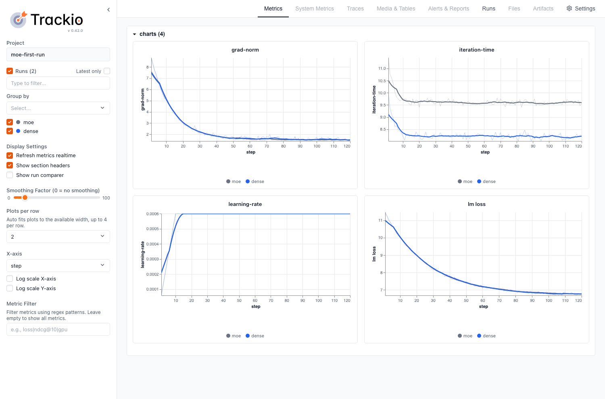

1. 引言
前沿模型是稀疏的。阅读时间：1-2 天。为了获得更好的阅读体验，我们建议不要用手机阅读。 在 Artificial Analysis index 上，得分最高的 20 个开放权重模型里有 18 个是 Mixture-of-Experts（两个例外是分列第十二、第十三的 Nanbeige4.3-33B 和 Qwen3.8 27B，它们是 dense）1。其中包含五家领先实验室各自最强的模型：DeepSeek V4.1 Flash 1017、GLM-5.3、MiMo-V2.6-Pro、Ling 3.1 Flash 1019 和 MiniMax-M3.1-Flash1.
MoE 能带来什么，要看它把推理算力花在什么地方。每个 token 只经过其中少数几个 expert，所以模型可以容纳远多于单个 token 实际所用的参数：你在第 2 章要训练的那个小 MoE 有 6.86B 参数，每个 token 只激活其中 1.22B。而要把推理上的这份节省变成更快的训练，才是难的地方。
我们之前关于训练的深度长文 Smol Training Playbook 讲的是训练 dense 模型，只顺带提到 MoE 设计。因为那本书的主角 SmolLM3 是一个 dense transformer，它的训练不需要任何 MoE 专属技术，比如 expert parallelism。不过我们在那本书的「Going Sparse: MoE」一节里仍然扫过 MoE，讲清它的高层设计选择：稀疏度、粒度、shared expert 与 load balancing。那一节点出了分布式 MoE 训练之所以复杂的三个主因：expert 放置、load balancing 和 all-to-all 通信，但没有深入细节2。这本手册就从这份清单开始。
从 dense 模型转到 MoE，你会多出三个要处理的难题：一个决定每个 token 用哪些 expert 的 router，一份必须在各 expert 之间保持均衡的负载，以及当 experts 被分到多张 GPU 上之后，每个 MoE layer 里都要在这些 GPU 之间做一次 token 交换。每一处都带来 dense 训练里根本不存在的设定项，也带来新的失败方式。后面几章会一次只拿一个设定项出来，结合你可以直接跑的代码细看，大多数地方还配有我们自己在集群上跑出来的结果和数据。
一次跑坏的实验会给你一个症状，但不会告诉你背后的原因。下面这张地图是一个总览，帮你回到源头：从实验失败的样子出发，找到异常行为最早的信号（矿里的金丝雀），再去读这篇手册里解释可能原因的那一节。哪天实验出了问题，这张地图可以一直放在手边。
开始之前，先说明这本手册写给谁。如果你已经在 GPU 集群上训练过 dense 模型，接下来想训一个 MoE，你会从它获益。第 2 章把需要的东西准备好，并让你在单个节点上训出那个小 MoE。如果你更关心 MoE 是怎么工作的、前沿模型都选了哪些设定，而不是自己跑一遍，那就直接跳到第 3 章「MoE 训练剖析」。
一旦 experts 落在不同的 GPU 上，每个 MoE layer 都要在它们之间交换 token，这个模式是 dense 训练从来不会用到的。在你改动模型里任何一行代码之前，你确定自己集群的互联链路扛得住它吗？
2. 准备工作与第一次训练
2.0 你需要准备什么
本章的每一条命令都是为同一类机器写的，好让所有人跑在完全相同的环境里：一个由八卡节点组成的 Slurm 集群。这一节说明这套配置是什么样的、在只有一块 GPU 甚至完全没有 GPU 的情况下你能跟着读到多少，以及如何在 Hugging Face Jobs 上租一台八卡节点。如果你的机器和这里写的不同，你仍然可以跟着读解释，再把命令改成适配你那套的。
命令所假定的集群
这些命令假定集群是Slurm集群，它的每个 GPU 节点各持八块 GPU。容器通过 Enroot 与 Pyxis 启动，二者让 srun 能够在一个镜像里启动任务。3,4 2.1 里那个逐节点的就绪检查用的是 NVIDIA 的 DCGM diagnostics。我们的实验跑在用 Elastic Fabric Adapter（EFA）互联的 AWS P5 节点上，每个节点八块 80 GB 的 H100。
本章大部分内容在一台节点上就能跑完。dense 基线和第一个 MoE 都只申请一个节点、八块约 80 GB 的 GPU。只有网络相关的检查需要更多机器：2.1 里的 all-to-all 测试会跑在两个、四个和八个节点上，2.2 里的 EFA 镜像则在两个节点上验证。
软件来自两个固定来源。第一个是 NGC PyTorch 镜像 26.06-py3，2.2 会引入它并在其上加上集群的网络库。第二个是停在 commit d6316eb45 上的一份 Megatron 检出，你把它挂载进容器，而不是构建进镜像里。你还需要一个 CPU worker 和 GPU 节点都能读到的文件系统，因为 2.3 会在 CPU 分区上做 tokenize，训练任务再从那里读结果。
只有一块 GPU，或者一块也没有，怎么读
没有集群你也能得到这篇长文的大部分价值。第 3 章把 MoE layer 拆开讲：每一部分做什么、前沿模型为它选了什么，以及每个选择背后的证据。你可以一行代码都不跑、从头读到尾，把那些 flag 留到真有硬件的时候再用。第 4 章把同一套选择继续带过预训练，走进推理服务和强化学习。
在本章里，2.3 的 tokenize 跑在 CPU 上。它用的那个小样本在一台没有 Slurm 的单机上就能跑，所以你可以亲手产出并检查训练任务实际读取的那几个文件。2.4 和 2.5 里的训练配方假定八块约 80 GB 的 GPU，那个 MoE 会把它的 experts 铺满这八块卡。GPU 更少时，就把它们当方法读：两次实验之间哪些东西保持不变、expert 的宽度怎么定、该比较什么。而 2.1 的 all-to-all 测试和 2.2 的 EFA 配置，要按文中的写法跑就需要多个节点。
在 Hugging Face Jobs 上租一台节点
如果你想在不自己持有硬件的情况下跑通单机部分，Hugging Face Jobs 会在 Hugging Face 的机器上运行一个 Docker 镜像和一条命令，按分钟计费。任何账户余额为正的用户或组织都能用，PRO、Team 或 Enterprise 订阅每月赠送的额度也可以拿来付这笔费用。5 hf jobs hardware 列出的最大硬件规格有八块 GPU，和 2.4 与 2.5 用到的数量一样；例如 h200x8 里有八块 141 GB 的 H200。6
一个 job 由三样东西定义：一个来自 Docker Hub 或某个 Hugging Face Space 的 Docker 镜像、一条命令、一个硬件选项。所以要在上面跑本章，意味着把 2.2 里的那个镜像打包成 Docker 镜像，并把 Slurm 的启动器换成一条 Jobs 命令。除非你另外设置超时，job 会在 30 分钟后停止。7 第一条命令只检查这个 job 是否看得见全部八块 GPU：
hf jobs run --flavor h200x8 --timeout 10m \
pytorch/pytorch:2.6.0-cuda12.4-cudnn9-devel \
python -c "import torch; print(torch.cuda.device_count())"不管是在自己的集群还是租来的节点上跑这些配方，分给你的机器都可能不按标称表现工作。一块悄悄变慢的 GPU 或一条悄悄变慢的链路，你要怎样才能发现它？
2.1 先测你的硬件
在开始调模型之前，先弄清这些机器能做到什么。用 Megatron 的 alltoall dispatcher 时，每个 MoE layer 都要把 token 发给持有对应 expert 的 GPU，再通过另一次 all-to-all 把结果取回来。因此 GPU 之间的链路本身就是你要测的工作的一部分：一个健康的 all-reduce 结果，并不能告诉你这些 token 交换会有多快。
下面的检查请在作业分配到的资源（allocation）里、启动训练之前跑完。用 Pyxis 时，srun --container-image 会启动一个容器；下一节说明怎么准备训练镜像。3
逐节点检查
先对每个分配到的节点做一次就绪检查。NVIDIA 的 DCGM 提供若干诊断级别，其中 level 1 面向就绪检查，更高的级别会加上用于排查故障的测试。下面这条命令在每个节点上各起一个任务，这样你可以在开始训练前逐个查看结果。8
NNODES=$SLURM_JOB_NUM_NODES
srun --nodes="$NNODES" --ntasks="$NNODES" --ntasks-per-node=1 \
dcgmi diag -r 1 --fail-early如果每个节点都通过，就继续做通信测试。如果有节点没通过，保留它的诊断输出，先查清楚再继续。例如在我们的一个节点上，一次 level 2 诊断同时报告了温度限频（thermal violation）、PCIe 测试失败和内存测试失败，涉及三块 GPU。
更耗时的诊断留给单独的维护窗口。NVIDIA 把 level 3 和 level 4 定位为管理员做事后复盘的测试，而 level 1 才是就绪检查。8
准备诊断镜像
如果你的集群已经提供 nccl-tests 镜像，把 NCCL_TESTS_IMAGE 设成它的路径即可。否则在带 EFA 的 AWS 上，你可以导入与 AWS NCCL test recipes 一起维护的那个公共镜像。目标位置要选在分配到的节点都能访问的文件系统上：9
NCCL_TESTS_IMAGE=/shared/images/nccl-tests.sqsh
mkdir -p "$(dirname "$NCCL_TESTS_IMAGE")"
enroot import -o "$NCCL_TESTS_IMAGE" \
'docker://public.ecr.aws#hpc-cloud/nccl-tests:latest'把这个导入出来的 SquashFS 文件和你的基线一起留存，因为再次导入 latest 可能得到不同的镜像。想要可复现的导入，就照 AWS recipe 的做法选一个带版本号的 tag，别用 latest。10,9
如果你需要自己构建镜像，AWS 的 recipe 也提供了 Dockerfile。换一种网络 fabric 时，就改用它所支持的 CUDA、NCCL、MPI 与网络插件组合；NVIDIA 的 nccl-tests 构建说明 讲清了怎样挑这些库路径。多节点测试要求构建时启用 MPI=1。下面这个基准假定 MPI 能通过 Slurm 的 PMIx 集成来启动，因此镜像要和集群的 MPI 配置对上。11
测你真正会用的那个集合通信
节点都通过之后，就在这批分配上测 all-to-all 的带宽。下面这条命令每块 GPU 起一个 rank，每个 rank 交换一个 8 GiB 的缓冲区，与我们基线所用的大消息测试保持一致。请使用上一步准备好的 NCCL_TESTS_IMAGE 路径；如果你的镜像把 nccl-tests 装在别处，改一下可执行文件路径。
srun --nodes="$NNODES" --ntasks="$((8 * NNODES))" \
--ntasks-per-node=8 --gres=gpu:8 --mpi=pmix --cpu-bind=none \
--container-image="$NCCL_TESTS_IMAGE" --no-container-mount-home \
/opt/nccl-tests/build/alltoall_perf \
-b 8G -e 8G -g 1 -c 1 -n 20读结果之前先看 rank 列表：两个八卡节点的分配应该列出 16 个 rank。然后按被测消息大小去看 busbw 和 #wrong 这两列。这是我们两节点基线的 out-of-place（收发缓冲区分开）结果，其余列略去：
size (B) busbw (GB/s) #wrong
8589934592 77.14 0#wrong 里的零表示该次结果的正确性检查通过。这个带宽可以作为后续相同节点数、相同每节点 GPU 数、相同测试参数的分配的参照。把当时的节点列表一并记下来，这样以后测出慢结果时能回溯到具体是哪几台机器。在另一次两节点分配里，我们设置了 NCCL 调优变量后重跑，同样的消息大小达到 39.84 GB/s——所以请把每一次基线对应的节点和设置都记清楚。
all-reduce 作为对照仍然有用，但这两种集合通信在同一批机器上的表现可能差得很远。那次较慢的两节点测试，all-reduce 给出 398.52 GB/s，而它的 all-to-all 只有 39.84 GB/s。对一个要在这些节点之间交换 token 的 MoE 来说，真正测到相关通信模式的是后一个数字。
为每种分配规模各留一条基线
节点越多，一次 all-to-all 中跨节点网络的部分就越大。我们的多节点扫描结果说明了为什么基线必须依赖节点数：两节点到 77.14 GB/s，四节点只有 39.25 GB/s，八节点 30.91 GB/s。比较时，请让每次分配和它自己节点数下的基线比，用相同的消息大小、相同的结果列。
在选定参照之前，先在一套已知正常的配置上重复这个检查，期间硬件、软件和测试参数都保持不变。用得到的这个范围来判断一次新分配是否适合开始训练。一个可用的起始策略是：要求达到基线带宽的 90%，并且正确性检查通过。按上面那个两节点结果，带宽阈值就约为 69 GB/s。阈值要按你集群实际观测到的波动来调。举个例子，如果定一个固定的 33 GB/s 阈值，那它会接受那个慢速的两节点结果，却会把八节点扫描的正常结果判为不合格。
在排查一次偏慢的分配期间，请保持这条基线不变。如果你同时还想试 NCCL 调优变量，那就在同一批节点上用相同的测试参数比较不同设置。我们默认设置和调优后的设置用的是不同的节点对，所以它们之间的带宽差不能用来判断这些变量的作用。
训练期间继续检查变化
要在训练期间定期做硬件检查，就用 Megatron 的 --gpu-sniff-test-interval <n>。它在训练开始前运行一次，之后每 n 个 iteration 运行一次（training.py#L4850-L4852、training.py#L4484-L4489），其中包括在 expert-parallel group 上做一次 all-to-all（gpu_sniff_test.py#L5-L21）。出现变慢时，它的离群值告警会指出该查哪些 rank（gpu_sniff_test.py#L104-L118）。
诊断镜像已经让你能测 GPU 和它们的链路了。你的训练镜像需要访问同一套硬件，那我们来准备它，并检查它的网络库。
2.2 构建你的镜像
一套训练环境有两部分要弄对：跑 GPU 计算的那些库，以及把这些 GPU 跨节点连起来的网络库。我们先从 NVIDIA 的 PyTorch 容器起步解决第一部分，再补上集群所需的网络支持。把 Megatron 放在独立的检出里，你就能在不动镜像的情况下改训练代码。
这里的例子在 Slurm 上使用 Enroot 和 Pyxis。基础镜像是 NGC PyTorch 26.06-py3；其中和网络有关的那些步骤针对我们带 EFA 的 AWS P5 节点。换一种集群，就把镜像里这一部分换成该集群支持的网络栈。3,4
导入基础镜像
Enroot 会把一个容器镜像导入成一个 SquashFS 文件，Pyxis 再通过 srun 启动它。选一个计算节点能访问到的输出路径，然后导入基础镜像：4
IMAGE=/path/to/images/pytorch-26.06.sqsh
enroot import -o "$IMAGE" docker://nvcr.io#nvidia/pytorch:26.06-py3Megatron 的检出不要放进这个镜像，启动训练时再挂载进容器。本文里的这些 flag 针对的是 commit d6316eb45；显式检出这个 commit，能让你读示例时对照的代码和真正跑起来的代码是同一份。来源说明里列出了每一次测量所用的镜像与 commit。
这份检出，以及后面的数据和 tokenizer，都要放在 CPU worker 和 GPU 节点都能读的文件系统上。下面这些命令里，SHARED_ROOT 就是这个目录，PROJECT_DIR 是你的项目目录，配套脚本 检出到它下面的 scripts/ 文件夹里。
export SHARED_ROOT=/path/to/shared/work
export PROJECT_DIR="$SHARED_ROOT/moe-blogpost"
git clone https://gist.github.com/nmntz/5de952d686f66d7bce5bce8cba9d7139.git "$PROJECT_DIR/scripts"
git clone https://github.com/NVIDIA/Megatron-LM.git "$SHARED_ROOT/Megatron-LM"
cd "$SHARED_ROOT/Megatron-LM"
git checkout d6316eb45bf1bfbb6f1f848c0b56e55166564d80确认能访问 GPU
在加入集群的网络库之前，先确认基础镜像能导入 PyTorch 和 Transformer Engine，并且能看见 GPU。请在分配到的八卡节点里跑这段命令，路径用上面的 IMAGE：
srun --nodes=1 --ntasks=1 --gres=gpu:8 \
--container-image="$IMAGE" --no-container-mount-home \
python -c '
import torch, transformer_engine
print("torch", torch.__version__)
print("transformer_engine", transformer_engine.__version__)
print("device_count", torch.cuda.device_count())
x = torch.randn(8).cuda().sum()
print("cuda sum ok", x.item())
'未经改动的镜像报出了下面的版本和设备数量。这条命令的最后一行还会在 GPU 上算一个求和，所以在继续之前，请把这个结果和前面几个 import 一起检查一遍。
torch 2.13.0a0+8145d630e8.nv26.06
transformer_engine 2.16.0+4220403e
device_count 8这个 CUDA 结果只验证了在本节点内的 GPU 上能执行。要跨节点走 EFA 通信，还得加上下面要说的网络插件和它的依赖。
加上 EFA 支持
在我们的 AWS 节点上，网络这一层由 EFA 用户态库，以及针对镜像内的 NCCL 构建出来的 aws-ofi-nccl 插件组成。构建时用的是 EFA installer 1.49.0 和 aws-ofi-nccl v1.19.2。请把这两个版本号和基础镜像一起写进你的构建配方里。
EFA 镜像构建脚本 会从基础镜像创建一个可写的 Enroot 容器，用 --skip-kmod 装上 EFA 用户态库，再针对镜像里的 NCCL 编译那个插件，然后导出一个新的 SquashFS 镜像并删掉临时容器。请在带 Enroot 和 GPU 访问权限的计算节点上运行它，并另给一个全新的输出路径：
EFA_IMAGE=/path/to/images/pytorch-26.06-efa.sqsh
bash "$PROJECT_DIR/scripts/build_efa_image.sh" "$IMAGE" "$EFA_IMAGE"后续启动训练时，把 EFA_IMAGE 作为 --container-image 路径使用。这个脚本准备好的是网络那一层；请把这个环境变量设置和镜像一起留着，作业才能找到并选中这些库。
这里的库路径指向容器内部安装的那几份副本，而 NCCL_NET_PLUGIN=ofi 是按名字选中插件。在我们的环境里，把插件值写成文件系统的完整路径，会让 NCCL 拼出一个无效的动态库名字。
export LD_LIBRARY_PATH=/opt/amazon/ofi-nccl/lib:/opt/amazon/efa/lib:${LD_LIBRARY_PATH:-}
export NCCL_NET_PLUGIN=ofi
export FI_PROVIDER=efa
export FI_EFA_USE_DEVICE_RDMA=1
export NCCL_SOCKET_IFNAME='^lo,docker0,veth_def_agent'
export NCCL_DEBUG=INFO排除某个 socket 网卡，针对的是 NCCL 用来建立通信的初始连接。在我们的节点上，NCCL 选中了 veth_def_agent，尝试连接它的链路本地地址，然后以 Connection refused 失败。把这个网卡排除掉之后，启动就继续往下走了。要复用这条设置之前，请按你集群实际的网卡接口调整排除列表。
验证网络路径
第一次做多节点训练启动时，先读 NCCL 的初始化日志，再去解读训练性能。这一步是在训练镜像自己身上检查网络路径。对这里说的 EFA 镜像，你要找的那一行是：
NCCL INFO Using network Libfabric如果你看到的是 Using network Socket，就去读它正上方那些插件加载信息。一个无效的插件名或一个缺失的库版本，都可能让 NCCL 退回用 socket 传输。例如 EFA_1.4 这个报错就指明了缺少哪个库版本，要先解决再重试。
日志确认的是作业最终选了哪种传输方式；它的带宽仍然是另一件要测的事。请把训练镜像和网络设置，与 2.1 的诊断结果一起记下来，在比较两者性能时把两套环境分别写清楚。
硬件检查完、镜像也准备好了，可以来看第一次训练。它从数据开始：把原始文本变成 token 序列，并存成 Megatron 期望的格式。
2.3 做 tokenize
Megatron 从成对的索引文件里读取训练文本。.bin 文件存 token ID，.idx 文件告诉 loader 每条序列从哪里开始、到哪里结束。把这些文件一次性准备好，dense 和 MoE 两次实验读的就是同一批 token，于是改模型不会连带改变数据。
我们会用 FineWeb-Edu 和 Llama 3.2 tokenizer。Datatrove 的 MegatronDocumentTokenizer 能直接写出这个格式；剩下的事情是选一个输出目录、检查一个小样本，再把更大规模的 tokenize 作业提交上去。
准备 tokenizer
把数据和 tokenizer 放在 SHARED_ROOT 下面，也就是 2.2 里那个共享目录。tokenize 脚本 会在本地跑小样本， 更大的那个作业则提交成一个 Slurm 数组作业。
export TOKENIZER_DIR="$SHARED_ROOT/tokenizer"
python3.11 -m venv "$SHARED_ROOT/tokenize-venv"
source "$SHARED_ROOT/tokenize-venv/bin/activate"
python -m pip install \
'datatrove @ git+https://github.com/huggingface/datatrove.git@2c895af7a95010a96fa53e2dc77cc0ce92799e3f' \
pyarrow tokenizers huggingface_hub原始 tokenizer 的仓库 meta-llama/Llama-3.2-1B 需要申请访问权限。如果你的账户有权限，就先执行 hf auth login，然后在下载命令里用那个仓库。否则可以用 unsloth/Llama-3.2-1B 这个不设限制的副本：我们比对过，两者的词表和 token ID 是一致的。之后的 tokenize 和训练都会读这同一份下载下来的 tokenizer 文件。12
TOKENIZER_REPO=unsloth/Llama-3.2-1B
hf download "$TOKENIZER_REPO" \
--include 'tokenizer*' --include 'special_tokens_map.json' --include 'config.json' \
--local-dir "$TOKENIZER_DIR"Datatrove 会从这个目录读取 tokenizer.json，并在每篇文档后面追加 <|end_of_text|>。之后 Megatron 通过 --tokenizer-model 拿到这个目录，同时也由此获得 tokenizer 的配置。
先检查一个小分片
在提交完整的数组作业之前，先在一台 CPU 计算节点上 tokenize 一小份样本。这条命令最多读 1000 篇文档并全部保留，结果写到一个单独的目录里，免得把样本误当成训练语料。
python "$PROJECT_DIR/scripts/tokenize_first_run.py" \
--tokenizer "$TOKENIZER_DIR/tokenizer.json" \
--output "$SHARED_ROOT/data-smoke" --limit 1000输出的前缀是 fineweb-edu_00000_tokens。请在 2.2 里的训练镜像内，用 Megatron 自己的读取器检查它，并申请一个能让 Pyxis 启动容器的分配。先把 tokenize 用的虚拟环境退出，免得它的 Python 覆盖了镜像里的解释器。如果你按 EFA 那一套配置，就把 TRAIN_IMAGE 设成 EFA_IMAGE；否则设成你集群准备好的那个训练镜像。
deactivate
export TRAIN_IMAGE="$EFA_IMAGE"
export MEGATRON_PATH="$SHARED_ROOT/Megatron-LM"
srun --nodes=1 --ntasks=1 \
--container-image="$TRAIN_IMAGE" \
--container-mounts="$SHARED_ROOT:$SHARED_ROOT" \
--container-workdir="$MEGATRON_PATH" --no-container-mount-home \
env PYTHONPATH="$MEGATRON_PATH" python -c '
import sys
from megatron.core.datasets.indexed_dataset import IndexedDataset
data = IndexedDataset(sys.argv[1])
assert len(data) > 0
print("sequences", len(data))
for i in range(min(3, len(data))):
tokens = data[i]
assert len(tokens) and tokens[-1] == 128001
print("length", len(tokens), "last token", int(tokens[-1]))
' "$SHARED_ROOT/data-smoke/fineweb-edu_00000_tokens"你应该能看到一个非零的序列数，以及每条被检查序列末尾的 last token 128001。最后这个 token 就是我们要求 tokenizer 追加的文档边界。通过 Megatron 读一遍这个分片，还能在 GPU 训练开始之前确认 Megatron 能解析索引、能从 token 文件里读出前面的几条序列。
提交 tokenize 作业
小样本检查的是文件格式；较大的那个作业准备的是一份能随着你训练规模增长一直复用的语料。请在登录节点上、保持同一个虚拟环境处于激活状态提交它。把 CPU_PARTITION 设成你集群的 CPU 分区；如果调度器要求，再加上 --qos。脚本为每个任务申请 12 个 CPU 和 24 GB 内存，并且这些 worker 上必须能以同样的路径访问那个虚拟环境。
source "$SHARED_ROOT/tokenize-venv/bin/activate"
export OUT_DIR="$SHARED_ROOT/data/fineweb-edu"
CPU_PARTITION=your_cpu_partition
python "$PROJECT_DIR/scripts/tokenize_first_run.py" \
--tokenizer "$TOKENIZER_DIR/tokenizer.json" --output "$OUT_DIR" \
--tasks 100 --limit -1 --sample-rate 0.074 --partition "$CPU_PARTITION"Datatrove 会打印提交后的作业 ID。用这个 ID 配合 squeue -j <job-id> 跟踪数组作业的进展；在重新执行同一条命令之前，先到 $OUT_DIR/logs 下看看失败的任务。
每个任务读取输入文件的一份份额，在 tokenize 之前随机保留 7.4% 的文档。由于文档长短不一，这个比例并不会固定输出的 token 数。重启一个中断的作业时，请保持任务数、采样比例和输出目录不变。Datatrove 靠日志目录下的完成标记来跳过已经完成的任务。13
把分片交给 Megatron
要等数组作业全部结束后再生成训练清单。下面这个检查要求 100 个任务完成标记和预期的分片对都齐全，然后把各分片的前缀逐行写进 data-args.txt。每个前缀同时对应那两个文件，所以清单里既不该出现 .bin，也不该出现 .idx。
export DATA_ARGS="$OUT_DIR/data-args.txt"
python - <<'PY'
import os
from pathlib import Path
root = Path(os.environ["OUT_DIR"])
prefixes = [root / f"fineweb-edu_{rank:05d}_tokens" for rank in range(100)]
for rank, prefix in enumerate(prefixes):
assert (root / "logs/completions" / f"{rank:05d}").is_file(), rank
for suffix in (".bin", ".idx"):
path = Path(str(prefix) + suffix)
assert path.is_file() and path.stat().st_size > 0, path
Path(os.environ["DATA_ARGS"]).write_text("\n".join(map(str, prefixes)) + "\n")
print(f"wrote {len(prefixes)} prefixes")
PY
deactivate训练会通过 --data-args-path 读取这个文件。这个选项提供的是和 --data-path 一样的列表，但能把一大串分片从启动命令里挪开。启动器还会把 --data-cache-path 设成一个持久化目录，用来放 Megatron 的样本索引，这样后面用同样数据集配置跑的实验就能复用它们。
最初几次实验我们用 --split 100,0,0，把数据全部划给训练。在你用这次实验去比较模型质量之前，先留出一份 held-out 数据。
数据集能读了，清单也指向了它的分片，就可以启动 dense 基线了。它的 loss、梯度范数和每步耗时，会先立起一个参照，然后我们再引入 experts。
2.4 dense 基线
留一次 dense 实验在手，等 MoE 表现异常时你就有了一个能对照的具体东西。两个模型会用相同的数据、batch size 和优化器，所以 loss 尖峰或者某步变慢时，可以先去和那个更简单的模型对一遍。这次基线还会在 routing 出场之前，把训练镜像和数据加载器一起走一遍。
这个模型有 16 层 transformer，hidden size 2,048，feed-forward 网络宽度 8,192。配上 128,256 的词表，它大约有 12.2 亿参数。配方瞄准的是一个节点、八块显存约 80 GB 的 GPU。启动脚本我们到 MoE 时会复用。
在一个节点上启动
我们用 Trackio 记录训练指标。Trackio 是 Hugging Face 出的一个轻量、开源的实验跟踪工具。它的 API 与 wandb 一致，所以对已有代码来说，import trackio as wandb 通常就是唯一需要改的地方。实验日志写进一个你自己持有的本地数据库，你可以在本地 dashboard 里查看，也可以同步到一个 Hugging Face Space 上和团队一起看实时曲线——不需要账号，也不需要付费方案。14
先在共享存储上、从训练镜像里面创建一个 Python 环境。它继承镜像里的 GPU 库，再加上锁定版本的跟踪包：
srun --nodes=1 --ntasks=1 \
--container-image="$TRAIN_IMAGE" \
--container-mounts="$SHARED_ROOT:$SHARED_ROOT" --no-container-mount-home \
bash -c 'python -m venv --system-site-packages "$1/train-venv" &&
"$1/train-venv/bin/python" -m pip install "trackio==0.42.0"' _ "$SHARED_ROOT"
export TRACKIO_PROJECT=moe-first-run启动器使用 Trackio 的 entry point，把 Megatron 的标量指标按「一个作业一条实验」送进去。两次实验共用上面这个项目，数据都存在 $SHARED_ROOT/trackio 下面。这个适配器用的是 Megatron 已有的标量日志钩子，所以 --log-memory-to-tensorboard 这类 flag 就能控制哪些指标会到达 Trackio。
first-run 脚本 把训练用的 flag 分组放进 Bash 数组。它使用前面几节准备好的训练镜像、锁定的 Megatron 检出、tokenizer 目录和数据清单。挂载路径请保持在 SHARED_ROOT 下面，并把 TRAIN_IMAGE 设成准备好的那个 SquashFS 镜像。
在共享的博客检出目录里，把 dense 作业提交到你的 GPU 分区。提交作业时，2.3 里那些变量要保持导出状态。脚本会把镜像路径、Megatron commit 和数据清单连同输出一起记录下来。
cd "$PROJECT_DIR"
GPU_PARTITION=your_gpu_partition
sbatch --partition="$GPU_PARTITION" scripts/first_run.sbatch denseSlurm 会保留一个八卡节点。在这个节点里，一个 srun 任务启动 torchrun，后者为每块 GPU 起一个训练进程。实验输出在 $SHARED_ROOT/runs/dense-<job-id> 下，训练日志在提交目录里的 first-run-<job-id>.out。
第一次运行跑 120 个 iteration 就停。这套配置检查里，checkpoint 保存和验证都是关掉的。接着去做 MoE 时，请把日志和 Trackio 数据留着——它们是下一节的参照。
要看曲线，就在一台能读到保存目录的机器上装好 trackio==0.42.0，然后起 dashboard。在项目里选中 dense 和 MoE 这两条实验，就能把它们对比着看。
TRACKIO_DIR="$SHARED_ROOT/trackio" trackio show --project "$TRACKIO_PROJECT"理解这份配置
tensor parallelism 和 pipeline parallelism 都设为一，因此每块 GPU 都持有 dense 模型的一份完整副本。data parallelism 把 batch 分到八块 GPU 上，而 distributed optimizer 与通信重叠在两次实验里都是开着的。
--tensor-model-parallel-size 1 --pipeline-model-parallel-size 1
--expert-model-parallel-size 1 --context-parallel-size 1
--use-distributed-optimizer --overlap-grad-reduce --overlap-param-gather
--micro-batch-size 8 --global-batch-size 512一个 micro-batch 在每块 GPU 上含 8 条序列。八块 GPU 合起来，每个 micro-batch 处理 64 条序列；做 8 步 gradient accumulation 就得到一个 512 条序列的 global batch。在 4,096 的序列长度下，每个优化器 step 消耗 2,097,152 个 token。把这些量保持不变，dense 和 MoE 的每步耗时才能直接比较。
学习率走的是 warmup–stable–decay 三段调度，由 --lr-decay-style WSD 选择。它先升到 5e-4，保持这个学习率，然后在设定的 token 预算接近结束时衰减。这次 120 个 iteration 的运行会在 stable 阶段内结束；它的停止条件并不会缩短学习率的调度。
完整的 activation recomputation 让初始配置落在我们基线所用的显存预算内。在 micro-batch 大小为八、并使用原生 cross-entropy 实现的情况下，对应的那次不做 recomputation 的运行在算 loss 时就把显存用尽了。两个模型都保留 recomputation，是为了让第一次比较不把「改了模型」和「为省显存做的改动」混在一起。
--recompute-granularity full --recompute-method uniform --recompute-num-layers 1
--cross-entropy-loss-fusion --cross-entropy-fusion-impl native请把 dense 实验的 loss、梯度范数和每步耗时留在 Trackio 里作为你的参照。等你把 feed-forward 层换成 experts，这些量会帮你看清这个改动对训练的影响。
2.5 你的第一个 MoE
dense 模型对每个 token 都套用同一个 feed-forward 网络。在 MoE 里，router 为每个 token 从 64 个更小的 expert 中选出 8 个，于是模型可以持有比单个 token 实际所用更多的参数。我们挑选 expert 宽度的标准是：被选中的这 8 个 expert，其 feed-forward 参数量正好等于它们替换掉的那个 dense 层。
这样我们得到一个 68.6 亿参数的模型，每个 token 大约激活 12.2 亿参数。多出来的容量带来一项新的开销：token 必须被送到它们选中的 expert 那里，而 expert 的输出又必须回到需要它们的那个进程。
替换 feed-forward 层
启动器在你传入 moe 时就会选用 MoE 配置。请用和 dense 实验相同的、已导出的路径与 GPU 分区提交它，镜像、检出、tokenizer 和数据清单都保持不变：
sbatch --partition="$GPU_PARTITION" scripts/first_run.sbatch moeExpert parallelism 从一提到八，把 64 个 experts 分到这台节点的八块 GPU 上。每块 GPU 持有 8 个 experts，而 router 会从全部 experts 里为每个 token 选出 8 个。
--expert-model-parallel-size 8 --expert-tensor-parallel-size 1
--num-experts 64 --moe-ffn-hidden-size 1024 --moe-router-topk 8
--moe-token-dispatcher-type alltoall --moe-grouped-gemm
--moe-router-load-balancing-type aux_loss --moe-aux-loss-coeff 1e-3
--moe-router-dtype fp32 --moe-per-layer-loggingalltoall 负责把被路由的 token 在 GPU 之间搬运，grouped GEMM 负责执行本地那些 experts 的矩阵乘法。aux loss 促使 router 把工作量分到各个 expert 上，系数取 1e-3。我们还把 router logits 用 fp32 计算，并打开逐层日志，这就得到了第 3 章要逐项检查的那些初始设定和测量。
其余部分都留在公共配置里，包括完整的 activation recomputation。特别要说明的是，dense 用的那个 --ffn-hidden-size 8192 设置仍然留在脚本里，而 --moe-ffn-hidden-size 1024 给出的是每个 expert 的宽度。
统计激活参数量与总参数量
一个不带 bias 的 SwiGLU expert 有三个权重矩阵。在 hidden size 2,048、expert 宽度 1,024 下，它们的总大小是 3 × 2048 × 1024 = 6,291,456 个参数。因此选中 8 个 expert，每个 token 就用到 50,331,648 个 feed-forward 参数，正好等于 dense 层的那 3 × 2048 × 8192 个参数。
64 个 experts 合起来的 feed-forward 参数是原来的八倍。但整个模型的增长倍数要小一些，因为 attention、embeddings 和其他非 expert 部分的大小没有变，每层只是多出一个很小的 router 矩阵。把这 16 层的所有部分加在一起，总参数量是 68.6 亿、激活参数量 12.21 亿；作为对照，dense 模型是 12.19 亿。
结果是总参数量约为原来的 5.6 倍，而激活参数量几乎不变。但激活参数量相等并不等于每步耗时相等：把 token 分散到各个 expert 上，会改变 GPU 工作的组织方式，还会引入通信。
留一份 dense 参照
只有一个 expert、采用 top-1 routing 的 MoE，计算出来的函数和它来源的那个 dense 模型相同，所以它训练起来应当和 dense 模型一样。在我们那次实验里，一个从 dense checkpoint upcycle 出来、与 dense 实验并行继续跑的 1-expert MoE，在 15 个对齐的 step 上与它的差距不超过 0.00087。反过来，如果让这个 MoE 从自己的初始化开始，这样的比较就说明不了什么——两次实验在第 4 个 iteration 上相差 2.72。MoE 那侧还会记下一个正好为 1 的 load-balancing loss，以及梯度里约 32,770 个零值，而 dense 实验最多只有 17 个：那是 router 的权重，只有一个 expert 时它们拿不到梯度。这次一致性实验 upcycle 的是 dense checkpoint，而 3.6 节还会回到这条路径上。
在我们停留的那个 commit 上，这条 upcycling 路径只有对 training.py 做两处本地修改才跑得起来。第一处是把 dense 模型以关键字参数 model 传给 checkpoint loader（training.py#L3074-L3078），而 load_checkpoint 里那个参数名并不叫 ddp_model。第二处涉及为加载而构建的那个 dense 模型：upcycling 代码在 args 里打开了 dense 形状（training.py#L3056-L3062），但模型构建器读的是启动时保存下来的模型配置（training.py#L2917-L2926），于是那个模型仍然带着 MoE layer 的结构，加载就卡在一个缺失的 pre_mlp_layernorm 键上。
确定性模式让一次实验可以复现，这样两次实验之间的差距才有意义。在我们停留的那个 commit 上，--deterministic-mode 要求把 cross-entropy loss fusion、TP 通信重叠和融合的 aux-loss kernel 都关掉（determinism.py#L28-L37、determinism.py#L195-L210），并且只接受取值为 0 的 NVTE_ALLOW_NONDETERMINISTIC_ALGO（determinism.py#L85-L90）；当 NCCL_ALGO=Ring、NCCL_EP_HT_EM_AG_SCAN_MODE=1、NVTE_ALLOW_NONDETERMINISTIC_ALGO=0、CUBLAS_WORKSPACE_CONFIG=:4096:8 没有设置时，它自己会把它们设好（determinism.py#L40-L50）。2.4 那个启动器传了 --cross-entropy-loss-fusion 并导出了 NVTE_ALLOW_NONDETERMINISTIC_ALGO=1，所以在加这个 flag 之前要把这两处都去掉。用这套设置，把这个 MoE 缩到 micro-batch 2、global batch 64、12 个 iteration 跑两遍，每个 iteration 打印出的 lm loss、load-balancing loss、grad norm 和梯度零值数量都相同；不加这些设置，从第一个 iteration 开始 lm loss 就不一致，最大相差 0.00063。
在比较两次实验或追查一个 NaN 之前，先打开确定性模式。
在开发 MoE 的过程中，请把 dense 实验和它的配置留作参照。每当某个改动让训练变慢、或者 loss 不再下降，就回到 Trackio 里那条 dense 实验，在相同的 batch size 和序列长度下比较每步耗时、loss 和梯度范数。两个实验里都出现的问题，会把你指向它们共用的那部分配置；只在 MoE 里出现的问题，则给了你去查 routing 和 expert 执行的理由。

有了这份 dense 参照，你就知道该从哪里开始查。第 3 章会把 MoE layer 一块一块打开，并引入理解它的行为所需要的各种测量。
3. MoE 训练的结构
2.5 里那个 MoE，添上了 dense 实验从来不曾有过的几样东西：一个为每个 token 挑 8 个 experts 的 router，一些可能分到多寡悬殊工作量的 experts，还有一个在 GPU 之间搬运 tokens 的 all-to-all。它们中的任何一个都可能让训练变慢或者让 loss 变差，而与 dense 参照之间的那段差距本身，并不会告诉你是哪一部分造成的。
下面这张图按比我们更小的规模画出了一个 MoE 层——16 个 experts、top-4，而不是我们的 64 个和 top-8——另外还加了一个我们没有的 shared expert。图上画出一批 tokens、router、各个 experts，以及把它们输出相加的那一步。随后每一节都会从同一张图的一个视角切入，把它所讲的那一部分放大，你可以直接跳到自己需要的那部分。有几个视角还带上了本节的一个结果，比如 Step 3.5 Flash 的训练 loss 并没有暴露出来的那些异常 experts（3.6）15。
在 3.0 的监控设置之后，我们从 router 内部开始：它的分数如何变成被选中 experts 的权重，以及到底是 token 选 expert 还是 expert 选 token。接着是 experts 之间负载不均、该用多少个 experts、每个多大、哪些层才放 experts，以及怎样把一次实验启动起来并保持稳定。最后讲一个训练 step 的时间都花在 GPU 的什么地方。
3.0 监控：一次就把它打开
在改动任何设置之前，先把「能告诉你改了有没有用」的那些东西打开。你现在不必弄懂每个数字的含义：每一节都会在它第一次用到某个指标时介绍它（z-loss 在 3.1，MaxVio 在 3.2，耗时与显存在 3.7）。附录 A.1 给出每一项测量的采集命令、计算方式和适用限制。
要打开哪些
2.5 那次实验已经把逐层的 router 损失记了下来（--moe-per-layer-logging），你能看出是哪一层不守规矩（3.1、3.3、A.1）。保留 2.4 里那个 Trackio 启动器，在 2.5 的 flag 之外再加上这些：
--save <dir> --save-interval <m>
--save-tokens-per-expert-interval <n>
--log-throughput --log-params-norm
--log-num-zeros-in-grad --log-max-attention-logitMegatron 会把下面提到的 token 计数和激活导出写到 --save 底下（training.py#L3398-L3401），并且要求旁边再给一个 --save-interval（arguments.py#L1321-L1323），所以这次实验也会把 checkpoint 存在那里。下一个 flag 记录每个 expert 收到了多少 token（3.3、A.1）。其余四项跟踪实验本身的健康度：吞吐、参数范数、梯度中的零值、以及最大的 attention logit（3.6、A.1）。这些标量指标会出现在与你基线相同的 Trackio 项目里，而 routing 的采集结果单独存在各自的文件中。NaN 检查本来就是开着的（arguments.py#L2825-L2827）。
需要时再采集的那些
还有两项测量是有边界的采集：等问题真的来了再跑。
routing trace 记录每个 token 选了哪些 experts（3.1、3.3、A.1）。它挂在 router 上的钩子在 CUDA graph 回放时不会触发（router_trace.py#L23），而且默认会跟踪每一个 iteration（training_config.py#L363-L367），所以要先关掉 graphs 并给它设一个范围：
--moe-routing-trace-path <dir> --moe-routing-trace-max-training-iters <n>
--cuda-graph-impl none激活导出会写到同一个 --save 目录下，这样你就能离线算出逐 expert 的激活范数（3.4、A.1）：
--save-activations-interval <n>监控打开之后，我们从每个 token 的起点开始：router。它负责挑 experts，可每个 expert 在 token 的输出里究竟算多少？
3.1 Router 打分：logits 如何变成权重
router 把每个 token 变成「每个 expert 一个 logit」，而在普通的 top-k routing 里，正是这 top-k 个 logits 决定这个 token 要去哪几个 experts。从这些 logits 到真正混合 expert 输出的那组权重之间，横着四个选择。门控函数、输出尺度（一个乘在被选中 experts 的加权和上的常数）和尖锐度（router 的分数有多尖，也就是排第一的 expert 主导到什么程度），改变的是每个被选中的 expert 在 token 输出里占多少分量，以及这个输出有多大。在普通的 top-k routing 里，对一个给定 token 的 logits 来说，这四者都不改变谁胜出：它们要么保持 experts 的原有次序，要么在 top-k 之后才起作用。
精度是唯一的例外。一个 bf16 的 router 可能把两个很接近的 logits 舍入到同一个值，从而换掉胜出的那几个——所以这一处唯一应当始终采用的设置，就是 fp32 的 router。
下面这张表给出当前 10 个开源 MoE 在这四项上各选了什么，一行一个模型。
| 模型 | 门控函数 | 输出尺度 | 尖锐度 | router 精度：训练时；推理代码里 |
|---|---|---|---|---|
| DeepSeek-V4.1-Flash | sqrt(softplus) | 重归一化，k = 6 时为 1.5（√k = 2.45） | 一个 temperature 设置，保持 1.016 | 未见说明；fp3216 |
| Gemma 4 26B-A4B | softmax | 重归一化，再乘一个学习到的逐 expert 尺度，128 个里取 8 个（√k = 2.83）17 | 归一化的 router 输入：RMSNorm、一个学习到的尺度，再乘 1/√d17 | 未见说明；bf16，softmax 用 fp3217 |
| GLM-5.3 | sigmoid | 重归一化，k = 8 时取 2.5（√k = 2.83） | 无 | 未见说明；fp3218 |
| Inkling | sigmoid，在 top-6 与它的 2 个 shared experts 上联合归一化19 | 8.0 乘一个学习到的全局尺度，6 个被路由的加 2 个 shared（√8 = 2.83）19 | 无 | 未见说明；bf1619 |
| Kimi K3 | sigmoid | 重归一化，896 个里取 16 个时取 1.0（√k = 4）20 | 无 | 训练侧是 post-training QAT 里的 MXFP421；fp3220 |
| MiMo-V2.6-Pro-RL | sigmoid | 重归一化，k = 8 时不乘系数（√k = 2.83） | 无 | 未见说明；fp3222 |
| North-Mini-Code | sigmoid | 不重归一化：权重就是原始分数，128 个里取 8 个23 | 无 | 未见说明；bf1623 |
| Qwen3.8-Flash-Next | softmax24 | 重归一化，k = 10 时不乘系数（√k = 3.16）24 | 无 | 未见说明；bf16，softmax 用 fp3224 |
| Step-5-Preview | sigmoid25 | 重归一化，352 个里取 8 个时取 3.0（√k = 2.83）25 | 无 | 未见说明；fp3225 |
| ZAYA1-8B | 对 MLP router 的 logits 做 softmax26 | 不重归一化，16 个里取 top-1，另加一个 skip expert26 | 无 | RL 期间 softmax 用 fp32；bf1626 |
先从门控函数说起。如果它从不改变胜者，那它改的是什么？
门控函数
Softmax、sigmoid 和 sqrt(softplus) 对 experts 的排序方式相同，所以不同的地方是每个被选中的 expert 拿到多大的权重。下面这张图把某个不确定的 router 给出的一个 token 的 logits 一路抬到自信的那一端：softmax 让排第一的 expert 的分量越来越大，而 sigmoid 在大 logits 上会饱和，于是自信的那些 experts 最后拿到一样的权重。当选择只依据门控分数本身时，各种门控函数都保持这个排序。3.3 里的 expert bias 是在选择之前加到门控之后的分数上的（moe_utils.py#L936-L938），所以它把一个 expert 挪动多少取决于这些分数本身的大小，换一个门控函数就可能改变 top-k。限制到组内的 routing（3.7）也会改变 top-k，因为它是靠「把每组里最高的几个分数加起来」来挑组的（moe_utils.py#L712-L715）。
在这张图里，sqrt(softplus) 落在 softmax 和 sigmoid 之间：对正的 logits，随着尺度变大，两个权重之比趋向于两者 logits 之比的平方根。DeepSeek-V4 从 sigmoid 换成了 sqrt(softplus)27。在 Megatron 里，3.3 的那个 expert bias 需要 sigmoid 或 sqrt(softplus)：用 softmax 时它在启动阶段就拒绝这个 bias（transformer_config.py#L3139-L3147），而它的 softmax 分支也从不把 bias 加进去。提出这个 bias 的 Wang 等人28解释了它为什么和 softmax 不搭：softmax 的归一化让两个 experts 之间的差距取决于其余每一个 expert 的分数，因此这个 bias 很难调。他们最终还是用它均衡了一个 softmax 的 router28。Auxiliary loss 三种门控都能用（moe_utils.py#L998-L1014）。
Megatron 源码
moe_utils.py#L913-L927（softmax，在 top-k 之前还是之后）
913if score_function == "softmax":914if use_pre_softmax:915scores = torch.softmax(logits, dim=-1, dtype=torch.float32)916if precomputed_indices is not None:917top_indices = precomputed_indices918probs = torch.gather(scores, dim=1, index=top_indices)919else:920probs, top_indices = compute_topk(scores, topk, num_groups, group_topk)921else:922if precomputed_indices is not None:923top_indices = precomputed_indices924scores = torch.gather(logits, dim=1, index=top_indices)925else:926scores, top_indices = compute_topk(logits, topk, num_groups, group_topk)927probs = torch.softmax(scores, dim=-1, dtype=torch.float32)
moe_utils.py#L928-L941
928elif score_function in ("sigmoid", "sqrtsoftplus"):929if score_function == "sigmoid":930scores = torch.sigmoid(logits.float())931else:932scores = torch.nn.functional.softplus(logits.float()).sqrt()933if precomputed_indices is not None:934top_indices = precomputed_indices935scores = torch.gather(scores, dim=1, index=top_indices)936elif expert_bias is not None:937scores_for_routing = scores + expert_bias.float()938_, top_indices = compute_topk(scores_for_routing, topk, num_groups, group_topk)939scores = torch.gather(scores, dim=1, index=top_indices)940else:941scores, top_indices = compute_topk(scores, topk, num_groups, group_topk)
（sigmoid、sqrt(softplus)，bias 只参与选择），
transformer_config.py#L3139-L3147（用 softmax 时拒绝 bias）
3139if self.moe_router_enable_expert_bias and self.moe_router_score_function not in (3140"sigmoid",3141"sqrtsoftplus",3142):3143raise ValueError(3144"Expert bias for aux-loss-free routing only supports 'sigmoid' and 'sqrtsoftplus' "3145"score functions. Please set --moe-router-score-function to 'sigmoid' or "3146"'sqrtsoftplus', or unset --moe-router-enable-expert-bias."3147)
当被选中 experts 的 logits 全都又大又正时，sigmoid 会给它们一样的权重——上面那个模拟里把尺度一路调大的那个 token 就走到了这里：一个自信的 router，配上一个平坦的 gate，也就是「尖锐度」一节里会回到的那种情形。要知道某次实验的 router 有没有走到这一步，就按 A.1 把 logits 一起打开、采集 routing trace，然后逐层盯两个数字：排第一的那个 expert 的权重，以及 routing 熵——某个 expert 拿走大部分权重时它很低，权重摊开时它很高。
当你用 expert bias 做均衡时（3.3），用 sigmoid（或 sqrt(softplus)），因为 Megatron 在 softmax 下拒绝这个 bias。其余情况用 softmax，它是 Megatron 的默认值。
router 的权重兼着两份差事。它们既负责挑 experts，又正是混合各个 expert 输出时所乘的那些数：这一层返回的是「每个被选中 expert 的输出乘以它的权重」的总和。门控函数决定的是每个被选中的 expert 相对于其他 expert 占多少分量。它并不决定这些 experts 加起来一共占多少：用 softmax 时，top-k 的权重之和小于 1，而且每个 token 少多少还不一样，于是这一层输出的大小就跟着它们一起动。那么，这个合并之后的输出该有多大？
输出尺度
决定 experts 合并输出大小的有两个设置。第一个是重归一化：把选出的 k 个权重重新缩放，让它们的和为 1，输出的大小就不再跟着它们的和走。在 Krajewski et al. 里，重归一化把 granularity 8granularity 8：每个 expert 缩小 8 倍、数量变成 8 倍、每个 token 选的也变成 8 倍，于是参数量和计算量保持不变；粒度的比较见 3.4。的实验验证 loss 从 2.219 降到 2.18329。Megatron 默认就做重归一化（moe_utils.py#L913-L942），--moe-router-pre-softmax 会把它关掉。softmax 配 top-1 时必须开这个 flag：只选一个 expert 时，对这一个 logit 做 softmax 永远是 1，router 拿不到梯度（transformer_config.py#L3213-L3221）。
这个模拟把一个不确定 router 的玩具 token 一路扫到自信的那一端，其中的 experts 互不相关且 RMS 相同：不做重归一化时，被路由输出的大小就跟着 top-k 的概率质量走；做了重归一化，它就被保持在「单个 expert RMS 的 1/√k」到「单个 expert 的 RMS」之间。
第二个设置是 routed 的缩放系数，也就是最后再乘上的那个常数。之所以需要它，是因为即便做了重归一化，被路由输出的大小仍取决于每个 expert 占多少分量。权重全压在一个 expert 上时，输出的均方根（RMS）就是那个 expert 的 RMS；把相同的权重分给 k 个互不相关、RMS 相同的 experts 时，它会降到那个值的 1/√k，而一个接近 √k 的缩放系数正好把它补回来。DeepSeek-V3 在 k = 8 时用的是 2.530，Kimi K2 用 2.827 ≈ √8。已发布的模型在这个值上并不一致：上面那张表里只有 GLM-5.3 和 Step-5-Preview 保持在 √k 附近，而 Kimi 从 K2 的 √8 改成了 K3 在 k = 16 时的 1.020。缩放被路由的输出还会改变它与 shared expert 输出之间的相对权重（3.4）。
这张图的最后一行缩放的是 expert 的输入而不是输出：Llama 4 把每个 token 只送进一个 expert，并在 expert 计算之前先把这个 token 乘以它的 sigmoid 分数31。它的 SwiGLU experts 没有 bias，所以输出大约按分数的平方缩小，而且这个分数还顺带让 SiLU 的门变软。
Megatron 源码
moe_utils.py#L942-L947（先重归一化，再缩放）
942probs = scores / (scores.sum(dim=-1, keepdim=True) + 1e-20) if topk > 1 else scores943else:944raise ValueError(f"Invalid score_function: {score_function}")945946if scaling_factor:947probs = probs * scaling_factor
transformer_config.py#L3213-L3221（top-1 需要 pre-softmax：对一个 logit 做 softmax 梯度为零）
3213if (3214self.moe_router_topk == 13215and self.moe_router_score_function == "softmax"3216and not self.moe_router_pre_softmax3217and self.moe_router_load_balancing_type != "sinkhorn"3218):3219# Requires applying softmax before selecting the top-k when k is 1,3220# since softmax on a [num_tokens, 1] would yield a zero gradient.3221raise ValueError("Please use --moe-router-pre-softmax when topk is 1.")
不做重归一化时，被路由输出的大小会随着每个 token 的 top-k 概率质量起伏——就是上面那个让 loss 更高的设置——所以要盯的数字是每个 token 的被路由输出有多大，也就是它的权重平方和开根号。可以用 A.1 里的 routing trace 离线算出来。
在 top-k > 1 时保持重归一化开启；softmax 配 top-1 时请用 --moe-router-pre-softmax，否则 router 拿不到梯度。routed 的缩放系数没有公认的取值：只有在「权重相同且 experts 互不相关」时 √k 才能恢复被路由输出的 RMS，而已发布的模型在这个值上并不一致。
权重的大小和输出的大小，都取决于 logits 有多尖。router 可能太尖——一个 expert 拿走全部权重——也可能太平——把它的 top-k 平均起来。是什么在决定它的尖平？
尖锐度
用 softmax 时，线性 router 会随着 token 的范数或 router 权重变大而变得更尖：logits 彼此拉开，排第一的 expert 拿走更多权重。下面这张图把三种控制办法与这个线性 router 放在一起比较。Logit soft-capping 主要压缩接近上限的那些 logits。归一化 router 的输入，能去掉来自 token 范数的那一部分。对门控 logits 做归一化，则在 experts 之间把这些分数标准化32，等于把它们的离散程度定在选定的尺度上。
图里那个普通的线性 router 会随 token 范数或 router 矩阵变大而变尖；soft-capping（Grok 2 取 30 且不做重归一化33）要等它的 logits 接近上限时，才把那个大范数 token 的首位权重拉回来。像 Gemma 4 那样归一化输入17，两个 token 的 routing 结果一致，但矩阵变大时它照样变尖；而对门控 logits 做归一化则两者都不受影响。Skywork-MoE 用门控 logits 归一化对付的，正是一个平到让这一层去平均 top-k experts 的 gate34，用了它之后训练 loss 低了一些35。归一化 router 输入这一项，作者只在和 expert embeddings 一起去掉时做过消融36。
Megatron 源码
router.py#L1150-L1152 （先加 jitter，再接普通线性 gate）
1150# Apply input jitter1151input = self.apply_input_jitter(input)1152logits = self.gating(input)
router.py#L824-L831 （乘性输入 jitter）
824if self.config.moe_input_jitter_eps is not None:825eps = self.config.moe_input_jitter_eps826if self.input_jitter is None:827self.input_jitter = torch.distributions.uniform.Uniform(828torch.tensor(1.0 - eps, dtype=input.dtype, device=input.device),829torch.tensor(1.0 + eps, dtype=input.dtype, device=input.device),830).rsample831return input * self.input_jitter(input.shape)
一个平坦的 gate——去平均它的 top-k experts、让模型学得更差的那个——表现为 Max1/Max2 往 1 掉，也就是首位 expert 的权重与第二位的权重之比趋近于 1；Skywork-MoE 在不归一化时就是这样35。请逐层把它和首位 expert 的权重一起看，两者都能从 routing trace 里拿到（A.1）。
如果 gate 变平了，Skywork-MoE 用门控 logits 归一化治好了它。至于 router 的输入，Megatron 提供的是 Switch 那种乘性输入 jitter，即 --moe-input-jitter-eps。
尖锐度存在于 logits 之间的间距里，而 softmax 不在乎一个所有 logits 共享的平移。bf16 在乎：如果所有 logits 一起往上漂，bf16 能表示的值之间间隔就更大，本来很接近的 experts 就可能打平。这些平局会改变胜出的是哪些 expert 吗？
精度
出现并列时，top-k 按 PyTorch 并未规定的方式排序37。下面这张图模拟的是：同一批 token 经过一个 bf16 的 router、64 个 experts、top-8，分别在开与不开 z-loss（对 logits 的 logsumexp 的惩罚）两种情况下 routing。模拟里的 logits 会整体向上漂一个共同的偏移，图上数的是那些选出的 experts 与 fp32 router 的选择不同的 token。
随着模拟中的偏移变大，bf16 router 的 logits 落到更粗的格点上，于是有更多 token 选出的 experts 与 fp32 下不同。Z-loss 靠把 logits 压向负值来降低 logsumexp。在 64 个里取 top-8 时，第 8 个 logit 大约比 logsumexp 低 3.5，所以在这个模拟里，开了 z-loss 它落在 −2.2 附近，没开则落在 +3.6——bf16 在这两个数量级上的舍入步长一样长，因此换掉 experts 的 token 数也差不多；只有 fp32 的 router 一次翻转都没有，因为 fp32 的精度比 bf16 细 65,536 倍38。DeepSeek-V3.2、GLM-4.5 和 Kimi K2.5 在它们的推理代码里用 fp32 计算 router39。支持 fp32 的理由建立在训练侧的证据上，而那些证据讲的是稳定性。在 Switch Transformers 里，bf16 的 router 发散了，而 fp32 的 router 以 bf16 的速度正常训练40。在 ST-MoE 里，router 的 z-loss 让每一次实验都保持稳定41。各家实验室很少说明自己在什么精度下训练 router：上面那张表里，10 份报告只有 2 份提到，而 10 份里有 5 份在推理代码里把 router 的矩阵乘放在 bf16 上跑。这一层其余部分在保住 router 精度的前提下还能降到比 bf16 多低，是 3.7 精度 一节要回来回答的问题。
Megatron 源码
router.py#L124-L130 （router 的 dtype）
124# Convert to specified datatype for routing computation if enabled125router_dtype = input.dtype126if self.config.moe_router_dtype == 'fp32':127router_dtype = torch.float32128elif self.config.moe_router_dtype == 'fp64':129router_dtype = torch.float64130logits = router_gating_linear(input, self.weight, self.bias, router_dtype)
moe_utils.py#L1424-L1435 （操作数是 bf16，logits 是 fp32）
1424if te_general_gemm is not None and router_dtype != torch.float64:1425# cuBLASLt's non-FP8 bias epilogue expects bias and output to have the same1426# dtype. Router parameters may be BF16 while router logits are FP32, so cast the1427# small bias vector before passing it to TE.1428gemm_bias = bias.to(router_dtype) if bias is not None else None1429output = te_general_gemm(weight, inp, router_dtype, layout="TN", bias=gemm_bias)[0]1430elif bias is None:1431output = torch.mm(inp.to(router_dtype), weight.to(router_dtype).t())1432else:1433output = torch.addmm(1434bias.to(router_dtype), inp.to(router_dtype), weight.to(router_dtype).t()1435)
moe_utils.py#L171-L184 （z-loss）
171logsum = torch.logsumexp(logits, dim=-1)172z_loss_values = torch.square(logsum)173174if padding_mask is not None:175# Invert padding_mask: True (padding) -> 0, False (valid) -> 1176valid_mask = ~padding_mask177# Only compute z_loss for valid (non-padding) tokens178z_loss_values = z_loss_values * valid_mask179# Compute mean over valid tokens only180num_valid_tokens = valid_mask.sum()181z_loss = z_loss_values.sum() / torch.clamp(num_valid_tokens, min=1.0) * z_loss_coeff182else:183z_loss = torch.mean(z_loss_values) * z_loss_coeff184return z_loss
router.py#L761-L764 （在 TP×CP 上归约的 z-loss 系数）
761if self.config.moe_z_loss_coeff is not None and self.training and torch.is_grad_enabled():762# Skip Z loss calculations when using torch.no_grad() or checkpointing.763moe_z_loss_coeff = self.config.moe_z_loss_coeff / self.tp_cp_group.size()764z_loss = z_loss_func(logits, moe_z_loss_coeff, padding_mask=padding_mask)
bf16 的 router 可能让训练发散，Switch Transformers 就发生过，所以有两个信号值得跟：一个是 z-loss，它跟着 logits 往上漂多远；另一个是翻转率，即改用 fp32 重算 router 时换了 experts 的 token 占比。设了 --moe-z-loss-coeff 时 Megatron 会记录 z-loss，而且已经除过系数（router.py#L805-L807），所以它的平方根就是 RMS logsumexp：我们那次实验记录到 20.9，对应的 RMS logsumexp 约 4.6。翻转率则需要对同一批输入、当前 router 状态做一次配对的采集；A.1 给了一个范围可控的实时钩子，因为 trace 里那份初始权重快照不会跟踪之后的训练更新。
--moe-router-dtype fp32 一定要设。对一个 logits 会往上漂的 softmax router，再加上 --moe-z-loss-coeff 1e-3，也就是 ST-MoE 用的那个值。DeepSeek-V3 的报告在讲它的 sigmoid router 时完全没有提到 z-loss42。
要盯什么
| 部分 | 现象 | 要盯的信号 |
|---|---|---|
| 门控函数 | 逐层的「排第一的 expert 的权重」与 routing 熵，来自把 logits 一起打开的 routing trace（A.1）。 | |
| 输出尺度 | learns badly：不做重归一化时，被路由输出会随 top-k 的概率质量一起缩放。做了重归一化，loss 更低29。 | 每个 token 的被路由输出有多大，即 √(Σ w²)，来自 routing trace（A.1）。 |
| 尖锐度 | learns badly：gate 变平之后，这一层就把它的 top-k experts 平均起来35。 | 逐层的排第一 expert 的权重，以及 Max1/Max2（它的权重除以第二名的权重）35，来自 routing trace（A.1）。 |
| 精度 | blows up：Switch Transformers 里一个 bf16 的 router 发散了40。 | 记录下来的 z-loss 已经除过它的系数，所以开平方就是 RMS logsumexp：20.9 对应约 4.6。要测 fp32 下的 routing 翻转，用 A.1 里那个配对好的实时钩子——同样的输入、当前的 router 状态；trace 里那份初始权重快照没法准确复现训练后期的前向。 |
到这里，一个 token 的 logits 如何变成权重已经讲完了：门控函数决定每个被选中的 expert 占多少分量，重归一化和缩放系数决定它们合起来的输出有多大，尖锐度和精度则决定这些分数有多尖、有多准。但这一切都默认了同一种设置：一个学出来的 router，由 token 去挑它的 top-k。这两样都可以换：expert 也可以反过来挑它们的 tokens，而一张固定的表可以代替学出来的选择。那么，这个选择该由谁来做——token 还是 expert？它到底需不需要是学出来的？
3.2 Routing 策略：由谁来选择，怎么选
由 token 来做 top-k 选择是默认做法：每个 token 给所有 experts 打分，留下自己最好的 k 个。这一节看两种改变它的做法。可以让 expert 来挑它的 tokens，而不是由 token 去挑它的 experts；也可以用一个固定的 hash 来挑，完全不要学出来的 router。
| 模型 | 由谁来选 | 按 token id 查表 |
|---|---|---|
| DeepSeek-V4-Pro | token 选（token choice） | 前 3 个 MoE 层用 hash routing44 |
| DeepSeek-V4.1-Flash | token 选（token choice） | 在第 1 层和第 14 层用 Engram n-gram 记忆（2- 到 4-gram）；不用 hash routing45 |
| EC-CF2 8B/64E (Zhou et al.)43 | expert 选（expert choice） | 无 |
| GLM-5.3 | token 选（token choice） | 无 |
| Kimi K3 | token 选（token choice） | 无 |
| Llama 4 Maverick | token 选（token choice） | 无46 |
| MiMo-V2.6-Pro-RL | token 选（token choice） | 无 |
| Qwen3.8-Flash-Next | token 选（token choice） | 在第 1 层用 n-gram embedding（2- 和 3-gram）47 |
| Step-5-Preview | token 选（token choice） | 无48 |
在问「这个选择需不需要一个学出来的 router」之前，得先定下由谁来选。因为只要由 token 来选，许多 token 就可能都想要同样的 experts，负载就会偏。是该让每个 token 继续挑自己的 experts，还是让每个 expert 来挑自己的 tokens？
由谁来选
由 token 来选时，许多 token 可能都想要同样的 experts，于是负载会偏。由 expert 来选把角色对调：每个 expert 取自己最想要它的那些 tokens，于是每个 expert 拿到的负载都一样43。代价是 future token leakage49：一个 token 能不能用上某个 expert，取决于排在它后面的那些 tokens。推理时那些 tokens 还不存在，于是 routing 与训练时不同50。
Expert threshold——下面这张图里的第三种规则——不用看后面的 tokens，也能把负载维持在接近均匀的水平50。作为交换，每个 token 拿到的 expert 个数是变动的。在一个 575M 参数的模型上，它达到的 loss 比由 token 来选更低，无论是否做均衡都是如此（2.844 对约 2.89）51。
在这张图里，这段序列偏向 expert 1；由 token 来选（画的时候不加均衡器）会让它过载。由 expert 来选能把负载均衡开，但后面的 tokens 会把先前的选择挤掉；而 expert threshold 的阈值来自此前偏向同样的序列的历史批次，因此它不必修改任何一次选择，就能把负载维持在目标附近——代价是每个 token 的 expert 数量不等。
Megatron 源码
moe_utils.py#L891-L897 （逐 token 的 top-k，只适用于由 token 来选）
891# Sorting top-k turned off during inference892return torch.topk(893scores,894k=topk,895dim=1,896sorted=torch.is_grad_enabled() or is_batch_invariant_mode_enabled(),897)
由 token 来选留下的那种不均衡，会让一个 step 变慢。它体现在 token 计数上——每层每个 expert 分到多少 tokens——--save-tokens-per-expert-interval 会把它记下来（A.1），而最好是以 MaxVio 的形式来读：最忙的 expert 的负载高出平均值多少MaxVio，maximal violation 的缩写：（最忙 expert 的负载 − 平均负载）÷ 平均负载。0 表示完全均衡；1 表示最忙的 expert 拿到平均值的两倍。3.3 里那个 expert bias 的提出者 Wang et al. 给出了它的定义。52。
用由 token 来选——也就是 Megatron 训练时所用的那种 routing——用 --moe-router-topk 来设 k。
不论是由 token 还是由 expert 来挑，到目前为止这个选择都出自一个学出来的 router，所以 routing 本身也得被训练出来。routing 真的需要是学出来的吗？还是更简单的一条规则就能挑出 experts？
hash 层
在 DeepSeek-V4 的前 3 个 MoE 层里，一张固定的表把每个 token id 映射到它的 experts53，router 只留着用来算权重54。这张表就是 token id 的一个固定 hash27，而在我们那次探查里，它把常见的 tokens 分散得并不比一张随机的表更好。选择这件事上没有可学的东西，而在 4.5B 以内的模型上，hash 层能追平 Switch 和 BASE 层Lewis et al. 的均衡分配：通过解一个线性分配问题来 routing，让每个 expert 都拿到相同数量的 tokens。55。下面这张图把学习出来的 routing 和 hash routing 并排放在一起，底下还有第三种按 token id 的查表：Engram，它把一个 token 的前 2 到 4 个 tokens 哈希进 embedding 表，再把读到的行加到 hidden state 上56。DeepSeek-V4.1-Flash 在两层保留了 Engram，但每一层的 experts 都由它学出来的 router 来挑57,58。
图里两个 router 对待单词 "the" 的方式不同：学出来的 router 依据上下文逐个挑选，而 hash 层把每一个 "the" 都送到它表中那一行写明的六个 experts 上，哪怕某个 expert 的分数更高还要靠后。两行都把自己的六个 experts 加权到总和为 V4-Flash 的 routed 缩放系数 1.559；图上还用四个 "the" 所选 expert 集合的平均 Jaccard 相似度来度量它们有多像。hash 层放弃的是上下文：同一个 token id 永远选同一批 experts，不管它周围是什么。它的扩展性也比学出来的 routing 差。Clark et al. 改变了模型中有多少层是 MoE 层：只有一个 MoE 层时，hash routing 在他们比较的那些方法里取得了最低的 loss，但随着越来越多的层变成 MoE 层，它不再继续改善，而他们那个学出来的 router 却一直在变好60。而且任何 bias 都无法把它重新均衡54：常见的 tokens 会压满被分给它们的那些 experts，却没有任何机制能把它们挪走。V4.1-Flash 去掉了 hash 层，只留下并不挑任何 experts 的 Engram45。
在 Megatron 里，--moe-num-hash-layers 会把最前面几个 MoE 层做成 hash 层（router.py#L304-L308）。它们从一张 token 到 expert 的表里读出每个 token 的 experts（tid2eid），表里每一项词表对应一行；如果你不加载这样一张表，Megatron 就用一个轮询的占位表把它填上（router.py#L313-L329）。由于这些层里 expert bias 是关掉的，训练过程中没有任何东西能纠正一张糟糕的表，所以这张表本身很要紧。Roller et al. 比较了几种构造方法：一张随机的表，和一张贪心地把最常见的 tokens 摊到最空的 experts 上的表，达到的 perplexity 大致相同，只是后者均衡得更好；而按 embedding 聚类把相似的 tokens 分到一组，效果明显更差61。
Megatron 源码
router.py#L304-L308 （前 N 层用 hash）
304self.is_hash_layer = (305not self.is_mtp_layer306and hash_moe_layer_threshold > 0307and layer_number <= hash_moe_layer_threshold308)
router.py#L322-L326 （占位的轮询表）
322token_ids = torch.arange(self.config.hash_moe_vocab_size, device=self.weight.device)323expert_offsets = torch.arange(self.topk, device=token_ids.device)324self.tid2eid = ((token_ids[:, None] + expert_offsets) % self.num_experts).to(325torch.int32326)
router.py#L898-L905 （按 token id 查 experts）
898flat_ids = input_ids.T.reshape(-1)899assert flat_ids.numel() == logits.shape[0], (900f"input_ids contains {flat_ids.numel()} tokens, but router logits contain "901f"{logits.shape[0]}."902)903# Token IDs address the real tokenizer vocabulary; reject out-of-range IDs,904# including negative IDs, without clamping them to another token's experts.905default_top_indices = self.tid2eid.index_select(0, flat_ids).long()
router.py#L914-L916 （权重仍来自 gate）
914def _compute_hash_topk(scores, topk, num_groups=None, group_topk=None):915del topk, num_groups, group_topk916return scores.gather(1, default_top_indices), default_top_indices
另有几行从 Hub 载入 V4-Flash 的 layers.0.ffn.gate.tid2eid，并统计每个 expert 的 token 数
一张让某些 experts 过载的表会让 step 变慢，而训练过程中没有任何东西会把它重新均衡，所以要在实验早期就检查：把 hash 层里每个 expert 的 token 数，与学习出来的那些层比一比，数据来自 --save-tokens-per-expert-interval 写出的 token 计数（A.1）。
只有在要复现 DeepSeek-V4 前几层时才用它。请像 V4 那样加载一张固定的 hash 表27，或者用一张按频率均衡过的表，而不要用 Megatron 那个轮询占位表。
要盯什么
| 部分 | 现象 | 要盯的信号 |
|---|---|---|
| 由谁来选 | slow：由 token 来选时，有的 expert 拿到的 tokens 比别家多。learns badly：由 expert 来选时，推理时的 routing 与训练时的不一样。 | 逐层的 MaxVio52——最忙的 expert 的负载高出平均值多少——由 token 计数算出（A.1）。 |
| hash 层 | slow：常见的 tokens 会把它用 hash 分到的那些 experts 压满，而任何 bias 都无法把它们挪走。 | hash 层里每个 expert 的 token 数，并与学习出来的那些层比较，取自 token 计数（A.1）。 |
由 expert 来选和 expert threshold 都能把负载保持均匀或接近均匀，而 hash 表的负载没有任何 bias 能改动。Megatron 训练的是学出来的、由 token 来选的 routing，目前没有任何东西阻止许多 tokens 挤到同样少数几个 experts 上。拥挤的 experts 是 MoE 的第一个真正的失效模式——那么，怎样在 router 继续学习的同时，把 tokens 均匀地铺到各个 experts 上？
3.3 负载均衡
当许多 tokens 都挑同样的 experts 时，会有两件事出问题。装着最忙 experts 的那块 GPU 活最多，于是其他 GPU 只能等它，而它决定了 step 的时间；而如果 router 一直把 tokens 送向同样那几个 experts，其余的 experts 就很少拿到 tokens，它们的参数几乎白摆着。第一种代价更容易量出来：把 routing 强行做成均匀后，同一个模型在初始化时的速度快了 1.5 倍。
但强行把 routing 做均匀只能告诉你该跑多快，因为它把 router 学到的东西丢掉了。要一边让 router 继续学、一边接近那个速度，有两类做法：一个 auxiliary loss，和一个 loss-free bias，它们均衡负载的方式不同。Auxiliary loss 加一项奖励「负载均匀」的项，于是 router 的梯度会把它自己的概率推向「把 tokens 散开」——代价是这份梯度与 LM loss 的梯度在抢。Bias 只改变哪些 experts 被选中。无论你选哪一种，它所均衡的范围（一条序列、一个 micro-batch，还是整个 global batch）决定了「均衡」到底指什么。
| 模型 | Auxiliary loss | 均衡范围 | 选择用的 bias | Quantile 均衡 |
|---|---|---|---|---|
| DeepSeek-V362 | 很小的 sequence-wise 损失，系数 0.0001 | 整 batch 的 bias，外加 sequence-wise 损失 | 固定步长的 expert bias | 否，用固定步长更新 |
| DeepSeek-V4.1-Flash63 | 很小的 sequence-wise 损失，系数 0.0001 | 文本与图像的负载分别均衡，外加 sequence-wise 损失 | 按模态分别设 bias，更新速度 0.001 | 采用 auxiliary-loss-free 的 bias 策略 |
| Kimi K364 | 作者称其为 auxiliary-loss-free | 全局 batch | 由分数间隔推出的 bias，下一步生效 | 是，按全局 batch 做直方图估计 |
| LongCat-Flash65 | 设备级的均衡损失 | 全局 batch 的 FFN 目标，另在序列内做设备级均衡 | 用 PID 控制的 expert bias；identity experts 不参与 bias 更新 | 否，用 PID 更新 |
| MiMo-V2.6-Pro-RL66 | RL 期间冻结 router | 保留进入 RL 之前的 router | 报告评估的是「冻结」这一做法，而不是新的 bias 更新规则 | 没有为 RL 报告新的均衡更新规则 |
| Qwen3 MoE67 | 全局 batch 的均衡损失 | 全局 batch | 已发布的 router 里没有选择用的 bias68 | 否，用 auxiliary-loss 那条路 |
在比较各种均衡方法之前，得先知道负载不均到底让我们损失多少速度，因为下面每一种均衡方法都该拿「被强行做均匀的 routing」的吞吐来衡量。那 1.5 倍是从哪里来的？在我们自己的配置上又该怎么量？
不均衡的代价
要看不均衡的代价，我们把同一个模型用三种方式 routing。强行均匀，也就是 Megatron 的 --moe-router-force-load-balancing，用随机 logits 换掉 router 的 logits，让每个 expert 拿到的负载差不多，因此它是最好的那一端，149.4 TFLOP/s。
强行偏置的 routing，即 --moe-router-force-biased，在那组随机 logits 上再加一个逐步增大的共享随机 bias，于是少数几个 experts 会拿到越来越多的 tokens——相当于一个「负载有多不均」的旋钮。把旋钮拧到底，吞吐掉到 100.5 TFLOP/s；重放那次 routing（它的 aux loss 与日志里记录的一致）时，最忙的 expert 收下了每一个 token，MaxVio 为 7——在「64 个 experts 里取 top-8」这种 routing 下，这已经是不均到底了。还可以更糟：在这次重放里最忙的几个 experts 分散在几块 GPU 上，所以最忙的那块 GPU 也只握着平均值的约两倍；要是它们都落在同一块 GPU 上，那块 GPU 就会做掉绝大部分 expert 计算。
而学出来的 router——也就是你真正会拿去训练的那个——离这个最好的情形很远：一个刚初始化的 router，前 40 个 iteration 的慢，和强制最不均的那一组一样。下面这张图把三者放在一起比较。训练必须在不强行规定 router 选择的前提下把这个差距补回来，本节余下的部分就按「能把学出来的 router 拉近到强行均匀的吞吐多少」来比较这些均衡方法。
在这张图里，每把强制的 bias 调大一点，吞吐就下降一点，因为少数几个 experts 拿走了更多 tokens；而学出来的 router 一上来就落在最不均那组强制实验的水平上。最忙的那些 experts 之所以决定 step 的时间，是因为 all-to-all 会把路由到某块 GPU 本地 experts 的每个 token 都交给它（我们的实验里是 64 个里的 8 个），而下一次 all-to-all 要等最慢的那块 GPU。一块 GPU 的负载是它本地所有 experts 之和，所以它可能比「按 expert 看」的负载更均衡。这也是为什么均衡损失可以按 GPU 而不是按 expert 来算：DeepSeekMoE 的设备级均衡损失把一块 GPU 上的 experts 合成一项69，紧接着的那张图拿它与按 expert 的损失做比较。
在一个玩具 batch 上训练，每块 GPU 两个 experts、其中一个是 LM 偏好的四个之一：两种损失都能把各块 GPU 均衡开，而设备级损失把 router 从 LM 想要的位置上拉得更轻——因为它只看每块 GPU 的总量，而这个摆放方式本身就让总量接近均匀。代价是每个 GPU 内部的 experts 仍然不均，所以某一个 expert 还是可能占掉它那块 GPU 的大部分 tokens。DeepSeekMoE 给「两种损失权重一大一小」的理由是一样的：严格按 expert 均衡会损失模型质量，所以它把设备级的系数设得较大，同时留一个小得多的 expert 级系数来防止 routing 塌缩69。DeepSeek-V2 用的是 0.05 对 0.00370。DeepSeek-V3 的报告已经不再提设备级损失：它用一个 bias 加一个很小的 sequence-wise 损失来均衡每个 expert，两者本节后面都会讲到42。
同样的不均衡在推理服务上也一样费时间，所以生产环境里的前沿 MoE 会把它压得很小：DeepSeek 服务 DeepSeek-V4.1-Flash 时，最慢的那块 GPU 最多也只到平均值的 1.09 倍71。
Megatron 源码
router.py#L1185-L1193 （在前向里强制切换）
1185if self.config.moe_router_force_load_balancing:1186# Apply force load balancing with random logits for benchmark1187logits = apply_random_logits(logits)11881189if self.config.moe_router_force_biased is not None:1190# Apply biased logits with shared random bias across all ranks1191logits = apply_biased_logits(1192logits, self.config.moe_router_force_biased, self.layer_number1193)
moe_utils.py#L1301-L1314 （每个 rank 一组随机 logits）
1301@staticmethod1302def forward(ctx, logits: torch.Tensor) -> torch.Tensor:1303"""1304Forward pass returns random logits with rank-specific seed.13051306Args:1307logits (torch.Tensor): The logits.13081309Returns:1310torch.Tensor: The random logits.1311"""1312with get_cuda_rng_tracker().fork(get_expert_parallel_rng_tracker_name()):1313random_logits = logits.clone().normal_()1314return random_logits
moe_utils.py#L1353-L1370 （逐层共享的 bias）
1353@staticmethod1354def forward(ctx, logits, std, layer_number):1355"""Forward pass: apply random bias to logits."""1356# Check cache if reuse mode (negative std)1357if std < 0 and layer_number in RandomSTEShared._cache:1358return logits + RandomSTEShared._cache[layer_number]13591360# Generate random bias with shared seed across all ranks1361with get_cuda_rng_tracker().fork(get_data_parallel_rng_tracker_name()):1362bias = torch.empty(logits.shape[-1], device=logits.device, dtype=logits.dtype).normal_(1363std=abs(std)1364)13651366# Cache if reuse mode1367if std < 0 and layer_number is not None:1368RandomSTEShared._cache[layer_number] = bias13691370return logits + bias
不均衡表现为 step 变慢，所以要盯的数字是 TFLOP/s 与「强制均匀」那次对照实验的差距。要想知道损失的时间去了哪里，看 3.7 里 profile 的那个 step：它跑在一个不均衡的 router 上，而 3.7 讲了怎么判断「拖慢它 all-to-all 的正是负载不均」。
每种配置只跑一次，当作对照组：--moe-router-force-load-balancing 给出一个均衡的吞吐，让后面每一种均衡方法都有可比的对象。但不要用它来训练。
强行 routing 能告诉我们均匀的负载能跑多快，但它把 router 的 logits 换成了随机数，所以只能当对照组，不能拿来训练。那么，在一个学出来的 router 训练过程中，怎样把它引向均匀的负载？先从最老的那个办法说起：一项损失。
Aux loss：加一项损失
最老的那个办法是加一项损失，也就是 aux loss：系数 × expert 数量 × 对各个 expert 求和，其中每个 expert 的项是「它在这个 micro-batch 里占的 tokens 比例」乘以「它的平均 router 概率」（moe_utils.py#L148-L152）。它的梯度会把 router 的概率从 LM 想要的位置拉走，拉向负载均衡。下面这组图用四种设置对同一批数据做 routing：不均衡、系数较小的 aux loss、系数较大的 aux loss，以及 loss-free bias。
图里两种均衡方法都把负载摊开了，只是方式不同：auxiliary loss 把 router 的概率从 LM loss 想要的位置上拉走，系数越大拉得越远；而 loss-free bias 只改变挑中的是哪些 experts，均衡效果最好——代价是它改道了最多的那些选择。正因为 auxiliary loss 会「拉」，它的系数成一个取舍：系数太大损失 LM loss，太小则负载仍然不均。Yuan3.0 在一个 10B 模型上对 DeepSeek-V3 的 sequence-wise aux loss 做了消融，画在下一张图里，两边都看得见：系数从 1e-3 增大到 0.1 时测试 loss 一路上升；而最小的系数 1e-4 比完全不加 aux loss 略好，却让某一层里最忙的 expert 仍拿着约为最闲那个 13.6 倍的 tokens72,73。
图中那个最小的系数没能把负载摊匀，而能摊匀的那个（1e-2）又把测试 loss 抬了上去。Megatron 用 --moe-aux-loss-coeff 配合 --moe-router-load-balancing-type aux_loss 来设系数——每种损失一个系数，作用在每一层上。Motif 3 发现自己最前面几个 MoE 层更容易不均衡，于是给它们更大的 auxiliary loss 权重74。前几层这件事本章后面还会回来讲。
Megatron 源码
moe_utils.py#L148-L152 （Σ f·P 再乘系数）
148aggregated_probs_per_expert = probs.sum(dim=0)149aux_loss = torch.sum(aggregated_probs_per_expert * tokens_per_expert) * (150num_experts * moe_aux_loss_coeff / (topk * total_num_tokens * total_num_tokens)151)152return aux_loss
router.py#L515-L536 （在一个 micro-batch 上统计计数）
515aux_loss_coeff = self.get_aux_loss_coeff("aux_loss")516if aux_loss_coeff == 0:517return probs518519global_tokens_per_expert, local_num_tokens, total_num_tokens = (520get_tokens_per_expert_and_token_count(521routing_map=routing_map,522reduce_group=self.tp_cp_group,523topk=self.topk,524with_padding_mask=with_padding_mask,525)526)527528aux_loss = switch_load_balancing_loss_func(529probs=scores_for_aux_loss,530tokens_per_expert=global_tokens_per_expert,531total_num_tokens=total_num_tokens,532topk=self.topk,533num_experts=self.config.num_moe_experts,534moe_aux_loss_coeff=aux_loss_coeff,535fused=self.config.moe_router_aux_loss_fusion,536)
router.py#L459-L472 （每种损失各自的系数）
459def get_aux_loss_coeff(self, aux_loss_type: str) -> float:460"""Return the aux loss coeff for the given auxiliary loss type.461If the auxiliary loss type is not found, return 0.0.462"""463if isinstance(self.routing_type, str):464if self.routing_type == aux_loss_type:465return self.config.moe_aux_loss_coeff466if isinstance(self.routing_type, list):467try:468idx = self.routing_type.index(aux_loss_type)469return self.config.moe_aux_loss_coeff[idx]470except ValueError:471return 0.0472return 0.0
上面那张四栏图里的实测那一行，数据来自 Wang et al.——loss-free bias 的提出者。他们在一个 1B、64 个被路由 experts、top-6 的 MoE 上把它与逐序列的 aux loss 做了比较。在他们基线的 1e-3 系数下，验证集上的 MaxVio 是 0.72、perplexity 9.56；换成那个 bias 则是 0.04 与 9.5075；不加 aux loss 时 MaxVio 升到约 5.1，而把系数调到 1e-2 会降到约 0.1，同时 perplexity 升到约 9.6976。
这个系数为 1e-3 的 aux loss，就是「不均衡的代价」一节里那个学出来的 router；跑到它第 120 个 iteration 时，吞吐升到了 125 TFLOP/s。
系数设得太高会让模型学得更差，设得太低则负载仍然不均，所以要把 LM loss 与均衡放在一起看。均衡程度最好从 MaxVio 读，而不是从 aux loss 本身读。这项损失是把每个 expert 占的 tokens 比例乘以它的平均 router 概率，因此当 router 的概率是平的时候，无论各 expert 实际分到多少 tokens，这项损失读起来都和「完全均衡」一样——一个看起来均衡的读数，底下可能藏着很偏的负载。Sigma-MoE-Tiny 就遇上了这种情形：在它的下面几层，这个损失靠把概率抹平到达了最小值，而负载始终不均77。--moe-per-layer-logging 会把每一层的这个值记为 load_balancing_loss，并且已经除过系数。
当最简单的均衡方法就够用时就用它：aux_loss，系数取 1e-3 上下，就像 2.5 里我们第一次跑 MoE 那样。如果负载仍然不均就调大，如果 LM loss 受影响就调小72。
到目前为止我们用的那个 aux loss，统计的是每个 expert 在一个 micro-batch 内的负载。这留下了一个还没问过的问题：负载应当对哪些 tokens 是均匀的？可以按每条序列、按每个 micro-batch，或者按整个 global batch 来均衡——下一节比较这三种。
均衡范围
想一想一个 micro-batch 里装着什么。预训练的 pipeline 常常把每个 micro-batch 都由同一个领域的数据拼成，比如全是代码；那么「要求这个 micro-batch 内部负载均匀」的损失，就会把代码 tokens 摊到所有 experts 上，结果没有任何一个 expert 能在代码上做出专长78。改成对整个 global batch 做均衡——里面混着许多领域——代码 tokens 就可以聚到少数几个 experts 上，只要其余的 experts 由别的领域的 tokens 填满就行。Qiu et al. 观察到：只有在后面这种设置下 experts 才会按领域分化出来，而且他们的 perplexity 也更低79。代价由 GPU 承担：每个 micro-batch 内部的负载不再均匀，他们那个 43B 模型的 step 慢了约 6%，其中约 1 个百分点来自通信开销，其余主要来自负载不均80,81。
单条序列是最紧的均衡范围。逐条序列做均衡，会把每一条序列都摊到所有 experts 上，即使这个 micro-batch 里混了多个领域；DeepSeek-V2-Lite 唯一的那项均衡损失（按 expert 计的）就是这么算的82，DeepSeek-V3 也保留了一个很小的序列级项，用来防止某一条序列在「整个 batch 看起来均衡」的情况下挤到少数几个 experts 上42。下面这张图把三种范围并排跑在同样的 GPU 上——每块 GPU 各拿两条来自两个领域的序列：范围越紧，experts 就越难专门服务一个领域；范围越松，每块 GPU 自己承担的负载就越不均。
在这次模拟里，sequence-wise 损失把那条代码序列摊给了所有 experts；micro-batch 级的损失让每块 GPU 上的两个领域把它们之间的 experts 分掉；而 global-batch 级的损失把代码 tokens 基本留在它们偏好的那两个 experts 上——代价是每块 GPU 的负载最不均衡。Megatron 通过 load-balancing type 来选范围：aux_loss 按 micro-batch 均衡，seq_aux_loss 按序列，global_aux_loss 按 global batch。要混合几种范围，就传多个 type，并按同样的顺序给每一个各配一个系数，例如 --moe-router-load-balancing-type aux_loss seq_aux_loss --moe-aux-loss-coeff 1e-3 1e-4。
Megatron 源码
router.py#L567-L589 （逐序列计数，÷ bsz）
567scores_for_aux_loss = scores_for_aux_loss.reshape(seq_length, -1)568routing_map = routing_map.reshape(seq_length, -1)569570global_tokens_per_expert, local_num_tokens, total_num_tokens = (571get_tokens_per_expert_and_token_count(572routing_map=routing_map,573reduce_group=self.tp_cp_group,574with_padding_mask=with_padding_mask,575topk=self.topk * bsz,576)577)578579aux_loss = (580switch_load_balancing_loss_func(581probs=scores_for_aux_loss,582tokens_per_expert=global_tokens_per_expert,583total_num_tokens=total_num_tokens,584topk=self.topk,585num_experts=self.config.num_moe_experts,586moe_aux_loss_coeff=seq_aux_loss_coeff,587fused=self.config.moe_router_aux_loss_fusion,588)589/ bsz
router.py#L617-L628 （全局计数，滑动平均）
617global_tokens_per_expert, local_num_tokens, total_num_tokens = (618get_tokens_per_expert_and_token_count(619routing_map=routing_map,620reduce_group=self.tp_dp_cp_group,621with_padding_mask=with_padding_mask,622topk=self.topk,623)624)625626self.global_tokens_per_expert += global_tokens_per_expert627self.ga_steps += 1628averated_tokens_per_expert = self.global_tokens_per_expert / self.ga_steps
router.py#L233-L248 （全局计数的缓冲区）
233# Initialize global tokens per expert for global aux loss234if self.get_aux_loss_coeff("global_aux_loss") > 0:235self.register_buffer(236'global_tokens_per_expert',237torch.zeros(238self.config.num_moe_experts,239dtype=torch.float32,240device=torch.cuda.current_device(),241),242persistent=False,243)244self.register_buffer(245'ga_steps',246torch.tensor(0, dtype=torch.float32, device=torch.cuda.current_device()),247persistent=False,248)
router.py#L1121-L1125 （每个 global batch 重置）
1121def reset_global_aux_loss_tracker(self):1122"""Reset the global aux loss tracker."""1123if self.global_tokens_per_expert is not None:1124self.global_tokens_per_expert.zero_()1125self.ga_steps.zero_()
每一种范围都会以自己的方式失效。按序列或按 micro-batch 均衡，会妨碍「按领域分化的 experts」形成，于是模型学得更差；按 global batch 均衡，则让每块 GPU 上的负载不均，于是 step 变慢。无论你选哪种范围，都要在同一个范围上读均衡程度——用 --save-tokens-per-expert-interval 存下的负载按 micro-batch 算 MaxVio，用这些负载之和按 global batch 算，或者离线用 routing trace 按序列算（A.1）。
默认用 micro-batch（aux_loss）。只有在要做按领域分化的 experts 时才用 global_aux_loss——在 Qiu et al. 那里它让 step 时间多了 5.8%81。
无论你选哪一种范围，均衡损失终究还是通过梯度去引导 router，而这份梯度会与 LM loss 的梯度相争。能不能完全不动梯度，也把负载做均衡？
Loss-free bias：不动梯度的 bias
Auxiliary loss 修一个过载的 expert 时，是把 router 的概率从 LM 想要的位置拉走。loss-free bias 则完全不碰概率，也不用梯度去移动负载。每个 expert 各有一个 bias，在 top-k 之前加到它的分数上，且只用于挑 experts——权重仍然来自分数本身；每个 step Megatron 把每个 bias 挪动一个固定的量，也就是更新速率：负载不足的往上加，负载过重的往下减。下面这张图跑的就是这个循环。在 DeepSeek-V3 的消融里，它达到的验证 loss 与 batch-wise aux loss 相当，1B 和 3B 两个规模都是如此83。和 aux loss 一样，它也会把一部分选择从 LM 自己的 top-k 上改道走；而在「Aux loss」那一节那张四栏玩具图里，它改道的数量是最多的。
这张图用 16 个玩具 experts，步长比 Megatron 的默认值大得多，所以几轮就能顶得上很多次：过载的 experts 调低自己的 bias、负载不足的调高，直到负载接近均匀；而把步长缩小十倍之后，那个大步长留下的来回摆动就被压住了。真实训练里的难点正是这个固定步长——它必须与 expert 的数量相配。Li et al. 扫描了小 MoE 的 expert 数量：在更新速率为 1e-3 时，最忙那个 expert 的负载随 expert 数量一起增长，到 1,024 个 experts 时已是平均值的约 50 倍；而只加 1e-2 的 aux loss 时，同样的位置保持在约 7 倍以内84。超过 128 个 experts 之后，这个 bias 还开始损害 LM 质量，作者们怀疑是步长对这个数量太粗了85。
上面那张图里过载那条线上的两条参考线，来自同一批 1B 实验——不过它们是在每个训练 batch 上量的，而不是在验证集上：用 1e-3 的 aux loss 时 MaxVio 稳定在 0.72 附近，用这个 bias 时则在 0.1 附近86。
Megatron 用的规则是能写出的最简单的一种：每个 step，每个 bias 都往上或往下挪同样一个固定量，不管它的 expert 离平均负载有多远。这就是 sign update，而跑这个循环并不是只有这一种写法。线性更新按每个 expert 离平均负载的距离成比例地挪，所以严重过载的 expert 得到大的修正，接近平衡的只得到小的修正；AdamW 更新则为每个 expert 自适应地调整步长。LongCat-Flash 用的是线性更新，目标是它的计算预算所要求的那组 expert 负载65；ZAYA1-8B 则把每个 expert 的负载误差喂给 AdamW87。
这些规则还有一个更细的差别：如果各步的更新量之和不为零，所有 bias 的平均值就会漂移。这种漂移本身不改变任何一次选择——给每个 expert 的分数都加上同一个数，top-k 还是原来那个——但 bias 用 bf16 存的时候它就有代价；Megatron 把它存在 fp32 里。Moonlight 和 Trinity Mini 通过把更新量的均值减掉来避免这种漂移88,89。已发布的权重也呈现同样的分别：DeepSeek-V3 的 bias 逐层均值在 2.2 到 8.0 之间，而 Moonlight 与 ZAYA1-8B 的平均值是 0，LongCat-Flash 的略低于 090。下面把 sign update、加了中心化的 sign update、线性更新和 AdamW 更新放在同一批数据上跑。
这张图的玩具 batch 里有几个很热的 experts，还有许多略低于平均负载，所以大多数 sign 步都朝上：sign 更新与 AdamW 更新会把 bias 的均值抬起来，而加了中心化的 sign 与线性更新把它保持在零；但每一步上 sign 更新均衡得和加了中心化的那个一样好——因为 top-k 不在乎一个所有 experts 共有的偏移。无论用哪条规则去挪，bias 都只能均衡它所统计到的那些 tokens。一个按 batch 统计的 bias，是在一个 batch 上算出来、用到下一个 batch 上的，所以它可能让整个 batch 看上去均匀，却不能保证每条序列也是：单条序列仍然可能挤到少数几个 experts 上。显而易见的修法再加第二个 bias，按每条完整序列来算——可那会用到这条序列里更靠后的 tokens，于是把未来泄漏进了前面那些 tokens 的 routing。
Chang 的 causal bias 通过只用「这条序列已经路由过的部分」来构造第二个 bias，从而避开这个泄漏。它在每条序列开头重置，并在每个 token 之后调低刚被选中的那些 experts 的 bias、调高其余的；于是每个 expert 的 bias 跟踪的是「到目前为止它被选的次数比它应得的那一份高出或低了多少」（每来一个 token 就是 k/N），这条序列里被用多了的那个 expert，会在后面的 tokens 那里被压下去。和 batch 级的 bias 一样，它只改变挑中的是哪些 experts，永远不参与梯度训练91。下一张图把同一条序列分别只用 global-batch 的 bias 路由一遍，再在上面叠加这条序列自身历史的 causal bias 路由一遍。
图里这条序列在中间切换到代码。只有 global-batch 的 bias 时，它的代码 tokens 全堆到一个 expert 上，哪怕整个 batch 仍然是均衡的；叠加 causal bias 之后，这些代码 tokens 散到了更多 experts 上，这条序列自己的负载也接近均匀得多。另一方面，模拟也显示 causal bias 会把更多的选择送到 router 自己的 top-k 之外，也就是偏离 router 本身的偏好；而支持它的证据规模很小，来自 Chang 在 nanochat 与 TinyStories 上做的实验91。
已发布的模型对「单条序列」的处理各不相同。DeepSeek-V3 把它的 bias 与前面讲过的那个 sequence-wise aux loss 配对使用，系数只有 1e-462：bias 负责让 batch 均衡，那个很小的损失负责防住单条序列里的极端不均。接下来这张图在没有这种损失、一个小的、一个大的三种情况下，分别在一条普通序列和一条极端序列上做比较。
那个玩具例子里的两个系数只是示意，并不是 DeepSeek-V3 的取值：较小的系数能把一条普通序列拉得更均匀，而几乎不动 router；但那条极端的序列仍然堆在一个 expert 上——要把它摊开就需要一个较大的系数，而那会把 router 从 LM loss 所偏好的 routing 上拉得很远。一条序列是「按 batch 统计会掩盖不均衡」的一种方式，模态是另一种。
当一个 batch 混合了多种模态，一个对所有 tokens 统计的 bias 可能把它们的总和均衡好，而单独看某一种模态的 tokens，它们仍挤在少数几个 experts 上。DeepSeek-VL2 与 Kimi-VL 对所有 tokens 共用一个 bias92,93，DeepSeek-V4.1-Flash 则每种模态各留一个63。下面这张图比较「共用一个 bias」与「每种模态各一个 bias、各自只统计自己模态的 tokens」。
这个玩具让文本偏向它的八个 experts 中的四个、图像偏向另外四个，于是共用的 bias 只把总量做均衡——两种模态各自的富余正好互相抵消——而按模态分开的 bias 能把每种模态各自均衡好。分开做的代价是：这样一来 bias 会逼着每个 experts 都去接每种模态的那一份，偏离了「专门做图像」这样的分工。
要在 Megatron 里跑它，用 --moe-router-enable-expert-bias 打开这个 bias，用 --moe-router-bias-update-rate 设它的固定步长，并配合 sigmoid 分数（--moe-router-score-function sigmoid）——因为 Megatron 只接受 sigmoid 或 sqrt(softplus) 分数与这个 bias 搭配（transformer_config.py#L3139-L3147）。
Megatron 源码
moe_utils.py#L936-L939 （bias 只参与选择）
936elif expert_bias is not None:937scores_for_routing = scores + expert_bias.float()938_, top_indices = compute_topk(scores_for_routing, topk, num_groups, group_topk)939scores = torch.gather(scores, dim=1, index=top_indices)
router.py#L209-L228 （int64 计数，fp32 bias）
209if self.enable_expert_bias:210self.register_buffer(211'local_tokens_per_expert',212torch.zeros(213self.config.num_moe_experts,214# Keep token counts exact through accumulation and cross-rank reduction.215# Float16Module leaves integer buffers in their original dtype.216dtype=torch.int64,217device=torch.cuda.current_device(),218),219persistent=False,220)221self.register_buffer(222'expert_bias',223torch.zeros(224self.config.num_moe_experts,225dtype=torch.float32,226device=torch.cuda.current_device(),227),228)
moe_utils.py#L1253-L1263 （sign update，精确比较）
1253# All Reduce Across TPxCPxDP group1254torch.distributed.all_reduce(tokens_per_expert, group=tp_dp_cp_group)1255num_experts = tokens_per_expert.shape[-1]1256total_tokens = tokens_per_expert.sum(dim=-1, keepdim=True)1257# Compare each tokens_per_expert value with the row average without converting the integer1258# counts to floating point: tokens_per_expert < total / num_experts iff1259# tokens_per_expert * num_experts < total.1260update_direction = torch.sign(total_tokens - tokens_per_expert * num_experts)1261updated_expert_bias = (1262expert_bias + update_direction.to(dtype=expert_bias.dtype) * expert_bias_update_rate1263)
finalize_model_grads.py#L726-L731 （每个 step 只更新一次）
726if config.moe_router_enable_expert_bias:727if pg_collection is None:728tp_dp_cp_group = parallel_state.get_tensor_and_data_parallel_group(729with_context_parallel=True730)731_update_router_expert_bias(model, config, tp_dp_cp_group=tp_dp_cp_group)
当更新速率对你的 expert 数量来说太粗时，负载会一直不均——正如「不均衡的代价」所示，这会让 step 变慢；而 Li et al. 的扫描显示，超过 128 个 experts 时 LM 质量也会跟着变差。这个情况可以在两个地方抓到。每个 checkpoint 都会保存 expert_bias，于是你能跟着看每一层的 bias 从一个 checkpoint 到下一个铺开的幅度；而 --save-tokens-per-expert-interval 写出的 token 计数能给出按 global batch 计的 MaxVio（A.1）。
当你希望均衡方法几乎不与 LM loss 相争时就用它：这个 bias 完全不引入梯度，DeepSeek-V3 那个 α = 1e-4 的 sequence-wise 损失62 引入的也极少。请配合 sigmoid 分数运行，并针对你自己的 expert 数量调更新速率——1e-3 在超过 128 个 experts 时可能太粗85。
不管负载看起来什么样，这个 bias 都只按同样一小步移动，所以面对一个不断变化的 router，它可能需要很多步才追得上。与其一步步朝「正确的 bias」挪过去，能不能直接用当前这批的分数把它算出来？
Quantile：把 bias 直接解出来
Quantile 均衡保留了 bias 这个机制，但改为直接把它解出来。对每个 expert，它把这一 micro-batch 的 tokens 按「该 expert 得到的分数」排序，然后读出一个分位数：也就是恰好被「这个 expert 应得的那一份 tokens」超过的那个分数。bias 由这个分位数定出来，而不是按固定步长挪动。Jin et al. 在一个 768 个 experts 的 19B 参数 MoE 上比较了几种均衡方法：quantile 均衡比 sign update 更快达到均衡，LM loss 大致相同，平均 MaxVio 减半——只是在最后 1k 步上它的 MaxVio 反而略高一些94。这份精确是有代价的：每个 micro-batch 里，每个 expert 都要按自己给出的分数把整批 tokens 排一遍序才能找到自己的分位数——相当于在「每个 token 求 top-k」之外，再加一个「每个 expert 求 top-k」。下面把 sign update 和 quantile 均衡放在同一批数据上并排跑。
这个玩具例子每一步都重新路由同一批数据，所以每一次解出的 bias 正好作用在它自己被解出来的那批 tokens 上：到最后一步，sign update 仍然把负载留得不均，而 quantile 均衡在几步之内就把它拉到接近均匀。在 Megatron 里，每个 micro-batch 各解自己的分位数，这些解再在 global batch 上求平均，用来路由下一个 micro-batch；还可以用指数滑动平均（EMA，--moe-router-quantile-balancing-ema）把它抹平一些。EMA 会保留 bias 的大部分旧值，每一步只掺入新解的一小部分，于是 bias 逐步缓慢变化。
Megatron 源码
moe_utils.py#L233-L247 （top-k 与逐 expert 的分位数）
233topk_result = (scores - beta).topk(k + 1, dim=1)234indices = topk_result.indices[:, :-1]235236if not update_beta:237return indices, beta238239assert (num_tokens * k) % num_experts == 0, (240"Quantile balancing requires the number of routed assignments "241f"({num_tokens} tokens * top-{k}) to be divisible by "242f"{num_experts} experts."243)244col_target = num_tokens * k // num_experts245alpha = topk_result.values[:, -1:]246beta_local = (scores - alpha).topk(col_target + 1, dim=0).values[-1].contiguous()247return indices, beta_local
finalize_model_grads.py#L441-L457 （求平均、EMA、重新居中）
441stacked_beta = torch.stack(qb_beta_list, dim=0)442local_avg_list = [443accum / count.clamp(min=1).to(accum.dtype)444for accum, count in zip(qb_beta_accum_list, qb_beta_count_list)445]446stacked_local_avg = torch.stack(local_avg_list, dim=0)447448torch.distributed.all_reduce(449stacked_local_avg, op=torch.distributed.ReduceOp.AVG, group=dp_cp_group450)451452ema = config.moe_router_quantile_balancing_ema453stacked_new_beta = ema * stacked_beta + (1.0 - ema) * stacked_local_avg454stacked_new_beta = stacked_new_beta - stacked_new_beta.mean(dim=-1, keepdim=True)455456for qb_beta, new_beta in zip(qb_beta_list, stacked_new_beta):457qb_beta.copy_(new_beta)
router.py#L256-L259 （aux losses 必须为 0）
256if self.routing_type == "quantile_balancing":257assert not self.is_aux_loss_enabled(), (258"Quantile balancing handles load balance via the bias update; "259"aux losses must be disabled (set moe_aux_loss_coeff to 0)."
router.py#L398-L403 （不支持融合，也不支持分组限制）
398assert (399not self.config.moe_router_fusion400), "Quantile balancing routing does not support moe_router_fusion."401assert (402self.config.moe_router_num_groups is None and self.config.moe_router_group_topk is None403), "Quantile balancing routing does not support group-limited routing."
Kimi K3 在整个 global batch 上做 quantile 均衡：每个 expert 的分位数从一块跨 GPU 求和的直方图上读出来64。它们之所以放弃固定步长那条规则，是因为当每层被路由的 experts 达到 896 个之后，均衡变得更难64；而提出 quantile 均衡的 Su Jianlin95 写到，Kimi K2 当时用的还是 sign update96。
求平均也有代价：一个整个 global batch 共用的 bias，可能把这个 batch 均衡得很好，而每块 GPU 自己的 micro-batch 仍然不均。Neitemeier et al. 在一个 7.5B 的训练里（一个种子）量了这个差距有多大：Megatron 所用的 rank-averaged 分位数把 global batch 均衡到 MaxVio 0.92，可在最差的那一层里，某个 expert-parallel micro-batch 中最忙的 expert 仍然拿走了约 7 倍于它应得份额的 tokens，也就是局部 MaxVio 5.96。改为直接解出整个 global batch 的分位数，两个数字都降了下来97。他们把局部 MaxVio 当作 dispatch 开销的代理指标，而不是实测的吞吐98。
几种均衡方法在吞吐上又当如何？我们在同一个模型上从初始化跑五种 router 配置，各用一个种子，比较它们 120 个 iteration 中最后 20 个的中位吞吐。Quantile 均衡达到 139 TFLOP/s，aux loss 是 125，被测的那个「只有 bias」的配置是 99。那个只有 bias 的配置用的是 sigmoid 分数、更新速率 1e-3，其余四种用的是 softmax。这几组实验用的是较早的一个 Megatron commit，它用 bf16 累加 bias 所需的 token 计数，因此某个计数可能被舍入、进而让 bias 更新的方向反过来；在 d6316eb45 之后这些计数是精确的。把 EMA 设成 0.9 时，quantile 均衡达到 121 TFLOP/s——这个设置意味着每次新的解在 bias 更新里占 10% 的权重（transformer_config.py#L910-L913）。
Jin et al. 也给 quantile 均衡加上过 EMA：抹平得越厉害，bias 在 checkpoint 之间就越稳，但训练早期纠正负载也越慢99。这五次实验都画在下面这张图里。
图中这五次实验里，「只有 bias」的那条一直是平的，其余四条都在往上走，而最后 20 个 iteration 上 quantile 均衡最快。到结束时吞吐还在上升，所以这个排名只描述最初这 120 个 iteration。另外，quantile 均衡的训练 LM loss 也是五次里最高的，所以单凭它的吞吐领先，还不能说它以同样的质量训练得更快。
要试 quantile 均衡，把 --moe-router-load-balancing-type quantile_balancing 设上即可。同一个开关也接受 sinkhorn：Sinkhorn 用一种均衡分配的过程，在训练期间为每个 token 挑选 experts。
风险在于：global batch 看起来均衡，而每块 GPU 的 micro-batch 并不均衡——Neitemeier et al. 把这读作更高的 dispatch 开销。要看清这个差距，就用 --save-tokens-per-expert-interval 写出的 token 计数把 MaxVio 算两遍，一遍按 micro-batch、一遍按 global batch，再把两者对比（A.1）。
当 sign-update 的 bias 均衡得太慢时就用它：在 768 个 experts 的规模上，直接解出 bias 比一步步挪过去达到了更低的平均 MaxVio，LM loss 大致相同94；在我们那组五配置的对照里，它 120 个 iteration 中最后 20 个的中位吞吐也最高（一个种子）。同时要按它的限制来安排：Megatron 目前不允许它与任何 aux loss、--moe-router-fusion 或 group-limited routing 同时使用。
要盯什么
| 部分 | 现象 | 要盯的信号 |
|---|---|---|
| 不均衡的代价 | slow：装着最忙 experts 的那块 GPU 决定了 step 的时间。 | 拿 TFLOP/s 与「强制均匀」那次对照实验相比。 |
| Aux loss：加一项损失 | learns badly：系数设得太高会让模型学得更差，设得太低则负载仍然不均。 | 把 LM loss 与 MaxVio 放在一起看：router 的概率被抹平时，aux loss 看起来是均衡的，而实际负载并不均衡77。 |
| 均衡范围 | learns badly：按序列或按 micro-batch 均衡，会妨碍按领域分化的 experts 形成。slow：按 global batch 均衡，会让每块 GPU 上的负载不均；step 因此慢了 5.8%，主要来自这种不均，其中约 1% 来自通信81。 | 在你实际均衡的那个范围上读 MaxVio：按 micro-batch 或按 global batch 时用 token 计数算，按序列时用 routing trace 算（A.1）。 |
| Loss-free bias | slow：步长固定为 1e-3 时，在 128 个 experts 下最忙的 expert 仍拿到约平均值 20 倍的负载84。learns badly：超过 128 个 experts 之后，这个步长太粗85。 | 看 expert_bias 在各层随 checkpoint 铺开的程度，以及用 token 计数按 global batch 算出的 MaxVio（A.1）。 |
| Quantile | slow：用滑动平均把 bias 抹平，会让它跟不上 router 分数的变化。这个 bias 是整个 global batch 共用的，所以每块 GPU 自己的负载仍可能不均，就像「均衡范围」里讲的那样。 | 把按 micro-batch 的 MaxVio 与按 global batch 的 MaxVio 放在一起看，数据来自保存下来的 token 计数（A.1）——这样才能看出「整体均衡、局部不均」的 batch97。 |
这一节里的每一个 balancer，都是在训练开始前就定好的那组 experts 上分配 tokens，而我们还没有问过：这组 experts 该是什么形状。一层该有多少个 experts？每个该做多宽？是不是其中有一些要看过每一个 token？
3.4 Experts：多少个、多大、是否共享
router 挑完一个 token 的 experts 之后，这些 experts 长什么样，就同时决定了这一层能学到东西、以及跑起来要花多少代价。你要决定的是：一层有多少个 experts、每一个有多宽；怎么把许多小 experts 带来的网络流量压住；要不要让某一个 expert 见过所有的 tokens；以及每个 expert 内部用哪种激活函数。
| 模型 | 数量与尺寸 | Latent MoE | shared experts | 可变计算量 | 激活函数 |
|---|---|---|---|---|---|
| DeepSeek-V4.1-Flash100 | 每 token 6 个（共 384 个），宽度 2,304 | 全长 experts | 1 个，宽度 2,304 | 固定 top-k，宽度相同 | SwiGLU，上限 10 |
| GLM-5.3101 | 每 token 8 个（共 256 个），宽度 2,048 | 全长 experts | 1 个，宽度 2,048 | 固定 top-k，宽度相同 | SiLU 门控；未说明上限 |
| Kimi K3102 | 每 token 16 个（共 896 个），宽度 3,072 | 7,168 投到 3,584；在上投影之前做 norm | 2 个，各宽 3,072 | 固定 top-k，宽度相同 | SiTU-GLU，上限 4 与 25 |
| LongCat-Flash103 | 每 token 12 个（共 768 个），宽度 2,048 | 全长 experts | 无 | 768 个里有 256 个是 identity experts：每个 token 激活 18.6B 到 31.3B 参数，平均 27B | SiLU 门控；未说明上限 |
| MiMo-V2.6-Pro-RL104 | 每 token 8 个（共 384 个），宽度 2,048 | 全长 experts | 无 | 固定 top-k，宽度相同 | SiLU 门控；未说明上限 |
| Nemotron 3 Ultra105 | 每 token 22 个（共 512 个），宽度 5,120 | 8,192 to 2,048 | 1 个，宽度 10,240 | 固定 top-k，宽度相同 | ReLU² |
| Qwen3.8 2.4T-A95B106 | 每 token 10 个（共 512 个），宽度 2,048 | 全长 experts | 1 个，宽度 2,048 | 固定 top-k，宽度相同 | SiLU 门控；未说明上限 |
| Step 5 Preview107 | 每 token 8 个（共 352 个），宽度 1,536 | 全长 experts | 1 个，宽度 1,536 | 固定 top-k，宽度相同 | SwiGLU，上限 7 |
参数量固定之后，多加 experts 就意味着把每一个做窄一些。同样的算力下，哪一种切法能给你一个更好的模型？
数量与尺寸
设想一个 MoE 层，它的参数量和计算量有一个固定的预算，然后把它的 experts 切得更细：数量翻倍、宽度减半、top-k 也翻倍，两项预算都不变。图 3.4.1 画的就是这把梯子：先是最粗的一档，然后是 16 个宽度 d/2 的 experts 配 top-4，再是 32 个 d/4 配 top-8。Liew et al. 在一个 18 层的模型上做了这组消融，固定总参数量与激活参数量：每切细一档 loss 就降一点，一直降到 128 个 d/4 的 experts 配 top-8，从 2.334 降到 2.297；再往下切就没有进一步改善108。所以在这组实验里，切到 128 个 experts 之后继续细分就不再划算，而之后每一步仍要跑更小的 GEMM、并为每个 token 派发更多份。
已发布的模型落在这把梯子的不同档上。gpt-oss-120b 与 Trinity Large 让每个 expert 与模型同宽，分别是 128 个里取 top-4、256 个里取 top-4；Mistral Small 4 把这个宽度减半，是 128 个里取 top-4；Qwen3.5-35B-A3B 则把它减到四分之一，是 256 个里取 top-8109。
在这张图里你能看到，把 experts 拆开改变的是它们的数量和宽度，而每个 token 的总参数量与计算量保持不变：方块的总面积代表参数量，深色部分代表一个 token 的那份 expert 计算。你真正改变的是粒度。粒度描述的是你把 expert 的容量切得多细：粒度越细，experts 越多越窄。为了保持每个 token 的计算量不变，每个 token 就要用到更多个这样变窄的 experts。你也可以提高稀疏度：增加参数量，而保持每个 token 实际用到的数量不变。多出来的这些参数有两种花法，接下来比较它们：换成更多被路由的 experts，还是换成按 token id 查的 n-gram embedding 表。
这张图画的是 LongCat 在 280M 激活参数量下做的比较。在那组实验里，当 experts 已经占到激活参数约 12 倍之后，n-gram 表比把同样的参数花在更多 experts 上更能降 loss（在激活参数为 17 倍时约低 0.01）；而在 experts 只到约 4 倍时就加表，从一开始就是负的。这份收益也有边界：以英文验证 loss 看，一旦表占了参数的 40% 多，更多的 experts 就又赢了。LongCat 从那个交叉点读出的规则是：放在表里的参数不超过 50%110。这组比较的结论是——先扩大 experts 是划算的，等它们够大之后，再接下来的参数里有一部分放在查表里更有用。因此，多出来的参数该花在哪儿，取决于你已有的 expert 容量。
两种花法在已发布的模型里都有人用：Kimi K2 把池子扩到 384 个 experts、取 top-8；LongCat-Flash-Lite 则把 68.5B 参数中的 31.4B 放在 n-gram embedding 表里111。
不论是增加 experts 的数量，还是把已有的容量切成更窄的，最后这个形状还会影响训练速度。更窄的 experts 跑的是更小的 GEMM，而 GPU 在这上面的效率更低。
对 dense 模型来说，compute-optimal 的缩放律帮你决定怎么把固定的 FLOP 预算分给模型规模和训练 tokens：更大的模型只留给更少的 tokens，更小的模型则能多训一些112。MoE 多加了一个选择：你可以在不增加每个 token 所用参数的前提下增加总参数量，因此你还得选它的稀疏度。两类模型都一样——在时限之下做选择，就意味着要把每种配置对硬件的利用效率算进去113。
Sarkar et al. 把一个拟合出来的 loss 缩放律与一个训练吞吐模型合在一起，比较两种稀疏度：一种在固定的模型 FLOPs 下让 loss 最小，另一种在固定的集群时间下让 loss 最小。他们给某个集群和某个训练窗口做出的预测画在下面113。这里的稀疏度指的是一个 token 没有用到的那部分模型参数。
在他们的预测里，只按模型 FLOPs 来选，会把你推向这张网格中最稀疏的那个模型。而一旦把集群上的训练速度算进来，预测 loss 最低的解就移到不那么稀疏的配置上——比最稀疏那个低 0.031 nats。这与 dense 的缩放律一样，你权衡的是模型容量与「能训多少 tokens」。区别在于：MoE 提高稀疏度时，每个 token 的模型 FLOPs 没有增加，硬件利用率却可能掉下来，所以多出来的容量仍然要花掉训练时间113。
Megatron 用三个开关决定这个形状：--num-experts 定数量，--moe-ffn-hidden-size 定每个 expert 的宽度，--moe-router-topk 定每个 token 挑几个 experts。
Megatron 源码
experts.py#L262-L293 （分组 fc1、fc2 的形状）
262# Double the output width with gated linear unit, see https://arxiv.org/pdf/2002.05202.pdf263ffn_hidden_size = not_none(self.config.moe_ffn_hidden_size)264if self.config.gated_linear_unit:265ffn_hidden_size *= 2266267self.linear_fc1 = submodules.linear_fc1(268self.num_local_experts,269self.input_size if self.config.moe_latent_size is None else self.config.moe_latent_size,270ffn_hidden_size,271config=self.config,272init_method=not_none(self.config.init_method),273bias=self.config.add_bias_linear,274skip_bias_add=False,275is_expert=True,276tp_comm_buffer_name='fc1',277pg_collection=pg_collection,278name=(name + ".linear_fc1") if name is not None else None,279)280281if self.config.use_te_activation_func and not (submodules.activation_func is None):282self.activation_func = apply_module(submodules.activation_func(config=self.config))283else:284self.activation_func = self.config.activation_func285286self.linear_fc2 = submodules.linear_fc2(287self.num_local_experts,288not_none(self.config.moe_ffn_hidden_size),289(290self.config.hidden_size291if self.config.moe_latent_size is None292else self.config.moe_latent_size293),
router.py#L77-L81 （router 权重 N × d）
77# Initialize the gate weights.78# TODO: Add support for GPU initialization, which requires updating the golden values.79self.weight = torch.nn.Parameter(80torch.empty((self.config.num_moe_experts, self.config.hidden_size), dtype=torch.float32)81)
切得太细，每个 expert 的 GEMM 就小到拉低每块 GPU 的 TFLOP/s；而粒度选得不对，模型还会学得更差。要想知道某个形状花了你多少代价，就把 profiler 里每个 MoE 层的分组 GEMM 时间，与 --log-throughput 给出的每块 GPU 的 TFLOP/s 放在一起读。--save-tokens-per-expert-interval 写出的 token 计数也能看出没有任何 tokens 的死 experts（A.1），但 expert 也可能在自己仍有 tokens 的时候死掉——那要从它的输出范数上看（3.6）114。
在总参数量与激活参数量相同的前提下用更细的 experts，但要有个度：在一个 18 层的模型里，loss 一直降到 128 个 d/4 的 experts 配 top-8 为止，再细就没有收益108。当小的 GEMM 和 tokens 的多次拷贝开始主导你的 step，就别再往更细走了。
更细的 experts 对 loss 的帮助有一个上限，而每往细走一步，每个 token 就有更多份要过网络。能不能保留这些又多又小的 experts，同时让每一份传的数据更少？
Latent MoE：把派发的向量缩小
一个 token 的每一份拷贝都带着它完整的 hidden state——d 个数——它挑了几个 experts 就要被送几次。LatentMoE 要缩小的正是这份拷贝：在 dispatch 之前把每个 token 投影到一个更小的 latent ℓ，在 ℓ 上跑 experts，combine 之后再投影回去。每份拷贝从 d 缩到 ℓ，省下来的地方就够放更多 experts：在 expert 参数量、expert 计算量和流量都不变的前提下，这一层能放 α = d/ℓ 倍的 experts，top-k 也能放大 α 倍115。下面是标准层与它的 latent 版本并排，两者 expert 内部的参数量与计算量保持一致。
用方块画出来，标准层是从 16 个 experts 里选 4 个，每个 expert 收到一个全宽度的 token 向量；latent 层是从 32 个里选 8 个，但每个只收到一半数量的数值。两者每个 token 发送的数据量相同，总面积与深色面积也相等——表示 expert 的参数量和计算量没变；那两次投影加的活在这两块面积之外115。
这笔交换在质量上划算吗？NVIDIA 在 73B-A8B 上做的消融里，总参数量与激活参数相同的前提下，LatentMoE 在 MMLU-Pro 上比标准 MoE 高 4.6 分116，一个小规模的复现也降了 perplexity117。Nemotron 3 Super、Nemotron 3 Ultra 与 Kimi K3 都带着它上线118。作为回报，每个 token 要多过两次 d × ℓ 的投影，服务吞吐则从并发 1 时低 12%，到某些并发下略高119。在 Megatron 里，latent 的大小是 --moe-latent-size。
Megatron 源码
moe_layer.py#L304-L335 （两次投影，可选的 norm）
304self.fc1_latent_proj = linear_cls(305self.config.hidden_size,306self.config.moe_latent_size,307parallel_mode="duplicated",308config=self.config,309init_method=self.config.init_method,310bias=self.config.add_bias_linear,311skip_bias_add=False,312skip_weight_param_allocation=False,313is_expert=False,314name=(name + ".fc1_latent_proj") if name is not None else None,315**linear_gtp_kwargs,316)317if self.config.moe_use_norm_before_up_proj:318self.fc2_norm = TENorm(319config=self.config,320hidden_size=self.config.moe_latent_size,321eps=self.config.layernorm_epsilon,322)323self.fc2_latent_proj = linear_cls(324self.config.moe_latent_size,325self.config.hidden_size,326parallel_mode="duplicated",327config=self.config,328init_method=self.config.output_layer_init_method,329bias=self.config.add_bias_linear,330skip_bias_add=False,331skip_weight_param_allocation=False,332is_expert=False,333name=(name + ".fc2_latent_proj") if name is not None else None,334**linear_gtp_kwargs,335)
moe_layer.py#L554-L556 （在 dispatch 之前投低维度）
554# Project the hidden_states from hidden dimension down to latent dimension.555if self.config.moe_latent_size:556hidden_states, _ = self.fc1_latent_proj(hidden_states)
moe_layer.py#L662-L666 （norm，在 combine 之后投回）
662output = self.token_dispatcher.combine_postprocess(output)663if self.config.moe_latent_size:664if self.config.moe_use_norm_before_up_proj:665output = apply_module(self.fc2_norm)(output)666output, _ = self.fc2_latent_proj(output)
experts.py#L269-L269 （experts 读的是 ℓ）
269self.input_size if self.config.moe_latent_size is None else self.config.moe_latent_size,latent MoE 会以两种方式出问题：跑得慢，或者激活值炸开。跑得慢的时候，别只盯着流量——all-to-all 现在每份拷贝带的是 ℓ 个数而不是 d 个——要去看那两次多出来的投影，以及更小的 expert GEMM。LatentMoE 的 NVIDIA 作者给出的修法是小的 GEMM kernel，以及给 shared expert 单开一条流120。激活值炸开的时候——Kimi K3 报告它在 2.8 万亿参数规模上，被路由那一支的激活值就如此102——有一个可以看的地方是上投影的输出范数，即 fc2_latent_proj，可以用 --save-activations-interval 的离线 dump 逐层算出来（A.1）。K3 的修法是在上投影之前加一个 RMSNorm，也就是 --moe-use-norm-before-up-proj，并且它的 routed 缩放系数是 1.0121。
当你想要更多 experts、更大的 top-k，却不想每个 token 多送数据时，就用 latent：把每份拷贝缩到 ℓ = d/α，两者都能放大 α 倍115，而且在同规模下它的得分更高116——代价是那两次投影。
到这里，每一个 expert 都挡在 router 后面，只能看到路由给它的 tokens。如果把某一个 expert 放到 router 外面、让它见过所有的 tokens，你会得到什么？它那份计算量值不值？
shared experts：放在 router 外面的那一个
shared expert 在 router 外面：它处理每一个 token，与这个 token 挑中的那些被路由 experts 并列。DeepSeekMoE 引入 shared experts 是为了学到公共的模式，减少各被路由 experts 里重复的知识，给它们留出专门化的空间122。在它等计算量的消融里，加一个 shared expert 让大多数 benchmark 的结果变好123。Qwen 的模型正说明这个问题还没有定论：Qwen3 报告里的 Qwen3 MoE 模型去掉了它124，Qwen3-Next 又把它加回来、外面套一个 sigmoid 门125，Qwen3.5 保留了它126。
用等计算量、从头训练的模型的 loss 来量，这份收益很小，也不稳定。在 Pangu Ultra MoE 与 Sun et al. 的 expert-threshold 模型里，一个 shared expert 把 loss 降了约 0.01 到 0.02127,128；而在 OLMoE 与 Li et al. 对小 MoE 的扫描里，它没有作用、甚至略差129,130。
共享还会减少 router 的自由度。32 个 experts、激活 4 个时，给 shared expert 留出一个位置后，剩下的 3 个只有 4,495 种选法，而从全部 32 个里选 4 个有 35,960 种。反过来，如果不减少被路由的 top-k 就加一个 shared expert，它那个始终在跑的 FFN 会增加每个 token 的计算量：Mellum2 就是这样做的，结果既没有质量收益，推理还更慢131。
如果你真的要加一个，还得决定它的输出怎么和被路由 experts 的输出混合。下面这张图在等计算量的前提下把五种设计排在一起：只有被路由的；固定权重的 shared expert（DeepSeek-V3）30；带门的（Qwen3-Next）125；与被路由 experts 一起做归一化的（Inkling）19；以及一个并排的 dense FFN（Grok 2）132。
这样并排看就清楚了：固定权重的 shared expert 在每个 token 的权重里占同样的比例；Qwen 的门让这个比例在 0 到 50% 之间变动；Inkling 的 router 把 shared experts 和被路由的放在一起打分，于是逐 token 学出这个比例；而不做重归一化的并排 dense FFN，无论 router 打出什么分数，都占掉一半以上。
Megatron 的开关是 --moe-shared-expert-intermediate-size、--moe-shared-expert-gate（对它的输出加一个 sigmoid 门）与 --use-grouped-gemm-for-shared-expert。不加门时，Megatron 以权重 1 把 shared 的输出加进来（moe_layer.py#L668-L669），而被路由的权重在所选 experts 上归一化后加起来等于 routed 缩放系数（moe_utils.py#L942-L947、3.1）。Megatron 用 sigmoid routing 来做这件事，或者先选出 top-k experts 再做 softmax。要走后一条，请把 --moe-router-pre-softmax 保持关闭。因此 shared expert 在每个 token 的输出权重里占 1/(1 + factor)：factor 取 2.5 时是 29%，这个系数越大它占得越少；GLM-4.5-Air 与 Mistral Large 3 把它设成 1，也就是让它占一半133,134。
Megatron 源码
shared_experts.py#L128-L128 （宽度取自 shared 的设定）
128config.ffn_hidden_size = config.moe_shared_expert_intermediate_sizeshared_experts.py#L201-L208 （对输出加 sigmoid 门）
201def forward(self, hidden_states: torch.Tensor) -> torch.Tensor:202"""Forward function"""203output, _ = super().forward(hidden_states)204if self.use_shared_expert_gate:205logits = torch.nn.functional.linear(hidden_states, self.gate_weight)206gate_score = torch.nn.functional.sigmoid(logits)207output = output * gate_score208return output
moe_layer.py#L668-L669 （以权重 1 相加）
668if shared_expert_output is not None:669output = output + shared_expert_output
要在训练期间跟踪 shared expert 到底给了每个 token 多少输出，可以把「过了门的 shared 分支」与「combine 之后、以及任何 latent 上投影之后」的被路由分支放在一起比，用的是 A.1 里那个 sparse 的 forward hook。
在领先 MoE 里，加一个 shared expert 是常见的起点选择，GLM-5.3、Kimi K3 与 DeepSeek V4.1 Flash 都有135,136,137；MiMo-V2.6 则没有138。要在等计算量下比较有它和没它，就给它和被路由 experts 相同的宽度，并用它替掉一个被路由的位置。
不管共不共享，到这里每个 expert 的宽度都一样，每个 token 拿到的 top-k 也一样，于是每个 token 用的计算量相同。能不能让 router 给一些 tokens 少一点计算、给另一些多一点，而平均值保持不变？
可变计算量：让不同 token 用不同的算力
有两种设计能让每个 token 的计算量变动、而平均值保持不变。LongCat-Flash 加了零计算的 experts：它们原样把输入透传过去。它的 router 从一个由 512 个 FFN experts 和 256 条这样的 identity 通路组成的池子里，为每个 token 选 12 个。有一个 bias 调节 FFN experts 被选中的频率，目标是平均每个 token 8 个，同时允许具体的 token 多用或少用几个139；在预训练过程中，这个数量的标准差升到了约 2.5140。小米的 AI Lab 在 MoDSE（Mixture of Diverse Size Experts，混合不同尺寸的 experts）里走的是另一条路：把 experts 的宽度混起来，让 router 为每个 token 去选更大的或更小的 experts141。下面这张图模拟了三种情况下每个 token 的激活宽度：宽度同质的 experts（像 Mixtral 那样142），以及这两种设计。
在这个模拟里，每种设计各用一个 bias 把平均激活宽度压到与同质 experts 相同：于是一些 token 分到更多、另一些更少，但每个 token 仍然把它那 top-k 个位置都占满——变的只是落进位置里的东西。在 LongCat-Flash 的消融里，零计算的 experts 在相同计算量下达到了更低的 loss143。混合的 expert 尺寸可能提升质量，但也可能赔上吞吐：小米的 AI Lab 与 Wang et al. 都在小模型里用一个 router 去管混合尺寸的 experts，并报告了收益141,144；Li et al. 没有看到收益，不过他们的设置里 experts 分成两个池子、各自有固定的 top-k，所以每个 token 拿到的计算量其实是一样的145。GroveMoE 的代价出现在推理上：它的混合尺寸比 Qwen3-30B-A3B 慢约 30%，其作者把这归因于每一层都要用两套 MoE kernel 分别处理两种尺寸的 experts146。
Megatron 源码
没有：在 Megatron-LM 的 main（megatron/ 目录）里 grep，既找不到零计算的 experts，也找不到混合的 expert 宽度；每个 grouped linear 只有一个 moe_ffn_hidden_size
要盯的是每层「每个 token 的计算量」的均值与散布：零计算 routing 看被选中的 FFN experts 个数，混合尺寸 routing 看被选中的 expert 宽度之和。把均值与你设定的预算对照，并同时记录每个 expert 的 token 数、每个 expert-parallel rank 的计算量，以及 step 时间。
先从一个宽度、固定 top-k 的被路由 experts 起步——MiMo-V2.6-Pro-RL、GLM-5.3 与 Kimi K3 就是这么做的138,135,136。这也才合得上 Megatron 的 grouped linear 层，它用的是单一的 moe_ffn_hidden_size。
experts 的数量、宽度和计算量都定下之后，每个 expert 内部还剩一个选择：两次投影之间的那个函数。这个选择对 MoE 的影响有多大？
激活函数
和 dense Transformer 一样，每个 expert 在输入投影与输出投影之间也会用一个激活函数，例如 DeepSeek-V3、Qwen3 与 Kimi K2 用的 SwiGLU147，或者 ReLU²。而在 MoE 里你还得多看一件事：激活值在「各个 experts 之间」表现如何——Step 3.5 Flash 发现，一两个 experts 的输出范数可能迅速增大，而其余的保持稳定、训练 loss 也几乎不动15。激活函数本身，以及加在它上面的任何 clamp，都有助于把这种增长控制住。下面这张图给出随着输入尺度上升，SwiGLU、ReLU² 与 Expert-Specific PolyNorm 的输出如何增长。
放大输入后，SwiGLU 与 ReLU² 的输出随输入尺度的平方增长，而 Expert-Specific PolyNorm 会对自己的门做归一化，所以它的输出只线性增长。一个 clamp 能把这种增长封住。有两项研究在自己的测试设置里发现，加不加裁剪质量相近。在蚂蚁集团 Ling 团队一个 7.9B MoE 的消融里，带裁剪的 SwiGLU 与不带裁剪的在 17 个 benchmark 上的平均结果相当148。Step 3.5 Flash 的激活裁剪把那些离群 experts 的范数压住了，loss 也看不出差别——不过这一支是在实验中途中从「不裁剪」的那次运行接过去的15。裁剪并没有消掉 Ling 团队 FP8 那次运行里的 loss 尖峰：被裁剪的 SwiGLU 只是把尖峰推后了，大约到第 77,000 步它还是来了149。下一张图把输入尺度扫过三种做法：不裁剪的 SwiGLU、硬 clamp，以及在同样上界下平滑封顶的 SiTU-GLU，好让你看清每一种是怎么弯的。
在这趟扫描里，不裁剪的 SwiGLU 中那个最大的隐藏单元随门输入的平方一直增长到 6,862——这是 K-EXAONE 2.0 在推理时关掉裁剪、在它最后一层实测到的峰值150；硬 clamp 跟着它涨到上界就停住；SiTU-GLU 则在远未到达上界之前就已经弯开。这趟扫描把两者都设为大约让隐藏单元停在 100：clamp 设 10，SiTU-GLU 的门上限 4、上投影上限 25；从差不多的输入开始，两者都几乎不再往这些单元的门权重回传梯度。至于把激活函数整个换掉，依据就单薄得多：Zhuo et al. 的 PolyNorm 在 OLMoE-1B-7B 上把平均验证 loss 比 SwiGLU 降了 0.02151；Motif 3 只把它的 Expert-Specific PolyNorm 与 SwiGLU 比较了有效秩152。Kimi K3 则写到，SiTU-GLU 的平滑封顶比硬裁剪训练表现更好153。
在 Megatron 里，--activation-func-clamp-value 给 MoE 层的 SwiGLU 设硬裁剪的上限；取 10 与 DeepSeek V4.1 Flash 的上限一致154，GigaChat 3.5 与 Hy4-preview 用的也是它155。Kimi K3 的平滑封顶 SiTU-GLU 是 --activation-func-tanh-clamp-scale 4 --activation-func-tanh-clamp-scale-linear 25，从 Megatron Core v0.20 起可用；Nemotron 3 的 ReLU² 是 --squared-relu118。
Megatron 源码
experts.py#L1100-L1118 （SiTU-GLU 或带裁剪的 SwiGLU）
1100if tanh_clamp_scale is not None:1101intermediate_parallel = situ_glu(1102intermediate_parallel,1103tanh_clamp_scale,1104self.config.activation_func_tanh_clamp_scale_linear,1105self.config.glu_linear_offset,1106)1107else:11081109def glu(x):1110x_glu, x_linear = torch.chunk(x, 2, dim=-1)1111if (val := self.config.activation_func_clamp_value) is not None:1112x_glu = x_glu.clamp(min=None, max=val)1113x_linear = x_linear.clamp(min=-val, max=val)1114return self.config.activation_func(x_glu) * (1115x_linear + self.config.glu_linear_offset1116)11171118intermediate_parallel = glu(intermediate_parallel)
activations.py#L17-L39 （平滑 clamp 与 SiTU-GLU）
17def tanh_soft_clamp(x: torch.Tensor, scale: float) -> torch.Tensor:18"""Tanh Soft Clamp to precondition activation inputs."""19return (scale * torch.tanh(x.float() / scale)).to(x.dtype)202122@jit_fuser23def situ(x: torch.Tensor, scale: float) -> torch.Tensor:24"""Sigmoid-Tanh Unit from Kimi K3: ``s * tanh(x / s) * sigmoid(x)``"""25return tanh_soft_clamp(x, scale) * torch.sigmoid(x)262728@jit_fuser29def situ_glu(30x: torch.Tensor,31gate_scale: float,32linear_scale: Optional[float] = None,33linear_offset: float = 0.0,34) -> torch.Tensor:35"""SiTU-GLU: ``situ(x_gate, gate_scale) * (x_linear + linear_offset)``."""36x_gate, x_linear = torch.chunk(x, 2, dim=-1)37if linear_scale is not None:38x_linear = tanh_soft_clamp(x_linear, linear_scale)39return situ(x_gate, gate_scale) * (x_linear + linear_offset)
transformer_config.py#L2993-L3013 （裁剪：只作用于 MoE，偏移 0）
2993if (2994self.activation_func_clamp_value is not None2995and self.activation_func == F.silu2996and self.gated_linear_unit2997):2998if (2999not math.isfinite(self.activation_func_clamp_value)3000or self.activation_func_clamp_value <= 03001):3002raise ValueError(3003"activation_func_clamp_value for SwiGLU must be finite and greater than zero."3004)3005if self.num_moe_experts is None:3006raise ValueError(3007"activation_func_clamp_value for SwiGLU is only supported with MoE."3008)3009if self.glu_linear_offset != 0.0:3010raise ValueError(3011"glu_linear_offset must be zero when activation_func_clamp_value "3012"is set for SwiGLU."3013)
experts 里的离群激活值能把一次实验炸掉。要抓住它们，就离线用 --save-activations-interval 的 dump（A.1）算 Step 3.5 Flash 的那个信号——逐层的「expert 输出范数的最大值 / 中位数」比值156：某一个 expert 开始甩开其余的，就会表现为这个比值不断上升。每次 dump 只保留最后一个 micro-batch，而且会把它拷到 CPU 上，所以采样要稀疏。
从你参照的那个模型的激活配方起步。领先的 MoE 给激活设界的方式并不相同：Step 5 Preview 把 SwiGLU 裁到 7，DeepSeek V4.1 Flash 裁到 10，Kimi K3 用 SiTU-GLU 的平滑封顶107,154,153。要是一个全新的架构，SwiGLU 是一个合理的基线。如果 experts 的范数发散，就去试裁剪，并在选定上限之前把训练 loss 和这些范数一起比较。
要盯什么
| 部分 | 现象 | 要盯的信号 |
|---|---|---|
| 数量与尺寸 | slow：expert 的 GEMM 太小。某些 experts 还可能一个 tokens 都拿不到。 | 从 profiler 看每个 MoE 层的分组 GEMM 时间、每块 GPU 的 TFLOP/s（--log-throughput），以及每个 expert 的 token 数（--save-tokens-per-expert-interval、A.1）。 |
| Latent MoE | slow：多出的那两次投影和更小的 expert GEMM 会加进时间里。blows up：Kimi K3 报告被路由那一支的激活值爆炸102。 | 要看速度，就把两次 latent 投影与更小的 expert GEMM 放在一起 profile，同时看已经变小的 all-to-all。要看数值不稳，有一个可以看的地方是上投影的输出范数（fc2_latent_proj），由激活值的 dump 算出（A.1）；Kimi K3 报告了被路由那一支的激活增长102。 |
| shared experts | slow 出现在推理上——当它增加计算量时：Mellum2 发现推理更慢131。 | 把「过了门的 shared 输出」与「combine 之后、以及任何 latent 上投影之后」的被路由输出相对比，用的是 A.1 里那个 sparse 的 forward hook。 |
| 可变计算量 | slow：每种尺寸的 experts 要跑自己的 kernel，GroveMoE 报告其推理比 Qwen3-30B-A3B 慢约 30%146。 | 逐层看被选中的 FFN 个数、或 expert 宽度之和的均值与散布，并与目标计算预算对照。同时记录每个 expert 的 token 数、每个 EP rank 的计算量，以及 step 时间。 |
| 激活函数 | blows up：离群的激活值。 | 逐层看 expert 输出范数的「最大值 / 中位数」比值，也就是第 3.5 节里的那个信号156，由激活值的 dump 算出（A.1）。 |
这一节里说的所有事情都发生在某一个 MoE layer 内部，而一个模型会把许多层叠在一起，这就带出两个还没问过的问题。是不是每一层都该做成 MoE 层？围在每一层外面的那个 block 又该怎么接线？
3.5 Block 布局
把模型看成一摞 block：每一个都是 attention，后面接一个 dense MLP 或者一个 MoE 层。每个 MoE 层都要用 all-to-all 把 tokens 送到它们的 experts 再取回来，所以 MoE 层摆在哪里，既决定一个 step 要做多少次 all-to-all，也决定哪几层最后均衡得最差。而每个 block 内部怎么连，又决定了每一次 all-to-all 里有多大一部分能藏在 attention 后面。
| 模型 | dense 层 | block 连接方式 |
|---|---|---|
| DeepSeek-V3157 | 前 3 层是 dense，其余 58 层是 MoE | attention 之后接 FFN |
| DeepSeek-V4.1-Flash158 | 全部 40 个 block 都用 MoE | Single-Pass mHC 残差连接 |
| GLM-5.3101 | 前 3 层是 dense，其余 75 层是 MoE | attention 之后接 FFN18 |
| Kimi K3159 | 第一层是 dense，其余 92 层是 MoE | attention 之后接 Stable LatentMoE；Attention Residuals |
| Llama 4 Maverick160 | dense 与 MoE 交替，从 dense 开始 | 每隔一层放一个 MoE |
| LongCat-Flash161 | 在每个 macro-block 内部，dense FFN 与 MoE 并存 | 带 shortcut 连接的 MoE 与后面的 attention 及 FFN 计算重叠 |
| MiMo-V2.6-Pro138 | 第一层是 dense，其余 69 层是 MoE | 混合 attention block 之后接 FFN |
第一个关于布局的决定是：到底哪些层才配拥有 experts——你可以每一层都放 MoE，可以让某几层保持 dense，也可以两者交替。这几种里该选哪一种？
dense 层
dense 层没有 router，也没有 experts，所以它一次 all-to-all 都不发起。图 3.5.1 把三种排布并排数了一遍 all-to-all 的次数：每一层都是 MoE（Qwen3、gpt-oss、MiniMax M2 与 Llama 4 Scout 就是这样162）、前面几层是 dense、以及每隔一层才是 MoE。把前面几层换成 dense，只替换掉最靠前的那几个 MoE 层，DeepSeek-V3 就是这样保留它的前三层163。而每隔一层放一个 MoE，则是把 all-to-all 的次数直接减半，Llama 4 Maverick 就交替排 dense 层与 MoE 层160。两种做法都是用「少一部分 MoE 容量」去换「更少 all-to-all 与更少参数」。
这张图里的玩具例子让路由随层数加深而越来越不跟着 token id 走，所以它的第一层均衡得最慢：把前面几层换成 dense，正好去掉它最慢的那两层，但 16 次 all-to-all 里只省下 4 次；而每隔一层放 MoE 把次数减半，却把第二慢的那层留了下来。在 Ling 的 60 层模型上，前面几层 dense 的代价很小：在相同 FLOPs 下把前 1 到 3 层做成 dense，几乎没有改变效率，效率杠杆接近 1164。
支持它的另一个理由是均衡，而这条依据更少。DeepSeekMoE 观察到第一层的均衡收敛得更慢165，Ling 说前面几层 dense 能缓解早期层的不均衡166——不过它关于这几层的消融只报告了 loss164。后来的报告方向并不一致。有的确实把最前面几层交给不含学习 router 的结构：图像生成的 MoE Nucleus-Image 去掉它的三个前置 dense 层就发散了167，DeepSeek-V4 则把它的前 3 个 MoE 层做成 hash53。
也有人照旧在那里做 routing，转而去治它的不均衡。Solar Open 每一层都是 MoE，用一个 sequence-wise 的辅助损失去治它早期层的不均衡168。Sigma-MoE-Tiny 每个 token 只路由到 96 个 experts 里的 1 个，只靠 aux loss 时它的下面几层塌了：这个损失走了捷径，把 router 的概率抹平，而一些 experts 仍然几乎拿不到 tokens。它的修法是训练早期在前 8 层让每个 token 多激活几个 experts，之后再降回 1 个77。dense 层也未必能把这个问题了结：前两层都是 dense 的 Motif 3，在训练早期仍然是它最靠前的那几个 MoE 层均衡得最差74；而 ERNIE 5.0 在文本上没有发现它第一层有严重的不均衡169。
Megatron 把这个布局当作一个列表读，写在 --moe-layer-freq 里，每一层一项，0 是 dense、1 是 MoE："([0]+[1]*15)" 表示一层前置 dense，"([0,1]*8)" 表示像 Maverick 那样从 dense 开始的交替。这个开关也接受一个整数，而那种写法会把 MoE 放在第 0 层，所以 --moe-layer-freq 2 是从 MoE 开头，而不是像 Maverick 那样从 dense 开头。dense 层的宽度取自 --ffn-hidden-size，与 expert 的尺寸分开设置。
Megatron 源码
gpt_layer_specs.py#L635-L645 （整数或列表两种写法）
635if isinstance(config.moe_layer_freq, int):636moe_layer_pattern = [6371 if (i % config.moe_layer_freq == 0) else 0 for i in range(config.num_layers)638]639elif isinstance(config.moe_layer_freq, list):640moe_layer_pattern = config.moe_layer_freq641assert len(moe_layer_pattern) == config.num_layers, (642f"Invalid length of moe_layer_pattern: {len(moe_layer_pattern)}, "643f"expected {config.num_layers}, "644f"current moe layer pattern: {config.moe_layer_freq}"645)
gpt_layer_specs.py#L652-L659 （逐层指定 dense 还是 MoE）
652layer_specs = []653for layer_number in range(config.num_layers):654if moe_layer_pattern[layer_number] == 1:655layer_specs.append(moe_layer_spec)656elif moe_layer_pattern[layer_number] == 0:657layer_specs.append(dense_layer_spec)658else:659raise ValueError(f"Invalid layer pattern: {moe_layer_pattern}")
上面那些报告都在早期层看到不均衡；而如果在那些位置放了 dense 层，它们之后的第一批 MoE 层仍然可能均衡得最差——Motif 3 就是这样。要盯的正是这几层第一批 MoE 层。用 --moe-per-layer-logging 跟它们的 aux loss（2.4 里那个启动器会把逐层的值发到 Trackio），再用 routing trace 算它们的 MaxVio（A.1）。dense 层没有 router，也就没什么可盯的。z-loss 度量的是 router 的 logits 有多大，不是 tokens 摊得均不均。
当你想少做几次 all-to-all、又不想付出太多代价时，就用前置 dense 层：在 Ling 的 60 层模型里，一到三层几乎不改变相同 FLOPs 下的效率164。但别指望它们能治早期层的不均衡：DeepSeekMoE 和 Ling 都没有给出支持这一点的实测数据165,166，而 Motif 3 在两层 dense 之后的第一个 MoE 层上仍然看到了它74。
你保留下来的每一个 MoE 层，仍然要把它的 tokens 送出去再取回来；而在一个 MoE block 里，MoE 跑在 attention 的输出之上，GPU 在这段时间里多半是在等。能不能把 block 重新连一线，让其中一部分流量在 attention 计算的同时就搬完？
block 连接方式
在一个 MoE block 里，每一次 all-to-all 两边都被计算拴住。router 读的是 attention 的输出，所以 attention 没跑完，dispatch 就发不出去；而下一层读的是 MoE 的输出，所以 combine 没做完，MoE 之后的任何东西都开不了工。Ultra-Scale Playbook 讲的是通信与计算重叠的一般做法。
重新连一线，就能去掉这两个依赖中的一个、甚至两个，被腾出来的通信于是可以和计算重叠。并联的 block 把同一份输入同时喂给 attention 和 MoE——Cohere 的 North Mini Code 与 Moondream 3 就是这样170——于是 dispatch 能在 attention 计算的同时跑起来。combine 更难藏：它只能和同一层里剩下的活重叠，而在 Megatron 的 shortcut block 里那些活是 attention 的输出投影和 shared expert；两样都没有，它就一直是露在外面的。带 shortcut 连接的 MoE 能把 combine 也藏起来——藏在它旁边同时跑的那些 dense 计算后面，LongCat-Flash 就是这样171，ScMoE（Cai et al. 的 shortcut 连接 MoE）里首选的那个变体 Pos-2 也是这样172。图 3.5.2 在一个 micro-batch 内比较这三种连法，在它设定的那组示例耗时里，这一层暴露在外的那部分 all-to-all 从 MoE block 的 33% 降到带 shortcut 时的 7%。
Megatron 源码
shortcut_block.py#L102-L127 （attention 与下一个 MoE 配成一对）
102compute_layer = layers[physical_index]103paired_type = layer_type_list[physical_index]104if paired_type not in SUPPORTED_SHORTCUT_PREDECESSORS:105raise ValueError(106"Shortcut MoE must be preceded by a Mamba, GDN, or supported attention layer"107)108109supports_two_stage = (110isinstance(compute_layer, TwoStageAttentionLayer)111and compute_layer.supports_two_stage_attention()112)113if not supports_two_stage:114raise ValueError(115f"Shortcut attention layer {paired_type!r} does not support two-stage attention"116)117moe_layer = layers[physical_index + 1]118grouped_layers.append(119ShortcutMoEBlock(120compute_layer,121moe_layer,122overlap_a2a=config.moe_shortcut_parallel,123attn_local_idx=physical_index,124moe_local_idx=physical_index + 1,125)126)127physical_index += 2
shortcut_block.py#L490-L502 （router 读这一对的输入）
490# Launch the moe_router491with quant_context_factory(moe_config, self.moe_layer_idx):492moe_hidden_states = self._read_shortcut_hidden(493moe_hidden_states, recompute_context=attn_recompute_context494)495route_input, route_probs = self._moe_router_preprocess(496shortcut_hidden=moe_hidden_states,497padding_mask=padding_mask,498packed_seq_params=moe_packed_seq_params,499recompute_context=attn_recompute_context,500)501if overlap:502self.route_ready_event.record(torch.cuda.current_stream())
shortcut_block.py#L362-L368 （在旁路流上做 dispatch）
362dispatch_stream = self._get_a2a_overlap_stream()363dispatch_stream.wait_event(self.route_ready_event)364hidden_states.record_stream(dispatch_stream)365probs.record_stream(dispatch_stream)366367with torch.cuda.stream(dispatch_stream):368return self.moe_layer.mlp.dispatch(hidden_states, probs)
shortcut_block.py#L534-L547 （在 attention 结束前做完 dispatch、experts、combine）
534# Launch the dispatch, experts, and combine535with quant_context_factory(moe_config, self.moe_layer_idx):536dispatched_input, dispatched_probs = self._launch_dispatch(537route_input, route_probs, async_op=overlap538)539if overlap:540dispatched_input, dispatched_probs = self._wait_dispatch(541dispatched_input, dispatched_probs542)543544output, _ = self.moe_layer.mlp.routed_experts_compute(545dispatched_input, dispatched_probs546)547combined_output = self._launch_combine(output, async_op=overlap)
图里那个并联的 block 把 dispatch 与 attention 重叠起来，而 combine 仍然露着；带 shortcut 连接的 MoE 则把大部分 dispatch 和 combine 盖在它周围那些层里。代价落在 router 身上：它现在读的是「它所重叠的那段计算之前」的那条数据流，永远看不到那段计算的结果。
这样模型会不会学得更差？Cai et al. 与 LongCat-Flash 团队看到的是：学着差不多。Cai et al. 在一个 LLaMA2 结构的模型里每个 block 都放 MoE，连成 Pos-1（也就是 Megatron 实现的那个 ScMoE 变体），它在 zero-shot benchmark 上的平均结果比标准的 top-2 MoE 略高一点173。LongCat-Flash 里，带 shortcut 与不带 shortcut 的两条 loss 曲线几乎分不出来174。AMD 的 FarSkip-Collective 则把 block 改成让计算带着「还缺最新一次通信结果」的残差继续往下跑；它随 Instella-MoE 一起发布，在训练 200B tokens 后达到与 MoE block 相当的 benchmark 平均175,176——尽管 AMD 两篇报告里的表格都显示它在 MMLU 与 HumanEval+ 上是输的。
换回来的是速度。ScMoE 在 8 卡 NVLink 的单节点上比论文作为基线的标准 top-2 MoE 快 1.12 到 1.14 倍173；Instella-MoE 的预训练吞吐提高了 12.7%177。LongCat-Flash 直接量了暴露的通信本身：用了带 shortcut 连接的 MoE 之后，dispatch 与 combine 中「没被重叠覆盖」的那部分时间占比从 25.3% 降到 8.4%178——是在 32 张加速卡的 expert-parallel 组里、并且用流水线化的 all-gather 与 reduce-scatter 代替 all-to-all。
在 Megatron 里，图里「并联」那一行（ScMoE 的 Pos-1）是 --moe-shortcut-connection：它让每个 MoE 去读它前面那一层 attention 的输入，于是它的 router 不再等那段 attention。shared expert 仍然读 attention 的输出——这一层细节图上那一行没有画出来；而被路由的 experts 在主流程上跑，位置是 attention 的主体之后、它的输出投影之前，这与图上那一行把 experts 紧跟在 attention 后面一致。光是改连线并不重叠任何东西：只有当 --moe-shortcut-parallel 把这些 all-to-all 放到一条旁路 CUDA 流上，它们才真正开始重叠。合并输出上可选再加一个 norm，随 --moe-shortcut-post-norm 提供。这三个开关目前只在上游 main 上，而且只在 hybrid 栈里生效，不能与 FSDP、CUDA graphs、完整重算或 --moe-shared-expert-overlap 同时使用。不改 block 的话，Megatron 也可以把 all-to-all 藏到另一个 micro-batch 后面（3.7 重叠）。
露在外面的 all-to-all 会让 step 变慢，而一条 trace 能告诉你它露出了多少。取一份 nsys 时间线（--profile 配 --profile-step-start 与 --profile-step-end，见 3.7 性能剖析），把旁路流上的 all-to-all kernel 与主流程上的计算对照着看：那些 all-to-all 独自在跑的时间段，就是露出的那部分。
当 dispatch 露在外面、而你能迁到 Megatron 的 hybrid 栈时，就用它的 shortcut block（图里并联那一行）：ScMoE 的 Pos-1 设计在单节点 8 卡 NVLink 上比标准 top-2 MoE 训练快 1.14 倍173。--moe-shortcut-connection 和 --moe-shortcut-parallel 要一起设——只有后者才真的让 all-to-all 重叠——同时不要带 FSDP、CUDA graphs、完整重算和 --moe-shared-expert-overlap，它们与这套跑不到一起。
要盯什么
| 部分 | 现象 | 要盯的信号 |
|---|---|---|
| dense 层 | learns badly：前置 dense 块之后的第一批 MoE 层均衡得差，或者它们的路由塌了。blows up：一个图像生成的 MoE 去掉它的前置 dense 层就发散了167。slow：每一层都是 MoE 意味着更多 all-to-all。 | 前置 dense 块之后那几批 MoE 层的 aux loss（--moe-per-layer-logging）与 MaxVio（由 routing trace 算，A.1）。 |
| block 连接方式 | slow：all-to-all 没有藏在计算后面。 | all-to-all 露出了多少：在 nsys 时间线（3.7 性能剖析）上，把旁路流上的 all-to-all kernel 与主流程上的计算对照着看。 |
router、balancer、experts 和 block 布局都选定之后，架构就完整了，剩下的是把它训起来。训练该从哪里起步？该用哪个优化器？出了毛病时你怎么知道？
3.6 训练：起步、优化器与数值稳定
训练一个 MoE 会多出 dense 模型没有的失效方式，而做大 MoE 的团队已经撞上其中好几种。一个 Switch Transformer 在 bfloat16 下发散了40，六个作为基线的 ST-MoE 运行里有两次变得不稳41。路由还可能塌到少数几个 experts 上——这种不均衡会自己喂养自己179。这些运行到底是被什么打坏的？在自己那次也要出事之前，你又能提前看到什么？
| 模型 | 初始化 | 优化器 | MTP | 稳定性上的取舍 |
|---|---|---|---|---|
| DeepSeek-V3163 | 随机初始化 | AdamW | 1 层 MTP | 梯度裁剪到范数 1.0；FP8 训练期间 embedding、输出头、MoE gating、归一化与 attention 保持 BF16 或 FP32 |
| DeepSeek-V4.1-Flash180 | 从零开始 | 线性权重用 Muon，归一化与非矩阵参数用 AdamW | 预训练期间主干不带 MTP；DSpark 之后单独训练 | SwiGLU 裁剪到 10；按模态分别做均衡 |
| Kimi K3181 | 从零开始，语言与视觉从一开始就联合训练 | 矩阵参数用 Muon，attention 投影按 head 分别更新 | 1 层 MTP | 权重裁剪、attention 输出用 FP32、归一化的 LatentMoE、SiTU-GLU 与 quantile 均衡 |
| LongCat-Flash182 | 拿一个训练好的 14 层模型堆成 28 层 | Adam 系优化器，按 Adam 的缩放规则迁移超参数 | 把 MTP 当辅助目标用 | 对 hidden-state 加 z-loss、监控 router 的梯度、Adam epsilon 取 1e-16、使用确定性计算 |
| Step 3.5 Flash183 | 没有报告 | Muon，其 Polar Express 迭代用 FP16 | 3 个 MTP head | 梯度裁剪到 1.0；对 expert 的激活做裁剪；把 experts 的范数与 loss 一起监控 |
第一个决定是训练从哪里起步：从随机权重，还是从我们在 2.4 里已经训好的那个 dense 模型。从 dense checkpoint 起步能换来什么，又要付出什么？
Upcycling：从 dense checkpoint 起步
Upcycling 是拿一个训练好的 dense checkpoint 当起点，把它的 MLP 复制进各个 experts，以此起步一个 MoE。和 dense MLP 一样宽的 expert 直接拿一份完整副本，更窄的则拿其中一片：在我们那次运行里，dense MLP 宽 8192、experts 宽 1024，Megatron 就把这个 dense MLP 切成 8 片，每一片复制进 64 个 experts 里的 8 个。无论哪种，MoE 的起点就是 dense 那次跑到的地方。
复制权重还留下第二个选择：优化器状态和学习率 schedule 要不要一起接过来。Komatsuzaki et al. 接着 dense 那次运行的 schedule 继续走184，但只在视觉模型上复用优化器状态——在语言模型上这样做没有带来改善185。Megatron 的 upcycling 步骤会把 MoE 存成第 1 次迭代、不带优化器状态（training.py#L3069-L3083），所以 MoE 这次运行是从一个全新的优化器和一个新的 schedule 起步的。
这份领先不是白拿的：它是 dense 那次运行已经花掉的计算，而从零开始的那次早晚会追上被 upcycle 的那次——多久追上，差别很大。OLMoE 里，从零开始的那次在 500B tokens 后追平，也就是 dense 模型当年训练量 2T tokens 的 25%186；而在 Komatsuzaki et al. 的 sparse upcycling 实验里，这个时间相当于 dense checkpoint 所用计算的 120%187。下面这张图用 OLMoE 公开的训练日志重画了这组对比：一个在 dense OLMo-1B 上训练 2T tokens 之后 upcycle 出来的 MoE，对上同一个 MoE 从零训练，两边各训 610B tokens。
在这张图里，被 upcycle 的那次在四项指标上都一开始就领先，从零开始的那次只是一点一点把差距缩下去。它的 HellaSwag 与 MMLU 准确率在大约 500B tokens 处追平——作者把追平点正放在这里——而它的训练 loss 与验证 loss 直到大约 600B tokens 之前都仍然略高。
一个已经训练好的 MoE 也能按同样的方式长大：复制它自己的 experts，而不是复制 dense MLP。下面这张图把一个 8-expert 的 MoE 变成 16-expert，并展示这些副本对路由做了什么。
在 top-2 路由下，每个副本都继承它原型的那个 router 行，于是图里这种「完全相同的副本」会打平：每个 token 以相同的权重选中某个 expert 和它的副本，所以真正跑起来的是一个 expert 而不是两个。给副本加一点扰动，router 就能在这一对之间拿到梯度；而随机新建 experts 虽然避开了打平，却把路由权重放到了没训练过的 experts 上。这三种做法都被用来把 MoE 变大：Expert Upcycling 连同 router 行一起复制每个 expert，把 experts 从 32 个变成 64 个188；K-EXAONE 2.0 给每个副本加一个随机旋转，从 128 个变成 256 个189；Expert Upcycling 还试过 Drop-Upcycling，把副本的一部分权重重新初始化，在它作者找到的最好设置里这个比例是一半190,191；EMO 则从高斯分布里采出新的 experts 与 router 行192。在 Megatron 里，从 dense checkpoint 做 upcycling 是 --moe-use-upcycling 配 --moe-upcycling-granularity，而在我们钉住的那个版本上，它还需要 2.5 里描述的那两处本地修改。
Megatron 源码
training.py#L3043-L3083 (build dense, upcycle, save)
3043if args.moe_use_upcycling:3044torch.distributed.barrier()3045assert not checkpoint_exists(args.save), (3046"The upcycling destination directory already exists. "3047"Please check if --moe-use-upcycling is mistakenly enabled. "3048"Upcycling should only be set for the first run when converting the dense model. "3049"All subsequent runs should remove this flag. "3050)3051# before changing moe related global args, save them in local variables3052num_experts = args.num_experts3053expert_model_parallel_size = args.expert_model_parallel_size3054moe_ffn_hidden_size = args.ffn_hidden_size30553056# set dense model related args in to global args before getting dense model3057args.num_experts = None3058args.expert_model_parallel_size = 13059args.ffn_hidden_size = moe_ffn_hidden_size * args.moe_upcycling_granularity30603061# get dense model3062dense_model_for_upcycling = _build_model_wrapper(wrap_with_ddp=True)30633064# recover moe upcycling related args in global args before executing upcycling3065args.num_experts = num_experts3066args.expert_model_parallel_size = expert_model_parallel_size3067args.ffn_hidden_size = moe_ffn_hidden_size30683069# execute upcycling3070_, args.num_floating_point_operations_so_far = upcycling_utils.load_and_upcycle_model(3071load_checkpoint,3072unwrapped_model,3073dense_model_for_upcycling,3074load_kwargs={3075'model': dense_model_for_upcycling,3076'optimizer': None,3077'opt_param_scheduler': None,3078},3079)3080args.iteration = 13081save_checkpoint(3082args.iteration, model, None, None, args.num_floating_point_operations_so_far3083)
upcycling_utils.py#L145-L178 (scale, split, copy per expert)
145def _get_moe_activation_scale():146"""147Calc moe activation scale factor relative to dense activation.148For more detail please refer to https://arxiv.org/abs/2410.07524.149"""150if moe_router_pre_softmax:151moe_activation_scale = (expansion_rate * granularity * granularity) / moe_router_topk152else:153moe_activation_scale = granularity154return moe_activation_scale155156def _get_weight_scale():157moe_activation_scale = _get_moe_activation_scale()158if gated_linear_unit == True:159scale = moe_activation_scale ** (1 / 3)160elif activation_func_name == ActivationFuncName.squared_relu:161scale = moe_activation_scale ** (1 / 3)162else:163scale = moe_activation_scale ** (1 / 2)164return scale165166def _process_fc1_weight_param(param):167param = param.clone()168scale = _get_weight_scale()169param = param * scale170if activation_func_name == ActivationFuncName.silu and gated_linear_unit == True:171param_1, param_2 = torch.chunk(param, 2, dim=0)172params_1 = torch.tensor_split(param_1, granularity, dim=0)173params_2 = torch.tensor_split(param_2, granularity, dim=0)174params = [torch.cat([params_1[i], params_2[i]], dim=0) for i in range(granularity)]175else:176params = torch.tensor_split(param, granularity, dim=0)177params = params * expansion_rate178return params
在我们钉住的那个版本（d6316eb45）上，这条路径只有打了两处本地修改之后才在我们这里跑通（2.5）。要把模型按它的参数名传给 load_checkpoint，也就是 ddp_model：
checkpointing.py#L2632-L2635 (the ddp_model parameter)
2632def load_checkpoint(2633ddp_model,2634optimizer,2635opt_param_scheduler,
然后用未设置 num_experts 的方式从参数构建 dense 模型，而不是用 pretrain_gpt.py 在启动时建好的那个 config 容器，这样 dense checkpoint 才会被载入到一个 dense 模型里：
training.py#L2917-L2925（由 config 容器构造出来的那个模型）
2917def _build_model_wrapper(wrap_with_ddp: bool):2918if cfg_container is not None and getattr(cfg_container, "model", None) is not None:2919from megatron.training.utils import start_memory_history_recording29202921start_memory_history_recording(cfg_container.profiling)29222923cfg = cfg_container2924model_config = cfg.model2925builder_cls = model_config.get_builder_cls()
一次做坏了的 upcycling 会把它的领先赔掉，所以要拿它的 loss 去和「同样的 token 量继续训 dense」那次比。又因为各个 experts 一开始是完全相同的副本，在它们逐渐分开的过程中还要逐层盯 MaxVio——由 routing trace 离线算出（A.1）。
当已经有一个 dense checkpoint、而这次 MoE 运行又不长时，就用它：OLMoE 里从零开始的那次在 dense 模型训练 token 数的 25% 处追平，Komatsuzaki et al. 的运行里则是其计算量的 120%186,187。Upcycling 只是一种初始化，所以只在第一次运行时设置它；而在钉住的那个版本上，先打上 2.5 里那两处本地修改。
你是 upcycle 还是从随机权重开始，只决定权重从哪里起步；从第一步起，是优化器决定它们往哪儿去。而每个 expert 只看得见路由给它的那些 tokens——那么只拿到寥寥几个 tokens 的 expert，该不该和一个繁忙的 expert 迈同样大的步子？
优化器
AdamW——DeepSeek-V3 训练时用的那个优化器163——是按每个权重自己的梯度历史去缩放这个权重的更新，所以一个 expert 走多远，跟着它的 tokens 产生的梯度走。Muon 是给权重矩阵用的优化器，近来几个 MoE 都在用，它换了一种定步长的办法：把每一次更新正交化，把它那些非零奇异值推向 1，再乘上一个只由矩阵形状决定的尺度，于是步子的大小不再取决于它背后那道梯度有多大。
Megatron 是对每个 expert 的矩阵各自做正交化的（transformer_engine.py#L2665-L2668、transformer_config.py#L956、emerging_optimizers.py#L147-L149），DeepSeek-V4 也是这样193。这样一来，router 很少选中的那个 expert 也能走到和最忙的那个差不多的距离，只是方向是它自己的；而且在某个它一个 tokens 都没拿到的 step 里，它仍会沿着自己的动量继续动。下面这张图用 49 个玩具 experts 说明这意味着什么：把「更新的大小」对「每一步的 tokens 数」作图，分别画 AdamW、对每个 expert 分别施加的 Muon，以及把所有 experts 当成一个矩阵来做的 Muon。
随着这个玩具例子里某个 expert 的 tokens 变少：在 AdamW 下它的更新会缩小，因为梯度变成了噪声；在「把所有 experts 当成一个矩阵」的 Muon 下，它随那道梯度的大小一起缩小；而对每个 expert 分别做的 Muon，能把最忙的那个 expert 的步长维持到每步只剩几个 tokens。低于那个水平之后，按 expert 做的步长也会缩下去：每个 token 只给梯度贡献一个方向，tokens 少到那份上，连最近几步累积的动量也再填不满这个 expert 的矩阵。
这张图显示的是 Muon 会怎么移动每一个 expert；至于它是否真能训出更好的 MoE，是在完整的模型上量过的。Moonlight——一个激活 3B、总参数 16B 的 MoE——在大约 1.2T tokens 处比较，用 Muon 的结果明显好于用同样设置、只把优化器换成 AdamW 的那次孪生训练194。
一旦用上了 Muon，还剩一个各家做法并不一致的选择：router 交给哪个优化器更新。DeepSeek-V4 仍然把它留在 Muon 上193；Qwen3.8-Next 则是在 Muon 让 router 在训练早期变得不稳之后，把它换成了 AdamW195。Lau 和 Su 在两个小 MoE 上比较过 router 用的优化器，一个按 OLMoE-1B-7B 的形状、一个是缩小版的 gpt-oss：在隐藏矩阵上用 Muon 的前提下，router 用 AdamW 比用 row-normalized 或 left-spectral 的 router 更新略差一点196。
在 Megatron 里，Muon 是 --optimizer muon；要把 router 改到 Adam 上，再加一个 --moe-router-skip-muon，从 Megatron Core v0.20 起可用。
Megatron 源码
emerging_optimizers.py#L147-L154 (which params go to Adam)
147def _is_nonlinear_or_embedding(param):148"""True for parameters that should NOT use the emerging optimizer."""149return getattr(param, 'is_embedding_or_output_parameter', False) or len(param.shape) != 2150151152def _is_muon_excluded(param):153"""True for parameters that should use the scalar optimizer instead of Muon."""154return not getattr(param, 'use_muon', True) or _is_nonlinear_or_embedding(param)
router.py#L88-L91 (router off Muon)
88if self.config.moe_router_skip_muon:89setattr(self.weight, 'use_muon', False)90if self.bias is not None:91setattr(self.bias, 'use_muon', False)
emerging_optimizers.py#L303-L324（先做正交化，再按形状缩放）
303if scale_shape is None:304size = [grad.size(-2), grad.size(-1)]305if partition_dim is not None:306size[partition_dim] *= get_pg_size(tp_group)307else:308# This overrides only the final Muon scalar; NS still uses grad's physical309# shape and partition metadata for its collectives.310size = scale_shape311# Only forward the kwarg when enabled; older emerging_optimizers do not312# accept it at all, and __init__ has already rejected use_syrk on those.313ns_kwargs = {"use_syrk": True} if use_syrk else {}314orth_grad = newton_schulz_tp(315grad,316steps=num_ns_steps,317coefficient_type=coefficient_type,318tp_group=tp_group,319partition_dim=partition_dim,320tp_mode="duplicated" if tp_mode_this_group == "blockwise" else tp_mode_this_group,321**ns_kwargs,322)323scale_factor = get_muon_scale_factor(size[0], size[1], mode=scale_mode)324return orth_grad * scale_factor * extra_scale_factor
arguments.py#L1792-L1798 (stacked experts: undefined)
1792assert not (1793args.use_layer_wise_distributed_optimizer and args.moe_single_grouped_weight1794), (1795"The LayerWise distributed optimizer does not support --moe-single-grouped-weight: "1796"Muon semantics for a single grouped [E, N, K] expert weight are not defined. "1797"Disable --moe-single-grouped-weight or use Adam/DistributedOptimizer."1798)
在 Muon 下各个 experts 可能会塌掉197，而更新的尺度太大还会让这次训练发散198。要盯每个 expert 收到了什么、又产出了什么：每个 expert 每一步拿到的 tokens 数，由 routing trace 离线算出（A.1）；还有逐层的「最大的 expert 输出范数」和「最小的那一个」各自除以该层的中位数，这个用我们自己写的一个 forward hook 来取（A.1）。
当你有余力去调它的时候再用 Muon。从 --muon-extra-scale-factor 0.2 起步——在 Mellum2 的测试里，Megatron 默认的 1.0 在一个 dense 7B 上就发散了198；router 的优化器用 --moe-router-skip-muon 来选，这个选择两个方向上都有人在做。它不能和 Megatron-FSDP 或 Torch-FSDP2 一起跑。
不管优化器怎么挪动权重，每一步仍然只在「预测下一个 token」这一件事上学习。要是往前多预测几个 token，能不能从每一步里榨出更多信号？而这样要多付出多少 step 时间？
MTP
多 token 预测（MTP）是每要多预测一个 token，就加一个 transformer 层。这一层把主模型的 hidden state 和下一个 token 的 embedding 一起接进来，再经由共享的输出头去预测「再下一个」token。DeepSeek-V3 发现，在它的两个测试规模上、绝大多数 benchmark 上这都更好，而这一层在推理时可以扔掉199。下面这张图沿着序列上的一个位置，把这条接线走一遍。
在进来的路上，两路输入各自先过自己的 RMSNorm；MTP 层把它们拼接起来，用一次投影从两倍的 hidden size 投回去，然后才交给它那个 transformer block。两个预测都从同一个输出头出来，而 MTP 那一份 loss 会加权之后加到主 loss 上199。
多出来的这一层要花 step 时间，而在 pipeline parallelism 下，这笔开销会集中落在一个地方：只要布局不做改动，Megatron 就把 MTP 层放在最后一个 stage 上（multi_token_prediction.py#L886-L905），而那里正是 MTP 层要复用的那个输出头所在的地方。在我们 256 节点的运行里，加一层 MTP 之后早期的 step 比不加慢大约 37%，把模型摊到 8 个 pipeline stage 上也没有把这个差距补回来。Mellum2 报告一个 14B 的 MoE 因此多花 7% 的训练时间200。
Megatron 源码
multi_token_prediction.py#L1709-L1714 (hidden plus next-token embedding)
1709hidden_states = apply_module(self.hnorm)(hidden_states)1710hidden_states = make_viewless_tensor(1711inp=hidden_states, requires_grad=True, keep_graph=True1712)1713hidden_states = torch.cat((decoder_input, hidden_states), -1)1714hidden_states, _ = self.eh_proj(hidden_states)
multi_token_prediction.py#L1276-L1276 (loss times factor over depth)
1276mtp_loss_scale = config.mtp_loss_scaling_factor / config.mtp_num_layersmulti_token_prediction.py#L932-L937 (no layout: last stage)
932# without custom PP layout, we only support put all of MTP layers on the last pipeline stage933if mtp_num_layers is not None:934if pp_size is None:935# Compatibility fallback for callers without explicit pipeline metadata.936pp_size = parallel_state.get_pipeline_model_parallel_world_size()937mtp_on_this_rank = pp_rank == pp_size - 1
multi_token_prediction.py#L2598-L2599 (detach cuts trunk gradient)
2598if self.config.mtp_detach_heads:2599hidden_states = hidden_states.detach()
这个差距里有很大一部分，可能来自这一层坐在哪里。一个 pipeline step 要等它最慢的那个 stage，所以往某一个 stage 上加一层，拖慢这个 step 的是这一层占那个 stage 工作量的比例，而不是它占整个模型的那一小部分。Ling 2.0 的团队碰到了同样的不均衡：他们量到一层 MTP 大约相当于一个标准 MoE 层计算量的 1.7 倍，而围绕它重新划分 pipeline 之后，端到端快了 40%201。
在 Megatron 里，用 --mtp-num-layers 打开 MTP——它写的是要多加几层深度——再用 --mtp-loss-scaling-factor 给 MTP 那一份 loss 定权重：DeepSeek-V3 在它的前 10T tokens 里用 0.3、之后用 0.1163，Mellum2 用的是 0.1200。要指定让哪一个 stage 承载 MTP 层，写法是 m，用 --pipeline-model-parallel-layout 来指定。如果你只想把 MTP 层当作 speculative decoding 的草稿模型，--mtp-detach-heads 会把它的输入 detach 掉，这样 MTP 那份 loss 只训练 MTP 这一层，不去动主模型。
只要 MTP 是开着的，Megatron 就会在 lm loss 旁边记一个 mtp_1 loss；而 MTP 层的代价体现在别的地方——step 时间，以及承载它的那个 stage 的显存。要找出慢的是哪个 stage，就用 --timing-log-level 2 --timing-log-option all 按 pipeline rank 记录前向与反向的计算时间（A.1）；那个装着 MTP 层的 stage 应该就会显示成最慢的 rank。
当 DeepSeek-V3 报告的那种更稠密的训练信号199值得上那些 step 时间时，就用它。在 pipeline parallelism 下，用 --pipeline-model-parallel-layout 去安放这一层 MTP，否则就由最后一个 stage 承担它。
到这里每一部分讲的，都是它自己那个选择该看什么。可有些故障不属于任何单个选择，可以在模型里任何地方冒出来——那么每一次运行都该提前备好什么，才能把它们接住？
稳定性
一次 MoE 运行可能失败得很响，也可能失败得很安静。响的那种在 loss 上就看得见——它会突然跳尖，或者变成 NaN；而安静的那一种，比如路由塌掉76、或者某一个 expert 在乱来15，可以让 loss 一直是一条平线。
最响的那个失败，其实也最容易抓，因为 Megatron 默认每一步都会检查 loss 和梯度里有没有 NaN（3.0）。接下来你想知道的是该不该怪硬件，所以这个检查一触发，Megatron 就把那一步重跑一遍（--rerun-mode validate_results，默认也是开着的）。第一次重跑仍在同一块 GPU 上，它能把「一次性的错误」和「会重复出现的错误」分开。要是 NaN 真的重复出现，Megatron 就以退出码 16 退出，于是这个任务会从 checkpoint 换到另一块 GPU 上重启，第二次重跑就能把「有故障的 GPU」和「确实是数据或模型自己算出来的 NaN」区分开。
坏硬件和坏 batch 不一定都以 NaN 收场，因为它们也可能返回一个有限、但指数大得离谱的 loss 或梯度。Megatron 用 --check-for-spiky-loss 和 --check-for-large-grads 来抓这一类：它们都会把「超过它见过的头 100 个值里最大值 10 倍」的数值标出来，在同一块 GPU 上把那一步重跑一次，记录那个值有没有再回来，然后继续训练。
上面这些检查，都是在某一步已经出了错之后才作出的反应。要想 loss 一开始就不破，3.1 其实已经在保护 router 了——用 fp32 的运算，以及一个把它的 logits 压住的 z-loss；而近来那些大的 MoE 又加了自己的防护。一类是在某个值长起来之前先把它封顶：DeepSeek-V3 与 Step 3.5 Flash 对梯度范数做裁剪163,183，DeepSeek-V4.1-Flash 给 experts 的 SwiGLU 激活加 clamp180，Step 3.5 Flash 也对 expert 的激活做裁剪183。另一类是把最敏感的那些运算留在更高的精度上：DeepSeek-V3 在 FP8 训练期间把 embedding、输出头、MoE gating、归一化与 attention 保持在 BF16 或 FP32163，Kimi K3 把 attention 的输出保持在 FP32181。LongCat-Flash 则是把 z-loss 这个思路搬到了 hidden states 上182。
而那些安静的失败，也许根本不会在 loss 上留下任何痕迹，所以你得去别的地方找它们。下面这张图把其中三种和一个健康的运行放在一起模拟：路由塌掉、一个死掉的 expert，以及一个在乱来的 expert。
由于这个模拟在三种失败里都把 loss 保持成一条平线，只有别的信号才能把它们和健康的运行区分开。路由塌掉会把 MaxVio 推高；一个死掉的 expert 会把最小的那个 expert 输出范数拉到远低于该层的中位数，而一个在乱来的 expert 会把最大的那一个推到远高于它——照 Step 3.5 Flash 第 45 层的量级，大约是从中位数的 14 倍升到 5,700 倍15。那条 loss 告警线取的是「比此前最低的 loss 高出 0.1」，它沿用了 Qwen3.8-Next 那个尖峰判据里的余量202。
Megatron 源码
pretrain_gpt.py#L263-L292 (NaN, Inf, spiky loss)
263# Check individual rank losses are not NaN prior to DP all-reduce.264rerun_state_machine = get_rerun_state_machine()265if args.check_for_nan_in_loss_and_grad:266rerun_state_machine.validate_result(267result=loss,268rejection_func=torch.isnan,269message="found NaN in local forward loss calculation",270tolerance=0.0, # forward pass calculations are deterministic271fatal=True,272)273rerun_state_machine.validate_result(274result=loss,275rejection_func=torch.isinf,276message="found Inf in local forward loss calculation",277tolerance=0.0, # forward pass calculations are deterministic278fatal=True,279)280# Check for spiky loss281if args.check_for_spiky_loss:282rerun_state_machine.validate_result(283result=loss,284rejection_func=partial(285rerun_state_machine.is_unexpectedly_large,286threshold=SPIKY_LOSS_FACTOR,287context="loss",288),289message="Spiky loss",290tolerance=0.0, # forward pass calculations are deterministic291fatal=False,292)
param_and_grad_buffer.py#L389-L425 (per-bucket grad norm checks)
389def check_grads(self, check_for_nan_or_inf, check_for_large):390"""391Make sure norm of grads in bucket are not NaN prior to data-parallel392all-reduce / reduce-scatter.393"""394rerun_state_machine = get_rerun_state_machine()395for i in range(len(self.buckets)):396grad_norm = self.buckets[i].grad_data.norm(p=2)397# check for NaN, Inf and unexpectedly large grads398if check_for_nan_or_inf:399rerun_state_machine.validate_result(400result=grad_norm,401rejection_func=torch.isnan,402message=f"found NaN in local grad norm for bucket #{i} "403f"in backward pass before data-parallel communication collective",404tolerance=0.001, # 0.1% tolerance to account for non-deterministic FA backward405fatal=True,406)407rerun_state_machine.validate_result(408result=grad_norm,409rejection_func=torch.isinf,410message=f"found Inf in local grad norm for bucket #{i} "411f"in backward pass before data-parallel communication collective",412tolerance=0.001, # 0.1% tolerance to account for non-deterministic FA backward413fatal=True,414)415if check_for_large:416rerun_state_machine.validate_result(417result=grad_norm,418rejection_func=partial(419rerun_state_machine.is_unexpectedly_large, threshold=10, context="grads"420),421message=f"found unexpected large grads in bucket #{i} "422f"in backward pass before data-parallel communication collective",423tolerance=0.001, # 0.1% tolerance to account for non-deterministic FA backward424fatal=False,425)
rerun_state_machine.py#L752-L766 (10x the early maximum)
752value: float = math.fabs(result.item())753# Ignore NaNs and Infs. They should be checked separately.754if math.isnan(value) or math.isinf(value):755return False756757if resample or context not in self.large_value_counts:758self.large_value_counts[context] = 0759if self.large_value_counts[context] < num_samples:760self.large_value_counts[context] += 1761self.max_values[context] = max(self.max_values.get(context, 0.0), value)762if self.large_value_counts[context] == num_samples:763logger.warning(f"Max value for {context}: {self.max_values[context]}")764return False765766return value >= self.max_values[context] * threshold
rerun_state_machine.py#L622-L694（先在这里重跑，再去别处）
622if self.state == RerunState.RERUNNING_IN_PLACE:623if comparison > tolerance:624if not fatal:625self.continue_requested = True626log_failure(627"First rerun: unexpected result is not reproducible within the tolerance "628f"({result} != {self.initial_result})",629fatal=fatal,630)631self._log_validation_error_to_file(632status=RerunValidationStatus.FIRST_RERUN_NOT_REPRODUCIBLE,633result=result,634message=message,635)636log_failure("Possible transient error!", fatal=fatal)637638else:639if fatal:640self.checkpoint_requested = True641else:642self.continue_requested = True643# Remember the node and device we're running on so that we can check we're not644# rerunning on the same GPU when we resume from the checkpoint.645self.suspicious_node = os.uname()[1]646self.suspicious_device = torch.cuda.current_device()647self._log_validation_error_to_file(648status=RerunValidationStatus.FIRST_RERUN_REPRODUCIBLE,649result=result,650message=message,651)652log_failure(653"First rerun: unexpected result is reproducible within the tolerance "654f"({result} = {self.initial_result}). "655"Need to rerun on a different GPU to verify correctness.",656fatal=fatal,657)658# This is the second re-run.659elif self.state == RerunState.RERUNNING_FROM_CHECKPOINT:660# Ensure we're not on the same GPU as the first rerun.661node = os.uname()[1]662device = torch.cuda.current_device()663if node == self.suspicious_node and device == self.suspicious_device:664logger.error(665f"Got rescheduled on the same GPU. Need to resume again from the same "666f"checkpoint (node: {self.suspicious_node}, gpu: {self.suspicious_device})"667)668self.restart_again_requested = True669elif comparison > tolerance:670self._log_validation_error_to_file(671status=RerunValidationStatus.SECOND_RERUN_NOT_REPRODUCIBLE,672result=result,673message=message,674)675logger.warning(676"Second rerun: unexpected result is not reproducible on a different GPU, "677f"therefore was likely incorrect ({result} != {self.initial_result})"678)679log_failure("Possible persistent error!")680if not fatal:681self.continue_requested = True... 13 more lines
要盯 loss 尖峰，就借 z-loss 去看 router 的那些 logits（3.1）。而那些不让 loss 出问题的失败，得有它们各自的信号：路由塌掉，看逐层的 MaxVio（由 routing trace 离线算出，A.1），并把它和 load-balancing loss 放在一起看；死掉的与乱来的 experts，则看逐层「最大的 expert 输出范数」与「最小的那一个」各自除以该层的中位数，这用我们自己写的一个 hook 来取（A.1）。
这个一直开着就好：保留默认的 NaN 检查，以及 --rerun-mode validate_results。
要盯什么
| 部分 | 现象 | 要盯的信号 |
|---|---|---|
| Upcycling | learns badly：一开始 loss 降得很慢。 | 把 loss 和「同样的 token 量继续训 dense」那次对照着看。各个副本逐渐分开的过程中，还要逐层看 MaxVio（routing trace，A.1）。 |
| 优化器 | learns badly：各个 experts 塌了。blows up：正交化跑在 bf16 上、或者更新的尺度太大时。 | 每个 expert 每一步拿到的 tokens 数（routing trace，A.1）。逐层的「最大的 expert 输出范数」与「最小的那一个」，各自除以该层的中位数（forward hook，A.1）。 |
| MTP | slow：某一个 pipeline stage 就是比其他几个慢。OOM：53 层的 MTP 配 4 个 pipeline stage 时显存不够用了。 | mtp_1 loss，和 LM loss 放在一起看；step 时间与峰值显存；按 pipeline rank 记录的前向与反向计算时间（--timing-log-level 2 --timing-log-option all、A.1），尤其是装着 MTP 层的那个 stage201。 |
| 稳定性 | blows up：出现 NaN 与 loss 尖峰。learns badly：路由塌掉、死掉的 experts 或乱来的 experts。 | router 的 z-loss（3.1）——ST-MoE 就把它的数值不稳归到 router 的 logits 上38。逐层的 MaxVio（routing trace），以及「最大 / 最小的 expert 输出范数除以该层中位数」（A.1）。 |
一次训练得干干净净的运行，仍然可能把每个 step 的很大一部分时间花在等通信、而不是在算。一个 MoE 的 step 里，时间都去了哪里？其中有多少能要回来？
3.7 系统：时间花在哪里，怎么把它拿回来
每一个 MoE 层都要把它的 tokens 送到它们的 experts 那里、再把结果带回来；而在一次真实的运行里，这些流量能占去一个 step 的很大一部分。我们在单台节点上 trace 过的那一个 step 里，一半的时间是露在外面的 all-to-all，而那时候 router 还是不均衡的。下面这张图把这两次传输放大来看——发出去（dispatch）与收回来（combine）——它们在节点之内走 NVLink，跨节点时走的是网络 fabric。
你可以把 experts 摆放得让更少的流量去跨节点之间那张更慢的网络，可以把剩下那些流量藏到别的计算后面；可以管住那些要花钱的内存，可以限制每个 token 会到达多少个节点，也可以拿被丢掉的 tokens 或精度去换速度。每一部分的做法都来自它自己的那套设置，所以不要把它们的收益加在一起；要把它们当成互斥的备选，一次只试一个。
| 模型 | 网络互联与重叠 | 内存与精度 | 路由约束 |
|---|---|---|---|
| DeepSeek-V3203 | EP64 跨 8 台节点；DualPipe 让计算与通信相互重叠 | FP8 混合精度 训练；重算 RMSNorm、MLA 的上投影以及 SwiGLU 的输出 | 每个 token 最多到达 4 台目标节点；不丢弃 tokens |
| DeepSeek-V4204 | 融合的 MoE 流水线按一波一波地调度 experts 分组，用来重叠 dispatch、GEMM 与 combine | 张量级 checkpoint 与选择性重算 | 去掉了 V3 的目标节点数上限 |
| Kimi K3205,21 | 优化器只取本地拥有的那些参数分片；通信与计算相互流水 | 不再需要一份完整参数的 gather buffer；SFT/RL 用 MXFP4 的 expert 权重与 MXFP8 的激活 | 发布出来的配置里只有一个 expert group206 |
| LongCat-Flash178,207 | 每 32 块加速器一个 EP group；把 all-gather/reduce-scatter 做成流水，MoE 用捷径连接 | BF16 训练，配合确定性的 kernel | identity experts 不需要 expert 之间的通信 |
在动用这些杠杆之前，你得先看见自己的 step 把时间花在了哪里，因为每一种浪费对应的是不同的修法。在单个节点上剖析一个 step，能看到什么？
性能剖析
Megatron 可以替你把任意一个 step 录成 trace。只开 --profile 时录下来的是 nsys 的 trace，而 --use-pytorch-profiler 会把它换成 torch profiler 的 trace（argument_utils.py#L706-L709）。两种情况下，都由 --profile-step-start、--profile-step-end 与 --profile-ranks 来决定录哪些 step、哪些 rank。我们 trace 的那一个 step 来自一个 7B-A1B 的 MoE：一共 7B 参数、每个 token 激活 1B；它的 16 层每层有 64 个 experts，走 top-8 路由，训练用一台 8 张 H100 的节点。给它录 trace 只花了一个很短的任务：录的是第 4 次迭代，启动后大约六分钟就越过了它。下面几张图把这一步拆开来看，并在它的 trace 上做了标注。
那次 all-to-all 占掉了这个 step 的一半，可这一半里究竟有多少是网络真的在搬数据？当某一块 GPU 上的 experts 拿到的 tokens 比其他 GPU 多时，这块 GPU 的 expert 计算就会晚完成，而 NVIDIA 的 Megatron Core 团队报告：其余的 rank 会在同步点上等它208。在 MoE 层里，all-to-all 就可能正是这些同步点之一，所以它在 trace 里占的那段时间，有一部分其实是等待，而不是在搬数据。我们那一步的 load-balancing loss 是 3.2，而 1 才表示均衡，也就是说它的 router 还不均衡。把同一份配置另外跑一次、强制让路由均匀之后，同一个迭代跑得快了 40%。
Megatron 源码
training.py#L4955-L4982 (torch profiler window per rank)
4955if (4956cfg.profiling.use_pytorch_profiler4957and (len(cfg.profiling.profile_ranks) == 0 or4958torch.distributed.get_rank() in cfg.profiling.profile_ranks)4959):4960if cfg.profiling.pytorch_profiler_collect_chakra:4961et_dir = Path(f"{cfg.logger.tensorboard_dir}/../chakra")4962et_dir.mkdir(parents=True, exist_ok=True)4963et = torch.profiler.ExecutionTraceObserver().register_callback(f"{et_dir}/rank-{torch.distributed.get_rank()}.json.gz")4964else:4965et = None4966def trace_handler(p):4967profile_dir = Path(f"{cfg.logger.tensorboard_dir}/../torch_profile")4968profile_dir.mkdir(parents=True, exist_ok=True)4969p.export_chrome_trace(f"{profile_dir}/rank-{torch.distributed.get_rank()}.json.gz")4970prof = torch.profiler.profile(4971schedule=torch.profiler.schedule(4972wait=max(cfg.profiling.profile_step_start - 1, 0),4973warmup=1 if cfg.profiling.profile_step_start > 0 else 0,4974active=cfg.profiling.profile_step_end - cfg.profiling.profile_step_start,4975repeat=1,4976),4977on_trace_ready=trace_handler,4978record_shapes=cfg.profiling.pytorch_profiler_collect_shapes,4979with_stack=cfg.profiling.pytorch_profiler_collect_callstack,4980execution_trace_observer=et,4981)4982prof.start()
training.py#L5041-L5053 (nsys start at step)
5041if ((cfg.profiling.use_nsys_profiler or cfg.profiling.use_pytorch_profiler)5042and (len(cfg.profiling.profile_ranks) == 0 or5043torch.distributed.get_rank() in cfg.profiling.profile_ranks)):5044# Enable NVTX range when profiling starts and nvtx_ranges is set.5045if iteration == cfg.profiling.profile_step_start and cfg.profiling.nvtx_ranges:5046configure_nvtx_profiling(True)5047if cfg.profiling.use_pytorch_profiler:5048prof.step()5049elif iteration == cfg.profiling.profile_step_start:5050torch.cuda.check_error(torch.cuda.cudart().cudaProfilerStart())5051if cfg.profiling.record_shapes:5052nsys_nvtx_context = torch.autograd.profiler.emit_nvtx(record_shapes=cfg.profiling.record_shapes)5053nsys_nvtx_context.__enter__()
在你自己的运行上，先从 3.2 里那些关于均衡的信号开始。MaxVio 由 --save-tokens-per-expert-interval 写出的 token 计数算出来，它显示负载在各个 experts 之间有多不均；把每台 GPU 上各 expert 的计数加起来，就能看出哪一个 rank 收到的 tokens 最多，也就是其他 rank 最可能在等的那一个。要看看这种不均衡在 all-to-all 上花掉了多少，就开着 --moe-router-force-load-balancing 再录一次 trace——它把 router 的 logits 换成随机的，让每个 expert 拿到几乎一样的负载（router.py#L1185-L1187）。如果在强制均衡之下 all-to-all 变短了，就说明不均衡正在消耗你本来能靠更好的均衡（3.3）拿回来的时间；剩下那些则主要是传输本身，也就是这一节后面几部分要处理的东西。
trace 还能看出哪些 MoE 的 kernel 值得做融合。在 dispatch 之前，Megatron 会把 tokens 重新排布，让每个 expert 的 tokens 挨在一起（token_dispatcher.py#L668-L682），combine 之后再把它们放回原来的顺序（#L893-L900）。开了 --moe-permute-fusion 之后，做这两件事的 permute 与 copy kernel 从一个 step 的 11.45% 降到 7.14%，step 时间下降 3.3%。
每一项改动都用 step 时间或 TFLOP/s 来判断。trace 则是用来告诉你这个数为什么动了：去看 all-to-all 在一个 step 里露出来的那部分占比。
每换一个新配置就用它一次：在你将要运行的那个节点数上，把一个 step 完整记下来。如果 all-to-all 占了其中一大块，先查 MaxVio，再带着 --moe-router-force-load-balancing 重新记一遍：all-to-all 因此变小，就先处理均衡（3.3）；并没有变小的话，就去做下面的「网络互联」和「重叠」。如果 permute 和 copy 的 kernel 占掉一大块，试试 --moe-permute-fusion。
我们剖析的那个 step，它的 all-to-all 始终留在一个节点之内、走的是 NVLink；而更大的运行未必能一直这样。当一个 expert-parallel group 跨了两台节点、它的 all-to-all 必须穿过两者之间的网络时，这个 step 会怎么样？
网络互联
跨节点的时候，all-to-all 就离开了 NVLink，改走集群的网络 fabric——比如 InfiniBand 或 AWS 的 EFA——所以第一件事是检查 NCCL 到底有没有用上这条 fabric。即使已经指定了要用它，NCCL 也可能退回普通的 TCP socket：我们有两次运行设了 FI_PROVIDER=efa、也写了 OFI 插件的名字，NCCL 仍然记录 "Using network Socket"，而它们比我们在 EFA 上跑的 EP16 那次慢大约 25 倍。下一张图按尝试顺序给出我们试过的这些设置。
从图里可以看到，只有当主机上的 RDMA 库排在库搜索路径最前面时，NCCL 才连上了 EFA；而不管是按路径还是按名字去指定那个插件，它最后都还停在 socket 上。fabric 通了之后，剩下可选的就是 expert parallel 的大小，也就是 --expert-model-parallel-size——它决定了 all-to-all 要跑多远。在 expert tensor parallelism 为 1、rank 顺序用默认值时，Megatron 会用连续的 rank 组成每一个 EP group（parallel_state.py#L921-L929）。于是一个能整除单台节点 GPU 数的 EP size，就能把 all-to-all 留在这台节点内部的 NVLink 上；更大的则会把它摊到几台节点。我们的节点每台是 8 张 H100，所以下面这张图比的是单台节点内的 EP8 与跨两台的 EP16。
跨两台节点的 EP16 比单节点内的 EP8 低了 59%，即便 EFA 是通的也是如此；不过这两次运行在所用的节点上、以及在每一步累积多少个 micro-batch 上，本身也并不相同。
Megatron 源码
parallel_state.py#L920-L930 (expert grid, EP after TP)
920expert_order = _inject_gtp_remat_axis(order, after="ep")921expert_decoder_rank_generator = RankGenerator(922tp=expert_tensor_parallel_size,923ep=expert_model_parallel_size,924dp=expert_data_parallel_size,925pp=pipeline_model_parallel_size,926cp=1,927order=expert_order,928rank_offset=rank_offset,929gtp_remat=expert_gtp_remat_size,930)
parallel_state.py#L1419-L1428 (consecutive ranks form EP)
1419for ranks in expert_decoder_rank_generator.get_ranks('ep'):1420group = create_group(1421ranks,1422timeout=timeout,1423pg_options=get_nccl_options("ep", nccl_comm_cfgs),1424group_desc="EXPERT_MODEL_PARALLEL_GROUP",1425)1426if rank in ranks:1427_EXPERT_MODEL_PARALLEL_GROUP = group1428_EXPERT_MODEL_PARALLEL_RANKS = ranks
回退到 socket 这件事，让我们那一次跨两台节点的运行慢成了上面说的那个倍数，所以先去查启动日志。开 NCCL_DEBUG=INFO 时，NCCL 会打印 "Using network" 和它选中的传输方式。你要在那里看到的是你那条 fabric 对应的传输，比如 EFA 上 OFI 插件的 Libfabric；而 "Using network Socket" 就说明它在回退。确认 fabric 没问题之后，用 nccl-tests（2.1）分别量节点以内和跨节点的 alltoall bus bandwidth。然后在能装进一台节点的 EP size 与跨两台节点的 EP size 下，各测一次每 GPU 的 TFLOP/s。
当模型能那样装下时，就把 expert parallelism 用在一台节点之内：从这种摆放开始，按 data-parallel 副本的方式增加节点，并在你实际要用的节点数上把两种摆放都测一遍，再定下来。
即便网络互联工作正常，穿过它的 tokens 仍然摆在关键路径上，GPU 只能在一旁等着。在 tokens 还在路上的时候，GPU 有别的事可以做吗？
重叠
我们在 3.5 block 连接方式 里已经看到过，改架构可以把 all-to-all 藏在一个 micro-batch 的内部：一个并行的块可以在 attention 计算的同时跑 dispatch，而接了 shortcut 的 MoE 还能把 combine 藏到与它并排跑的那部分 dense 计算后面。但改接线会改变 router 看到的东西，而你未必想去动一个自己已经定下来的架构。在不改接线的情况下，露在外面的 all-to-all 很难藏进一个 micro-batch 里。可一个训练 step 会跑很多个 micro-batch，而在它们的梯度被加起来之前，一个 micro-batch 的工作并不等另一个。
Megatron 借的正是这一点：--overlap-moe-expert-parallel-comm 会让一个 micro-batch 的前向与另一个 micro-batch 的反向并排跑，于是一个 micro-batch 的 all-to-all 就藏到了另一个的计算后面（model_parallel_config.py#L349-L352）。pipeline 的调度也会把一个 micro-batch 的前向与另一个的反向配成一对，Ultra-Scale Playbook 里就是这么描述的，而 DeepSeek-V3 的 DualPipe 正是用这种配对来藏住它的那些 all-to-all209。下面这张图把同一个 MoE 层在没有这种交错、以及有这种交错时分别画了出来。
按一个 micro-batch 接一个 micro-batch 的顺序画出来时，这一层会把四次 all-to-all 全部露在外面。而交错的那种画法里还设了 --delay-wgrad-compute，Megatron 的 MoE 指南把它和这个重叠配套使用（README.md#L434）。那个开关会把权重梯度的计算推后，于是反向的 dispatch 只需要等 experts 的输入梯度，跑在这个 micro-batch 自己那份被推迟的 expert 权重梯度之下（model_chunk_schedule_plan.py#L266-L268），而另外三次 all-to-all 则跑在另一个 micro-batch 的计算之下。在我们那些只设了重叠开关的运行里，这个重叠在两台节点上把吞吐最多提高了 35%。它也要花内存：rank 0 多预留了 5 到 10 GB，而它实际分配的峰值几乎没变。
Megatron 源码
combined_1f1b.py#L54-L67 (one forward beside one backward)
54"""Scheduler for 1f1b with no pipelining.5556This function schedules micro-batches in a way that the forward pass of Transformer layers57for one micro-batch runs in parallel with the backward pass of another.58Each layer's forward and backward operations are co-scheduled to maximize the overlap of59their computations and communications.60EP A2A in forward step is hidden by the attention/mlp computation in the backward step,61and vice versa.62Assuming we have 4 microbatches, the schedule is as follows:63Phases 0: 1st microbatch forward64Phases 1: 1st microbatch backward + 2nd microbatch forward65Phases 2: 2nd microbatch backward + 3rd microbatch forward66Phases 3: 3rd microbatch backward + 4th microbatch forward67Phases 4: 4th microbatch backward
model_chunk_schedule_plan.py#L226-L294 (dispatch hidden behind MLP backward)
226def run(f_layer, b_layer, f_input=None, b_grad=None, is_last_layer_in_bwd=False):227"""Schedule one-forward-one-backward operations for a single transformer layer.228229This function interleaves forward and backward operations, overlapping the communications230(dispatch or combine) of one with the computations (pre_dispatch or mlp) of the other231to maximize parallelism and efficiency.232233When f_layer and b_layer are not None, forward and backward pass are overlapped as follows:234comm_stream: combine_bwd | dispatch_fwd->dispatch_bwd | combine_fwd235comp_stream: pre_dispatch_fwd | mlp_bwd->mlp_bwd_dw->mlp_fwd| pre_dispatch_bwd236For MTP, mtp_post_process_fwd is executed after the combine_fwd in the comp_stream,237and mtp_post_process_bwd is executed before the combine_bwd in the comp_stream.238239Args:240f_layer (TransformerLayerSchedulePlan): Forward layer (for current microbatch)241b_layer (TransformerLayerSchedulePlan): Backward layer (for previous microbatch)242f_input (Tensor): Input for forward computation243b_grad (Tensor): Gradient for backward computation244is_last_layer_in_bwd (bool):245Whether the current layer is the last layer in the backward pass.246247Returns:248Functions or values for next iteration's computation249"""250251if b_layer is not None:252b_grad = b_layer.mtp_post_process.backward(b_grad)253b_grad = b_layer.moe_combine.backward(b_grad)254255if f_layer is not None:256with f_layer.get_low_precision_context():257f_input = f_layer.pre_dispatch_computation.forward(f_input)258259if b_layer is not None:260b_grad = b_layer.mlp.backward(b_grad)261262if f_layer is not None:263with f_layer.get_low_precision_context():264f_input = f_layer.moe_dispatch.forward(f_input)265266if b_layer is not None:267b_layer.mlp.backward_dw()268b_grad = b_layer.moe_dispatch.backward(b_grad)269270if b_layer is not None and b_layer.config.ep_overlap_early_attn_memory_release:271b_grad = b_layer.pre_dispatch_computation.backward(b_grad)272273if f_layer is not None:274with f_layer.get_low_precision_context():275f_input = f_layer.mlp.forward(f_input)276277if f_layer is not None:278with f_layer.get_low_precision_context():279f_input = f_layer.moe_combine.forward(f_input)280281if b_layer is not None and not b_layer.config.ep_overlap_early_attn_memory_release:282b_grad = b_layer.pre_dispatch_computation.backward(b_grad)283284if f_layer is not None:285with f_layer.get_low_precision_context():... 9 more lines
在打开这个重叠前后各测一次每 GPU 的 TFLOP/s（--log-throughput），只有 step 确实变快了才把它留下。然后再看一次 trace，看哪些 all-to-all 真的和计算重叠在了一起。
在 all-to-all 露在外面、而且内存允许的时候用它：加 --overlap-moe-expert-parallel-comm --delay-wgrad-compute，也就是 Megatron 的 MoE 指南推荐的那一对（README.md#L434），而不是 --moe-shared-expert-overlap。--delay-wgrad-compute 只在重叠打开、并且用的是 Transformer Engine 的层时才会跑起来（transformer_config.py#L3631-L3635、arguments.py#L1956-L1958）。开了 pipeline parallelism 时，这个重叠还需要 virtual pipeline stages（transformer_config.py#L3565-L3599）。
重叠把时间赢了回来，代价是内存。怎样才能在不再把这段时间交出去的前提下，把一次运行的内存管住？
内存
MoE 会从两个地方改变内存的使用：它的权重，和它的激活。权重要装下所有的 experts，尽管每个 token 只用到其中 k 个；而 expert parallelism 把这些 experts 摊开，让每块 GPU 只保留自己那一份。至于激活——也就是一层为反向传播留着的中间结果——它会随着 top-k 增长。dispatcher 会为每一个被选中的 expert，把该 token 的 hidden state 复制一份（token_dispatcher.py#L559），而每一份副本都要留下自己的 expert 激活，所以一台收到更多 tokens 的 GPU，也会因此多持有这些副本。
通常的答案是 activation recomputation（激活重算）：前向之后就把这些激活丢掉，等反向需要时再重新算出来。Ultra-Scale Playbook 讲了它的两种经典形式——每一层都重算的 full recompute，和只重算 attention 的 selective recompute。full recompute 会把每一层的前向跑两遍，在 micro-batch 为 2 的设置下让我们损失了 24% 的吞吐；而 3.7 重叠 里的那个重叠，需要把它关掉（transformer_config.py#L3579-L3581）。
更细的做法，是从「一层的各个模块各自为反向保存了什么」出发。这些张量里有一些重算起来很便宜，比如归一化的输出、以及 experts 激活函数的输出——它们只是几个逐元素操作。另一些既大、重算又贵：进入 attention 的 query、key 和 value，还有进入 experts 第一个矩阵乘的那些被 dispatch 出去的 tokens——每个 token 有 k 份。Megatron 对这两类的处理并不相同210，下一张图标出了它的各个选项分别作用在哪个被保存下来的张量上。
蓝色的标签是重算的选项。Megatron 的指南重算的是归一化和 expert 的激活（--recompute-granularity selective --recompute-modules layernorm moe_act）：它丢掉的正是这些便宜的输出，然后在读取它们的那次反向之前把它们重新算出来（random.py#L1042-L1064）。描边的那些标签属于细粒度的激活卸载（offloading），指南里卸载的是 attention 的输入与输出，以及 experts 的第一个输入（--fine-grained-activation-offloading --offload-modules core_attn attn_proj expert_fc1）。
卸载做的事是：在后面那些模块计算的时候，用另一条 CUDA stream 把这些大模块的输入复制到页锁定（pinned）的 CPU 内存里（fine_grained_activation_offload.py#L1262-L1269）。而每当反向做完一个被卸载的模块，它就在第二条 stream 上开始把下一个模块的那些张量复制回来，好赶在需要它们之前把数据放进 GPU（#L1332-L1342）。重算付出的是计算，卸载付出的是主机与 GPU 之间的带宽——而这些复制被藏到了计算后面。下面这张图把三层跑过一次前向和一次反向，分别在「保留所有被保存的输入」「full recompute」以及上面这种拆分的设置下，并跟踪每种设置真正留在 GPU 上的那些被保存的输入。
在只有三层、一个 micro-batch、时长也是示意值的模拟里：full recompute 达到的峰值最低，但会多出一整趟前向；而细粒度的拆分保留得更多，只额外增加几次很小的重算，因为它的复制跑在计算之下。最后一层会把自己那些大的输入留在 GPU 上，因为它的前向一结束、反向就立刻开始，再去重新加载只会让它停下来等（fine_grained_activation_offload.py#L630-L637）。在模拟里把主机侧链路的速率调慢，那些往 CPU 去的复制就会晚完成，于是峰值升高；再调慢一些，反向就得停下来等它的重新加载。
Megatron 源码
experts.py#L319-L322 (moe_act needs selective)
319self.activation_recompute = (320self.config.recompute_granularity == 'selective'321and "moe_act" in self.config.recompute_modules322)
experts.py#L1130-L1141 (activation recomputed, output discarded)
1130if self.activation_recompute:1131self.activation_checkpoint = tensor_parallel.CheckpointWithoutOutput()1132with moe_act_manager as fc1_output:1133bias_act_output = self.activation_checkpoint.checkpoint(1134bias_act_func, fc1_output, bias_parallel, permuted_probs1135)1136else:1137with moe_act_manager as fc1_output:1138bias_act_output = bias_act_func(fc1_output, bias_parallel, permuted_probs)1139output, output_bias = apply_module(self.linear_fc2)(bias_act_output, tokens_per_expert)1140if self.activation_recompute:1141self.activation_checkpoint.discard_output_and_register_recompute(output)
fine_grained_activation_offload.py#L1262-L1269（某个 module 的 forward 之后，在 D2H 流上卸载）
1262def on_group_commit_forward(self, name, forced_released_tensors):1263"""Called at the end of a layer group's forward pass to trigger offloading."""1264if not self.do_offload:1265return1266debug_rank(f"--on_group_commit_forward {name}")1267# Wait for compute to finish before starting offload1268self.d2h_stream.wait_stream(torch.cuda.current_stream())1269self.bulk_offload(name, forced_released_tensors)
fine_grained_activation_offload.py#L1332-L1341（在一组的 backward 开始时发出重新载入）
1332def on_group_start_backward(self):1333"""1334Called at the start of a layer group's backward pass.1335Triggers reloading of tensors from CPU.1336"""1337if not self.do_offload:1338return1339debug_rank(f"--on_group_start_backward {self}")1340# Wait for compute to finish before starting reload1341self.h2d_stream.wait_stream(torch.cuda.current_stream())
fine_grained_activation_offload.py#L630-L639（每个名字对应的最后一组留在 GPU 上）
630# Mark the last group with the same name as not offloadable to make sure631# the reloading won't block the main stream.632for name, group in last_group_with_same_name.items():633if self._offload_margin > 0:634group.offload = False635self._offload_margin -= 1636debug_rank(f"setting offload to false for group {name} at chunk index {chunk_idx}")637else:638break639assert self._offload_margin == 0, "Offload margin is not 0"
transformer_config.py#L2601-L2660（卸载校验：attn_proj 需要 core_attn；被重算的 moe 内部不卸载，用 cpu_offloading 时也不卸载）
2601if self.fine_grained_activation_offloading:2602assert (2603not self.cpu_offloading2604), "fine_grained_activation_offloading cannot be enabled with cpu_offloading."2605assert self.offload_modules is not None and len(self.offload_modules) > 02606allowed_modules = {2607"core_attn",2608"attn_proj",2609"expert_fc1",2610"fused_group_mlp",2611"moe_act",2612"attn_norm",2613"mlp_norm",2614"qkv_linear",2615"gdp_qkv",2616"shortcut_post_norm",2617}2618invalid_modules = set(self.offload_modules) - allowed_modules2619assert not invalid_modules, (2620f'Invalid choices for offload_modules: {invalid_modules}. '2621f'Allowed modules are: {allowed_modules}'2622)2623if "attn_proj" in self.offload_modules and "core_attn" not in self.offload_modules:2624raise ValueError(2625"attn_proj cannot be set to offload_modules alone without core_attn "2626"because the input of attn_proj is the output of core_attn, "2627"which is needed in core_attn.backward()."2628)2629if (2630"gdp_qkv" in self.offload_modules2631and self.recompute_granularity == "selective"2632and "gdp_in_proj" in self.recompute_modules2633):2634raise ValueError(2635"gdp_qkv cannot be set in offload_modules together with gdp_in_proj in "2636"recompute_modules, because gdp_in_proj discards the input of the causal "2637"conv and rematerializes it at the start of the mixer backward, leaving "2638"nothing for the gdp_qkv offload group to keep on the host."2639)2640if self.recompute_granularity == "selective" and "moe" in self.recompute_modules:2641offload_inside_moe = {"moe_act", "expert_fc1", "fused_group_mlp"} & set(2642self.offload_modules2643)2644assert not offload_inside_moe, (2645f"Cannot offload {offload_inside_moe} while recomputing the entire MoE layer. "2646f"'moe' in recompute_modules wraps the full MoE forward in a checkpoint, "2647f"so offloading activations inside it is redundant and will cause errors. "2648f"Either remove 'moe' from --recompute-modules or remove "2649f"{offload_inside_moe} from --offload-modules."2650)2651assert (2652self.min_offloaded_tensor_size >= 02653), "min_offloaded_tensor_size must be non-negative."2654assert (2655self.activation_offload_fraction >= 0 and self.activation_offload_fraction <= 12656), "activation_offload_fraction must be in range [0, 1]."2657assert (2658self.delta_offload_bytes_across_pp_ranks >= 02659), "delta_offload_bytes_across_pp_ranks must be non-negative."2660
experts.py#L860-L876 (paged stash, fused path only)
860if self.config.moe_paged_stash:861permuted_local_hidden_states = paged_stash_group_start(permuted_local_hidden_states)862max_num_tokens = permuted_local_hidden_states.shape[0]863# Average/expected tokens is a pre-padding estimate used by paged stashing heuristics.864# moe_expert_rank_capacity_factor is required when moe_paged_stash is enabled.865cap_factor = self.config.moe_expert_rank_capacity_factor866avg_num_tokens = (867int(max_num_tokens // cap_factor)868if cap_factor is not None and cap_factor > 0869else None870)871stash_context = get_paged_stash_context(872name="grouped_mlp",873max_num_tokens=max_num_tokens,874num_tokens_tensor=tokens_per_expert.sum(),875avg_num_tokens=avg_num_tokens,876)
NVIDIA 在把这个特性加进去的时候量过这笔交换。在 H100 上，一个 14 层、采用 DeepSeek-V3 那种层形状的模型，把归一化的输入以及 experts 的两个输入都卸载之后，峰值时预留的内存少了 18%，而吞吐损失 2%211。
卸载只有在它的那些复制一直被藏在计算后面的时候才省内存，而有三项设置决定了它究竟搬多少东西。--activation-offload-fraction 只卸载符合条件的那些组里靠前的一部分（按前向的顺序计）；--min-offloaded-tensor-size 会跳过小的张量，默认的标准是一百万元素以下。而靠后的 pipeline stage 同时在处理的 micro-batch 更少、需要的内存也更少，所以 --delta-offload-bytes-across-pp-ranks 让每个 stage 都比它前面那个少卸载一些。
重算和卸载缩小的是每一层留下的激活。但一层还可能预留比它的激活实际所需多得多的内存，而这发生在你用 CUDA graphs 把这个 step 捕获下来之后——CUDA graphs 重放的是一段记录好的 kernel 序列、不需要 CPU 参与，所以每一块 buffer 的大小都必须提前定死。而在 dropless 的 MoE 里，一个 rank 收到的 tokens 数量每个 step 都在变，于是每一层都得按你允许的最大负载去预留它的 expert buffers：开了 --moe-expert-rank-capacity-factor、并配合 HybridEP 或 NCCL EP 后端时，这个量就是那个倍数乘上一份完全均衡的负载。每一层都会把这份预留一直握到它的反向跑完，然而 NVIDIA 的 Megatron Core MoE 报告 指出，一层为反向实际保留下来的激活，往往要比它小十倍以上212。
Megatron 那个实验性的 paged stash，--moe-paged-stash，把「一层用来计算的空间」和「它用来存放的空间」分开了。所有层都在同一块按预留大小分配的共享 buffer 里计算；而在每一层的前向之后，由另一条 stream 只把它真正有的那些 tokens 复制进若干个小的、固定大小的页（page）里——这个做法与卸载把张量复制到 CPU 类似。它需要 --use-transformer-engine-op-fuser，并且要 FP8 或 NVFP4 的 experts；又因为它自己已经存下了 expert 的激活，Megatron 不允许把它和卸载 expert_fc1 或 moe_act 一起用212。
每一项改动前后都对比峰值内存和 step 时间：一次内存不够的运行，会在它最忙的那个 rank 上以 out-of-memory 报错失败；而卸载的复制如果比计算还久，就会表现为反向变长。所以要盯的峰值内存，是最忙那个 rank 的。Megatron 会打印 data-parallel rank 0 的峰值（common_utils.py#L407-L427），并借助 2.4 里的那个启动器，把最后一个 rank 的峰值送到 Trackio。要找出最忙的那个 rank，可以在每个记录间隔取 torch.cuda.max_memory_allocated() 跨 rank 的最大值，或者按 rank 记录 --record-memory-history 的快照。
当那个重叠装不进内存的时候用它：重算那些便宜的模块（--recompute-granularity selective --recompute-modules layernorm moe_act）、把大的输入卸载掉（--fine-grained-activation-offloading --offload-modules core_attn attn_proj expert_fc1），而不是重算每一层——后者会把重叠挡在门外。如果 step 时间变长了，就把 --activation-offload-fraction 调低。重算 layernorm 或 moe_act 不能和 FP8 的 delayed recipe 一起跑（transformer_config.py#L2422-L2433）；而用 ncclep 后端时，那个重叠也不能和 expert_fc1 的卸载一起跑（#L3606-L3618）。
到这里，你一直是在 router 那些选择的周围调整系统，而没有去动这些选择本身。那么，如果让 router 把网络的情况也考虑进去——代价由训练来付——又会怎样？
Group-limited routing（限制分组的路由）
一个 token 选中的那 top-k 个 experts，可能散落在 expert-parallel group 里的任何位置。一旦这个 group 跨了好几台节点，一个 token 就可能要用到好几台节点上的 experts，它的副本无论是在被 dispatch 出去时、还是在把输出 combine 回来时，都得跨节点之间那张更慢的网络。普通的 top-k 路由并不管 experts 住在哪儿，所以没有任何机制会把一个 token 的 experts 收到少数几台节点上。
DeepSeek-V3 用 group-limited routing 把这个缺失的约束补上：它在 token 挑之前先限制它能去哪里找，按原文的说法是「为了限制训练期间的通信开销」。它的 experts 分布在 8 台节点上；对每一个 token，它会给每台节点打一个分——把该 token 在这台节点上的 top-2 个 expert 分数加起来，其中包含 3.3 里的那个 balancing bias。然后它保留得分最高的 4 台节点，再在这些节点上的 experts 里取 top-k，于是一个 token 最多只会到达 4 台节点42。把对象从节点换成设备，下面这张图就把同一条规则与标准的 top-k、MoGE 并排画了出来。MoGE（Mixture of Grouped Experts，华为 Pangu Pro MoE 背后的那套路由）把 experts 按设备均分成同样大小的组，每台设备一组，再从每一组里取相同数量的 experts213。Intern-S1-Pro 在 8 块 GPU 上用 expert parallelism 训练，它用的是同样的做法——从 8 个组里各取一个 expert214。
逐设备来比，group-limited routing 限制的是每个 token 会到达多少台设备；而 MoGE 让每台设备的负载都均匀，并把每个 token 送到所有设备上。
Megatron 源码
moe_utils.py#L713-L718 （给各组排序，保留最好的几组）
713group_scores = (714scores.view(num_tokens, num_groups, -1).topk(topk // group_topk, dim=-1)[0].sum(dim=-1)715)716group_idx = torch.topk(group_scores, k=group_topk, dim=-1, sorted=False)[1]717group_mask = torch.zeros_like(group_scores)718group_mask.scatter_(1, group_idx, 1)
moe_utils.py#L721-L728 （只在保留下来的组里取 top-k）
721score_mask = (722group_mask.unsqueeze(-1)723.expand(num_tokens, num_groups, num_experts // num_groups)724.reshape(num_tokens, -1)725)726727masked_scores = scores.masked_fill(~score_mask.bool(), float('-inf'))728probs, top_indices = torch.topk(masked_scores, k=topk, dim=-1)
这个上限究竟能在流量上省下多少，取决于用的是哪一种 dispatcher。Megatron 的 alltoall dispatcher 会为每一个 expert 发送一份该 token 的副本；而 flex 那个配上 DeepEP 的 dispatcher——它的 kernel 遵循 DeepSeek-V3 的 group-limited routing——是按节点发送一份副本，再在节点内部经 NVLink 转发215,216。下面这张图以我们这个 7B-A1B 模型的一层为例（64 个 experts、top-8、hidden state 宽 2,048、bf16），在跨 2 到 8 台节点的情形下，分别统计两种 dispatcher、有上限与没有上限时，各有多少数据要过网络。
用 alltoall 的时候，这个上限只是把一个 token 的副本挪到更少的节点上——因为凡是入选的、又不在这个 token 自己那台节点上的 expert，仍然会各自拿到一份副本；而图里的 router 是给 experts 随机打分的，并没有管这个 token 处在哪一台节点上，于是平均下来，要过网络的字节数和没有上限时是一样的。换成 DeepEP，一个 token 每到达一台节点只花一份副本，所以限制住了节点数，也就限制住了字节数。而到达更少的节点，也意味着每个 token 可挑的 experts 变少了——这笔代价付在质量上，不在时间上，不过很小：Xue et al. 带着这个分组限制训练一个 13B 模型时，它的 loss 只略高一点217。
近来的 MoE 倾向于去掉这个上限。在 V3 里用过它的 DeepSeek，到 DeepSeek-V4 就把它去掉了27；GLM、Kimi、Nemotron、MiMo 和 Hy4 也都让每个 token 可以去到任意 expert。InclusionAI 的 Ling 和 Ring 仍按 DeepSeek-V3 原来的形式保留它——分成 8 组，每个 token 保留其中 4 组；SK Telecom 的 A.X-K2 保留的是一个更宽松的版本。
当 tokens 要铺开到很多台节点上时，step 就会变慢，所以要盯两个数。第一个是「每个 token 到达多少台节点」，由 routing trace 加上「哪个 rank 持有哪些 expert」的映射离线算出来（A.1）。第二个是「每个 EP rank 收到多少 tokens」，把 --save-tokens-per-expert-interval 写出的 token 计数累加即可（A.1）。
先试上面那些建议，因为它们不改变训练本身；只有当跨节点的 all-to-all 仍然占掉一个 step 的很大一部分时，才去动用这个上限：上限改变的是一个 token 能挑哪些 experts，因而也就改变了模型学到什么。它只在 expert parallelism 跨多台节点、而且 dispatcher 对一个 token 每台节点只发一次的时候才有用——配 DeepEP 的那个 flex dispatcher 正是这样。这时把 --moe-router-num-groups 设成节点数、把 --moe-router-group-topk 设成一个 token 可以到达其中的几台，并配一个 quantile_balancing 之外的 balancer，因为那个 balancer 不能与上限一起跑。否则就把它关掉：在单台节点上它省不下任何流量，配上 alltoall 时平均下来也省不下。
节点上限限制的是一个 token 的副本会去哪里，但一个被 router 偏爱的 expert 仍然会接下发给它的每一个 token，而持有它的那个 rank 也就最后一个完成。那么，你该把这个 expert 多出来的 tokens 拒掉，还是把这个 expert 复制到一台更闲的 rank 上？这两种选择各自要付什么代价？
容量与副本
持有某一个热门 expert 的那个 rank，会最后一个做完它那份 step 的活，其余的 rank 则要在下一个同步点上等它208。默认情况下，Megatron 接受这种等待，并且保留每一个 token：--moe-expert-capacity-factor 不设置时，路由是 dropless 的（transformer_config.py#L1009-L1011），router 给一个 expert 送多少 tokens，它就接多少。
capacity factor 会给这个数字设一个上限。每个 expert 只保留自己那些概率最高的 tokens，最多保到它的 capacity 为止（transformer_config.py#L1024-L1028），排在这条容量线之外的 tokens 就跳过这个 expert。这样能换来一点速度，因为没有任何 expert 能用超出它容量的 tokens 把这个 step 拖住218；它同时也给内存设了上限，因为没有任何 expert 会为超出容量的 tokens 保存激活219。如果你要的是静态形状，还得再加上 --moe-pad-expert-input-to-capacity。
capacity factor 省下来的内存，也可以拿来换一个更好的并行布局。NVIDIA 的 Vavre et al. 把 Llama 3-8B upcycle 成一个有 8 个 experts、走 top-2 路由的 MoE；在 128 块 GPU 上，capacity factor 为 1 的运行不用 tensor parallelism 就能跑到每 GPU 463 TFLOP/s，而带 tensor-parallel size 2 的 dropless 训练是 392。作者们把这个收益归因于更小的内存占用——它让他们可以用更少的模型并行220。
而另一种答案是把每一个 token 都保留下来，改为给那个热门的 expert 多复制一份。下面这张图给出处理热门 expert 的三种方式：dropless 路由、设一个 capacity factor，以及按 ECHO 的方式放置一份热门 expert 的副本——ECHO 是 Megatron Core 团队那份报告里的方法，它会在训练过程中为热门的 experts 复制副本208。
在一个有偏的示例 batch 上（8 个 experts 分布在 4 个 rank 上），capacity factor 丢掉的是那些让某个 expert 超出容量的选择——多数是那个热门 expert 的——而且它是按到达的先后顺序丢；而 Megatron 的默认做法是保留概率最高的那些。每一次被丢掉的选择都会跳过它对应的那个 expert，所以图上画出的那个 step 变短了，模型的输出也跟着变了。而把一份副本放到最闲的那个 rank 上，则让这个示例里最忙的 rank 向平均值靠拢，并且什么都不用丢。
Megatron 源码
router.py#L1029-L1038 (drop after top-k)
1029# Apply token dropping to probs and routing_map.1030if self.config.moe_expert_capacity_factor is not None:1031probs, routing_map = apply_router_token_dropping(1032probs,1033routing_map,1034router_topk=self.topk,1035capacity_factor=self.config.moe_expert_capacity_factor,1036drop_policy=self.config.moe_token_drop_policy,1037pad_to_capacity=self.config.moe_pad_expert_input_to_capacity,1038)
moe_utils.py#L1079-L1112 (capacity per expert, keep highest probabilities)
1079# Calculate expert capacity1080expert_capacity = get_capacity(1081num_tokens=num_tokens * router_topk,1082num_experts=num_experts,1083capacity_factor=capacity_factor,1084)10851086# Create capacity mask based on drop policy1087if expert_capacity > num_tokens:1088# No need to drop tokens if capacity exceeds the number of tokens1089capacity_mask = torch.ones_like(routing_probs).bool()1090else:1091if drop_policy == "probs":1092_, capacity_indices = torch.topk(routing_probs, k=expert_capacity, dim=0, sorted=False)1093capacity_mask = torch.zeros_like(routing_probs).scatter(0, capacity_indices, 1).bool()1094elif drop_policy == "position":1095_, capacity_indices = torch.topk(1096routing_map.int(), k=expert_capacity, dim=0, sorted=False1097)1098capacity_mask = torch.zeros_like(routing_probs).scatter(0, capacity_indices, 1).bool()1099else:1100raise ValueError(f"Invalid drop_policy: {drop_policy}")11011102# Apply capacity constraints1103if pad_to_capacity:1104final_map = capacity_mask1105final_probs = routing_probs * final_map1106else:1107# Get exceed mask and maskout exceeded probs and indices1108final_map = torch.logical_and(routing_map, capacity_mask)1109final_probs = routing_probs * final_map11101111return final_probs, final_map1112
真实运行里丢得比示例少：在 capacity factor 为 1.5 时，华为的 Pangu 团队在一个 20B 的 MoE 上看到约 6% 的 tokens 被丢弃，在他们的 718B 上则是约 8%218。而副本几乎能把各个 rank 完全配平。Wei et al. 的 UltraEP 会为每一个 micro-batch、每一层重新规划副本；它把三个训练运行——DeepSeek-V3、Qwen3-235B 和 GLM-4.5-Air——在原始 Megatron-LM 上最忙 rank 的负载（平均值的 1.30 到 2.86 倍）降到了 1.01 到 1.03 倍221。
一份副本在训练里比在服务里代价更高。每一份都需要在正向时把这个 expert 的权重送到它所在的那个 rank，并在反向时把它的梯度归约回原来那一份，所以 ECHO 的规划器会尽量少做副本：它先统计每个 expert 高出各 rank 平均负载的那部分 tokens，再找出较闲的 rank 上还有多少余位，把前者装进后者，等这些副本算完就把它们丢掉。把各 rank 配平会得到两次回报——少等一会儿、buffer 也能更小，因为 CUDA graphs 是按最坏情况来定它那些静态 buffer 的大小的，而 3.7「内存」 里那个 paged stash 想绕开的也正是这种按最坏情况准备的 buffer222。
推理服务那边存在同样的问题，只是没有梯度，所以它的副本会比 ECHO 的那些留得久得多——ECHO 的副本每一次前向都重新规划。DeepSeek-V3 大约每 10 分钟，按它在线服务的负载重新挑选一次冗余 experts223。DeepInfer 是 DeepSeek 用来服务 V4.1-Flash 的那个引擎：它给每块 GPU 都留出一些空位，用来放最忙的那些 experts 的副本，并统计一段近期窗口内每个 expert 的负载，在 prefill 阶段每 1,000 步、decode 阶段每 10,000 步重新放置一次这些副本；用上它之后，最慢的那块 GPU 仍能保持在均值的 1.09 倍以内，这个数字在 3.3 里也引用过71。
丢弃会不会损失质量？发表出来的对比说明：会损失一些。华为的 Pangu 团队用一个 capacity factor 为 1.5 的配置、以及一次 dropless 的配置，各训练了一个 20B 的 MoE，dropless 那一次在整个训练过程中都保持更低的 loss，而且两者的差距随 experts 数量增多而拉大218。Gale et al. 在做 MegaBlocks 时也发现了同样的情况：不丢弃任何 token 时，loss 是最低的224。
一个下游基准可能把这个差距藏起来：Vavre et al. 那个 upcycle 出来的 Llama 3 MoE，在他们试过的每一个 capacity factor 下、以及用 dropless 路由时，MMLU 上的差距都在一分以内225。被丢弃的那些 tokens 落在哪里同样重要：Meta 的 MobileMoE 预训练时带着一个 capacity factor，到微调阶段就改用 dropless 路由，因为在指令-回答对上做丢弃，等于把配好的内容从中挖掉226。
用上限训练出来的模型，推理时不必还用同一个上限。Zoph et al. 用比训练时更高的 capacity factor 去评测他们的 ST-MoE 模型时，对比中的每一个模型分数都更好227。DeepSeek-V2 正是为这种切换而造的：训练时它会在每台设备上丢弃 tokens，但有大约 10% 的训练序列它一个都不丢，这样一来在推理时它既可以自己决定要不要丢弃 tokens，又仍然和它训练时见过的情况相吻合228。
开着 capacity factor 时，tokens 是被悄悄丢掉的，所以要把「丢弃的频率」和验证 loss 放在一起盯。--moe-routing-trace-path 写出的那份 routing trace 会跳过每一条有 token 被丢弃的记录（router_trace.py#L353-L360）。要统计这些丢弃，就得在 router 上挂一个 forward hook，按层算出被丢弃的 token-expert 分派所占的比例：1 - kept / (tokens * topk)，其中 kept 数的是路由表里还留下来的分派数。
把 dropless 保持为默认。当某一个热门 expert 把整个 step 拖住、而较闲的那些 rank 还有内存可以分的时候，给那个 expert 加一份副本就能把各 rank 配平，而且不动 loss——不过 ECHO 的这套复制目前还只是一个未合并的 pull request208。等内存紧张、而你能接受略高一点的 loss 时，再用 capacity factor；要静态形状的话还需要 --moe-pad-expert-input-to-capacity。到微调阶段就回到 dropless——在那里被丢弃的 tokens 会落在指令-回答对里面。
不管你选择丢弃 tokens 还是全部保留，一个 expert 留下的每一个 token 都要过它的那些 GEMM，而这些 GEMM 到目前为止都是按 bf16 在跑的。换成 FP8 这样的更低精度，能不能让这部分工作更便宜、让它存下的激活也更小，同时不伤到 loss？
精度
MoE 层的大部分计算都在它的那些矩阵乘法里，而它的激活内存中也有一大块，是这些乘法为反向保存下来的那些输入。与 bf16 相比，FP8 把这两者的字节数都减半，而它的 Tensor Core 运算在 Hopper 和 Blackwell 这两代 GPU 上跑得更快229。这些好处能有多少真正落到 step 上，取决于矩阵乘法占掉这个 step 的多少，以及量化这些张量要付出的代价；对大规模 MoE 训练，Megatron Core 团队报告的是端到端约 10% 到 25%229。
并不是每一种运算都能用这个更低的精度。下面这张图给出 FP8 在一个层里——正向与反向——分别跑在哪些地方，按的是 DeepSeek-V3 训练时所采用的那份划分：每个 linear 层把它的正向乘法、以及它那两次反向乘法都放在 FP8 上跑，而 embedding、输出头、norms、attention 的核心部分和 router 仍然保持 BF16 或 FP32230。
内存上的节省来自反向这一侧。计算权重梯度的那一次乘法，读的是正向保存下来的那个输入，所以把这个输入按 FP8 存，它的体积就减半——对 DeepSeek-V3 来说，这相当于每 GPU 约 16 GB 的激活231。至于 master weights、权重梯度和优化器状态，它们仍保持更高的精度230。
router 是需要保护的那一部分。它的分数决定每个 token 选哪些 experts，所以那里的量化噪声有可能改变选择结果、进而让训练失稳——这正是 Megatron Core 那份报告把它留在 FP32 的原因232。在 Megatron 里 router 并不是一个 Transformer Engine 的层，所以 FP8 根本到不了它那里；而 --moe-router-dtype fp32 设定的是它那些运算所用的精度（router.py#L125-L130、3.1 精度）。量化后的 grouped GEMM 要求把每个 expert 的 token 数补齐到对齐的大小，--moe-router-padding-for-quantization 就是为它提供这个的（transformer_config.py#L851-L854）。
Megatron 源码
fp8_utils.py#L779-L829 (format and recipe to TE)
779if config.fp8 == "e4m3":780fp8_format = transformer_engine.common.recipe.Format.E4M3781elif config.fp8 == "hybrid":782fp8_format = transformer_engine.common.recipe.Format.HYBRID783else:784raise ValueError("E4M3 and HYBRID are the only supported FP8 formats.")785786# Select fp8 recipe (TE version >= 2.1.0).787fp8_recipe = None788if is_te_min_version("2.1.0"):789if config.fp8_recipe == Fp8Recipe.delayed:790fp8_recipe = TEDelayedScaling(791config=config,792fp8_format=fp8_format,793override_linear_precision=(False, False, not config.fp8_wgrad),794)795elif config.fp8_recipe == Fp8Recipe.tensorwise and is_te_min_version("2.2.0.dev0"):796fp8_recipe = transformer_engine.common.recipe.Float8CurrentScaling(797fp8_format=fp8_format, fp8_dpa=config.fp8_dot_product_attention798)799elif config.fp8_recipe == Fp8Recipe.blockwise and is_te_min_version("2.3.0.dev0"):800fp8_recipe = transformer_engine.common.recipe.Float8BlockScaling(801fp8_format=fp8_format802)803elif config.fp8_recipe == Fp8Recipe.mxfp8:804fp8_recipe = transformer_engine.common.recipe.MXFP8BlockScaling(805fp8_format=fp8_format, fp8_dpa=config.fp8_dot_product_attention806)807elif config.fp8_recipe == Fp8Recipe.custom:808assert config.fp8_quantizer_factory is not None809fp8_recipe = _get_custom_recipe(config.fp8_quantizer_factory)810else:811raise ValueError(812"Float8CurrentScaling, MXFP8BlockScaling, Float8BlockwiseScaling and "813"DelayedScaling are the only supported FP8 recipes. Please also make sure "814"you are using a compatible TE version."815)816else:817# Assert that the user is using delayed scaling.818assert config.fp8_recipe == Fp8Recipe.delayed, (819"Please make sure to use TransformerEngine version >= 2.2.0.dev0 for "820"Float8CurrentScaling, >= 2.1.0 for MXFP8BlockScaling, and >= 2.3.0.dev0 for "821"Float8BlockScaling."822)823fp8_recipe = TEDelayedScaling(824config=config,825fp8_format=fp8_format,826override_linear_precision=(False, False, not config.fp8_wgrad),827)828return fp8_recipe829
token_dispatcher.py#L652-L657（为量化把路由补齐）
652if self.config.moe_router_padding_for_quantization:653pad_multiple = get_align_size_for_quantization(self.config)654if is_experimental_enabled() and self.config.moe_permute_fusion:655self.routing_map = fused_pad_routing_map(self.routing_map, pad_multiple)656else:657self.routing_map = pad_routing_map(self.routing_map, pad_multiple)
这里说的 recipe，设定的就是那些缩放系数（scale）跟随数据跟得有多细。如果一个张量只用一个 scale，那最大的那个离群值就替其余所有数值定下了表示范围；所以 DeepSeek-V3 和 Ling 2.0 对激活与梯度按 1×128 个元素的小块做缩放，对权重按 128×128 的块做缩放233,234。Megatron Core 那份报告建议在 Hopper 上用这种按块的 recipe，在 Blackwell 上用 MXFP8——后者是每 32 个元素一个 scale235。这些由 --fp8-format 和 --fp8-recipe 来选；而按块的 recipe 需要 Transformer Engine 2.3 或更新的版本（fp8_utils.py#L799）。
FP8 也可以跨过网络。DeepSeek-V3 在 dispatch 之前就把 tokens 量化成 FP8，因为 experts 的第一层反正就是以 FP8 来读取它们；原文的说法是「在 MoE 的下投影（down-projection）之前，对激活梯度也应用了类似的策略」，而「前向与反向的 combine 两个部分」都保持 BF16236。在 Megatron 里，--moe-dispatch-fwd-dtype mxfp8 和 --moe-combine-bwd-dtype mxfp8 分别把 dispatch 出去的载荷、以及经 combine 送回去的那份梯度按 MXFP8 发送。这两者都需要 flex dispatcher 的 ncclep 后端（transformer_config.py#L2150-L2158），而 MXFP8 本身还需要 Blackwell 这一档的 GPU（#L656-L661）。
长时间运行的那些报告说，loss 保住了。DeepSeek 用 FP8 训练了一个 16B 和一个 230B 的 MoE，各自跑了约一万亿 tokens，两者都保持在各自 BF16 基线的 0.25% 相对误差以内237。Ling-1T 在 900B tokens 上同样守在这一界限之内——平均约 0.1%——而 FP8 让它的 MFU 提高了约 15%234。
再往下一步就是 4 位，而最早的一批大型 MoE 已经用它做了预训练。NVIDIA 用 NVFP4一种 4 位浮点格式：每 16 个元素为一个块，块内用一个 FP8 的缩放系数，另有一个作用于整个张量的 FP32 缩放系数。训练了 Nemotron 3 Super——120B 参数、激活 12B——跑了 25T tokens，其中大多数 linear 层的那三次乘法全部按它来跑。那些例外恰好说明 4 位在哪儿不够用：网络最后的 15%、attention 的投影、embeddings 以及 multi-token prediction 的那些层仍留在 BF16；而 Mamba 的输出投影按 MXFP8 来跑，因为它在 NVFP4 下会下溢。这份 recipe 还按二维的块给权重做缩放，好让正向与反向看到的是同一份量化后的权重；对权重梯度那次乘法的输入施加随机的 Hadamard 变换；并对梯度做随机舍入238。随后 Nemotron 3 Ultra——550B 参数、激活 55B——用同一份 recipe 跑了 20T tokens；当 NVIDIA 从它的 checkpoints 分出 BF16 的运行来对照时，与这些运行之间的 loss 差距平均保持在 0.4% 以下239。
FP4 把保存下来的那些输入压到 BF16 的四分之一——相比之下 FP8 是二分之一231——而原生的 FP4 乘法需要 Blackwell 一档的 GPU240。Hopper 并没有 4 位的 Tensor Core 指令；而浙江实验室的 Zhang et al. 给出另一条路：一个 671B 的 MoE，把激活与正向 dispatch 的流量按软件模拟的 MXFP4 存放，而它的那些乘法仍留在 FP8，结果把峰值激活内存降低了 14.8%，同时收敛与一个很强的 FP8 基线相当。省出来的这些内存让这次运行可以少做一些重算，于是它比那个还塞得下的最优 FP8 配置快了 12.5%241。
FP8 运行的 loss 应当在整次运行里都贴近 BF16 的那一条，所以要拿一个配置完全相同的 BF16 运行来对比，看的是两者之间的相对差值。DeepSeek 那两个 16B 和 230B 的运行、以及 Ling-1T 都保持在 0.25% 以下；因此远大于这个数的差距，或者一直在变大的差距，都指向 recipe 有问题。在 NVFP4 下，还要统计 experts 层里那些权重梯度恰好为零的元素。在 Nemotron 3 Super 里，到预训练结束时它们增长到了全部参数的 7%——原因是某些 experts 中范数很小的那些通道朝零收缩；而在 Nemotron 3 Nano 上做一次更小的消融时，换回 BF16 就让这个数目回到了基线水平242。
当 linear 层占掉一个 step 的大部分时间时，再用 FP8：Hopper 上用按块的 recipe，Blackwell 上用 MXFP8，并把 router、norms 和 attention 的核心部分留在更高的精度。在一个大规模 MoE 上，大致可以指望吞吐量多出 10% 到 25%，而 loss 与 BF16 相差不到一个百分点。在 Blackwell 上，再往下一步就是 NVFP4，按 Nemotron 3 那份 recipe，把最后那几层、attention 的投影和 embeddings 留在 BF16。
What to watch
| 部分 | 现象 | 要看的信号 |
|---|---|---|
| 性能剖析 | slow：step 比它本该有的时长更久。 | 先看 step 时间或 TFLOP/s。然后从 trace 里看，all-to-all 让这个 step 有多少部分暴露在外。 |
| 网络互联 | slow 跨多台节点时：NCCL 一旦退回 TCP sockets，我们的 EP16 代理就慢了约 25 倍——1.7 对 42.0 TFLOP/s。 | 用 NCCL_DEBUG=INFO 时，检查「Using network」是不是预期的那种传输：InfiniBand 应是 IB，EFA 上的 OFI 插件应是 Libfabric；出现 Socket 就说明回退了。然后对比节点内与跨节点的 nccl-tests alltoall 总线带宽（2.1），以及节点内 EP 与跨节点 EP 下的 TFLOP/s。 |
| 重叠 | slow：all-to-all 没有藏在计算后面。 | 改动前后的每 GPU TFLOP/s（--log-throughput）。暴露出来的 all-to-all 占比只用来说明这个变化是怎么来的。 |
| 内存 | OOM：某一个 rank 用尽了内存。slow：重算，或者比计算还久的卸载重新载入，会让 step 变长。 | 每一项改动之后都对比 step 时间与峰值内存。要用最忙那个 rank 的峰值：跨 rank 取 torch.cuda.max_memory_allocated() 的最大值，或按 rank 记录 --record-memory-history 快照。反向变长可能暴露出比计算还久的卸载重新载入。 |
| Group-limited routing（限制分组的路由） | slow：每个 token 都铺开到多台节点上。 | 每个 token 到达多少台节点（由 routing trace 与 experts 到 ranks 的映射算出），以及每个 EP rank 收到多少 tokens（token 计数），见 A.1。 |
| 容量与副本 | learns badly：tokens 被悄悄地丢弃。OOM：某一个 rank 用尽了内存。 | 按层统计被丢弃的 token-expert 分派所占的比例，1 - kept / (tokens * topk)，由 router 上的 forward hook 取得，并与验证 loss 放在一起看。routing trace 会跳过有丢弃发生的记录。 |
| 精度 | slow：相对 bf16 没有提速。learns badly：loss 比 bf16 更高。 | 在整个训练过程中，与配置相同的 BF16 运行相比的相对 loss 差值；DeepSeek 的 16B 与 230B 运行、以及 Ling-1T 都保持在 0.25% 以下237,234。在 NVFP4 下，还要统计恰好为零的 expert 权重梯度元素：在 Nemotron 3 Super 里它们达到了全部参数的 7%242。 |
现在你已经有了 MoE layer 的每一部分，从挑 experts 的 router 到它们计算所用的精度。训练结束之后，其中哪些选择在模型上线提供服务时仍然重要？
4. 从训练到推理服务
一个模型只训练一次，但只要还有人用它，它就得一直服务下去。到这里为止，这本手册讲的都是前半段：让一个 MoE 训得快、训得好。这一章讲的是后半段。
推理服务用的评判数字不一样。一次训练实验看的是每步耗时和 loss；一套服务系统看的是每个请求多快拿到答复，以及回答完所有请求要用多少 GPU。两边模型是同一个，目标却不是同一个，所以有些在训练时正确的选择，等实验跑完之后值得再看一眼。
MoE 需要重新审视的地方比 dense 模型更多。每个 token 只经过少数几个 expert，可每个 expert 通常都得留在显存里，以防哪个 token 选中它——于是这个模型在「每个 token 的计算量」上很省，在「显存」上很贵。一旦请求变成逐个 token 地解码，每个 expert 每步也就只见到少量 token，这让「把 experts 摊到多少块 GPU 上」本身成了一个服务侧的决策。而在目前用的这套布局里共用同一块 GPU 的 attention 和 experts，对硬件的要求也各不相同。
这一章把这些差别一条一条来。先从 k 开始，也就是 router 为一个 token 选出的 expert 数量。接着看 experts 占多少显存、该把它们摊到多少块 GPU 上、attention 和 experts 分别该跑在哪里。最后讲 RL post-training：那里由一个服务引擎写出训练端要拿去学习的样本，而两边对「某个 token 到底经过了哪些 expert」可能看法不一致。
这些改动里的第一个，只是服务时设置的一个数字。如果服务时给每个 token 用的 expert 数量和训练时不一样，它的输出会发生什么？
以服务时不同的 k 运行
训练固定了每个 token 用几个 expert，但没什么阻止你在服务时用更少的。从某个 token 的 top k 里每省掉一个被路由的 expert，就省下一次计算；而每个 expert 仍然驻留在显存里，等着那些确实选中它的 token，所以显存占用不变243。难的地方在路由权重。一个会做重归一化的 router（3.1）会把被选中那些 expert 的概率除以它们的总和，于是 expert 分支输出的尺度——它的增益——是按训练时的 k 定下的。当你在服务时选用更少的 expert，剩下的这几个就要在彼此之间分掉同样的总量，每一个拿到的权重都比它在训练 k 下原本拿到的更大。所以更小的 k 会同时改变两件事：哪些 expert 参与计算，以及每个各贡献多少。
Chen 和 Yao 用一个整数把这两种效应分开。他们仍然取 top k1 个 expert，但把它们的权重除以 top k2 的 softmax 概率质量，k2 在服务时选定、不需要训练。取 k2 = k1 就是通常在剩余 expert 上做的重归一化——为每一层选不同 k 的 LExI 方法用的也是它244；把 k2 设成 expert 总数等于不做重归一化；把 k2 设成训练时的 k，则把增益钉回模型训练时的那个值。
下面这张图把一个模拟的 token 送过一条按 Qwen3.6-35B-A3B 的 router 形状造出来的 softmax——256 个被路由的 experts，按 top-8 训练——然后在更小的 k 下服务它，每一行对应一种分母。随着 k 变小，请跟着看中间那一格：除以剩余那些 expert 的概率质量时，每个被服务的 expert 的权重都比 top-8 时更大；除以训练时的 top 8 时，它保持训练时的权重；除以 top 16 时，它的权重更小。右边一格给出按每一种分母实测的 MMLU 变化。
那个 router 很平：在 WikiText 上，它的 top 8 experts 平均只占 softmax 概率质量的 0.182245，所以分母会把增益挪动很长一段距离。以训练时 top-8 的 81.65% MMLU 为参照，top-4 在剩余四个 expert 上重归一化会低 4.65 分，而除以 top-8 的概率质量则低 3.10 分。除以 top-16 的概率质量时只低 0.35 分，这个幅度并不显著（p = 0.66）。完全不重归一化的话，top-6 会低 27.45 分246。作为交换，top-4 把每个 token 激活的被路由参数减半，从 1.006B 降到 0.503B，相当于每个 token 所用总参数量的 17% 被省了下来243。
分母有多要紧，取决于 router 有多平。在 Gemma-4-26B-A4B 上——它的 128 个 experts 中 top 8 占概率质量的 0.302——在 top-6 下去掉重归一化只让 perplexity 上升 0.7%，而 Qwen 那个模型上是 356%。这两个结果都出自 softmax router247。
在服务时使用比模型训练时更多的 experts，代价是每个 token 更多计算，而质量未必跟着涨。在 Gu 等人于 OLMoE-1B-7B（按 top-8 训练）上的微调实验里，服务时用 top-16 把九个基准的平均分从 41.35 变成 41.09，落在他们报告的误差范围内。多出来的那些 experts 构成的是模型从未一起训练过的组合，所以在他们的实验里，只在服务时改大 k 并没有帮助248。
Megatron 会按 --moe-router-topk 说的去服务，而权重则跟着你训练出来的那个 router 走。默认情况下，softmax router 是在 top-k 个 logits 上做 softmax，所以更小的 k 就会在剩余的 expert 上重归一化，也就是 Chen 和 Yao 的 k2 = k1。设了 --moe-router-pre-softmax 时，权重来自完整的 softmax，从不重归一化。sigmoid router 在 k 大于 1 时除以它的 top-k 之和；任何 router 只要设了 --moe-router-topk-scaling-factor 就会乘上这个缩放。transformers 里的 Qwen3-MoE 用 num_experts_per_tok 决定服务时的 k，并且只有在设了 norm_topk_prob 时才把路由权重除以它们的 top-k 之和。想要别的分母，就得在任一 router 里改上几行：保留 top k1 个 expert，再除以 top-k2 的概率质量。
Megatron 源码
moe_utils.py#L913-L947（top-k 权重：softmax 在 top-k 之前还是之后做、sigmoid 除以它的 top-k 之和、最后再缩放）
913if score_function == "softmax":914if use_pre_softmax:915scores = torch.softmax(logits, dim=-1, dtype=torch.float32)916if precomputed_indices is not None:917top_indices = precomputed_indices918probs = torch.gather(scores, dim=1, index=top_indices)919else:920probs, top_indices = compute_topk(scores, topk, num_groups, group_topk)921else:922if precomputed_indices is not None:923top_indices = precomputed_indices924scores = torch.gather(logits, dim=1, index=top_indices)925else:926scores, top_indices = compute_topk(logits, topk, num_groups, group_topk)927probs = torch.softmax(scores, dim=-1, dtype=torch.float32)928elif score_function in ("sigmoid", "sqrtsoftplus"):929if score_function == "sigmoid":930scores = torch.sigmoid(logits.float())931else:932scores = torch.nn.functional.softplus(logits.float()).sqrt()933if precomputed_indices is not None:934top_indices = precomputed_indices935scores = torch.gather(scores, dim=1, index=top_indices)936elif expert_bias is not None:937scores_for_routing = scores + expert_bias.float()938_, top_indices = compute_topk(scores_for_routing, topk, num_groups, group_topk)939scores = torch.gather(scores, dim=1, index=top_indices)940else:941scores, top_indices = compute_topk(scores, topk, num_groups, group_topk)942probs = scores / (scores.sum(dim=-1, keepdim=True) + 1e-20) if topk > 1 else scores943else:944raise ValueError(f"Invalid score_function: {score_function}")945946if scaling_factor:947probs = probs * scaling_factor
建议：就是上面说的或者 transformers 那个 router 里改几行——保留 top k1 个 expert、除以 top-k2 的概率质量；然后把下面这种服务 k 的扫描跑一遍。
对每一个服务用的 k，既要在带标注的任务上打分，也要看 perplexity，因为两者可能给出相反的结论：在 35B 模型上用 top-6 时，以训练时的 top-8 概率质量作分母 perplexity 最低，而 MMLU 最高的是用 top-16 概率质量249。
这样用的条件是你需要每个 token 更少的被路由 expert 计算量，并且每个 expert 都还留在显存里：服务时用一个更小的 k，并把剩余那些 expert 的权重除以一个比它们自身更大的概率质量。在 Qwen3.6-35B-A3B 上用 top-4、除以 top-16 的概率质量，MMLU 与训练模型的差距保持在 0.35 分以内246。分母的影响有多大取决于你的 router 有多平，所以请在自己的模型上核对这一点247。
把 k 调小能省计算，但每个 expert 仍然要留在显存里。当限制你的不是计算而是显存时，要让 experts 少占一些，该怎么做？
低位宽的 experts
训练一结束，权重就不再动了，此时有两个数字描述它们在服务时的代价：它们在显存里占多少字节，以及每解码一个 token 要读多少字节。在一个 MoE 里，被路由的 experts 装着绝大部分参数，所以它们的精度决定了模型的大部分体积；只要把这部分存成 4 bits、其余用更宽一点的格式，就能拿到绝大部分节省。
已经有一些前沿 MoE 就是这么发布的。OpenAI 对 gpt-oss 做 post-training 时把 MoE 权重量化成 MXFP4，平均每参数 4.25 bits。这些权重占了 90% 以上的参数，于是 120b 这个模型能塞进一块 80 GB 的 GPU250。Moonshot 把 Kimi K3 的被路由 experts 在 SFT 和 RL 阶段量化成 MXFP4，其余部分保持更高精度21。DeepSeek-V4 在 post-training 阶段用 MXFP4 的量化感知训练（quantization-aware training）训练它的 MoE expert 权重指前向传播时就按目标格式把权重舍入的训练方式。251，GLM 团队则在 GLM-5 的 SFT 阶段用 INT4 的量化感知训练252。这四个例子里，量化都发生在预训练之后，所以你的预训练配置不用改。
下面这张图比较了存储 gpt-oss-20b 的三种方式，按每解码一个 token 计：全部用 bf16、只有被路由的 experts 用 4 bits、以及所有线性层都用 4 bits。每根条表示模型在显存里的大小，其中的蓝色小块是一个 token 要读的权重。从第一行到第二行，请对照「模型缩小了多少」和「一个 token 要读的字节少了多少」，再看第三行把 attention 也压到 4 bits 能多换来什么。
把 experts 存成 4 bits，能让 gpt-oss-20b 从 39.0 GiB 缩到 12.8 GiB，小了整整三倍；但每解码一个 token 要读的权重字节只从 6.72 GiB 降到 3.45 GiB，差不多一半。在 batch-1 解码下，一个 token 每层只读 32 个 experts 中的 4 个，却要把整个 attention 和 unembedding 都读一遍——所以一旦 experts 变小，那些 bf16 的权重就占到它要读的权重的三分之二。把 attention 也压到 4 bits，能再少读四分之一的字节，而只多腾出 0.9 GiB 显存，因为 attention 里本就没多少参数。
已经发布的 checkpoint 两种范围都有。ZAYA1-8B 的 MXFP4 版本只量化被路由的 experts，Kimi K2 Thinking 和 Qwen 为 Qwen3.5 出的 GPTQ-Int4 版本也是如此，只是用 int4 而不是 MXFP4253。Qwen 为 Qwen3 的 30B MoE 出的 GPTQ-Int4 版本，以及腾讯为 Hunyuan-A13B 出的版本，则把 attention 也放进了 int4，只留下 router、embeddings 和输出头没有量化254。
Megatron 通过 ModelOpt 导出：examples/post_training/modelopt/quantize.py 在 --export-quant-cfg 里接收一个 ModelOpt 配置名，FP8_DEFAULT_CFG 用于导出 FP8，它的选项里包括 --weight-only 和 --sync-expert-weight-amax。要按 4 bits 训练，就设 --fp4-format e2m1——在 Blackwell 上经由 Transformer Engine 走 NVFP4，这需要 Transformer Engine 2.7 或更新版本，而且不能与 --fp8-format 同时使用。
Megatron 源码
post_training/arguments.py#L56-L61（--export-quant-cfg）
56group.add_argument(57"--export-quant-cfg",58type=str,59default=None,60# TODO replace choices with mtq.config.choices after deprecating the shorter aliases61help="Specify a quantization config from mtq.config.choices.",
quantize.py#L159-L176（导出选项：--weight-only、--sync-expert-weight-amax）
159group.add_argument("--weight-only", action="store_true", help="Disable input quantization.")160group.add_argument(161"--recipe",162type=str,163default=None,164help=(165"PTQ recipe YAML file or name without suffix (e.g. "166"'general/ptq/nvfp4_default-fp8_kv', "167"'models/Nemotron-3-Super-120B-A12B/super-nvfp4'). "168"When set, --export-quant-cfg / --export-kv-cache-quant are ignored; "169"the recipe is authoritative for quant_cfg, algorithm, and KV cache config."170),171)172group.add_argument(173"--sync-expert-weight-amax",174action="store_true",175help="Synchronize expert weight amax across experts.",176)
transformer_config.py#L735-L743（--fp4-format，经 Transformer Engine 走 NVFP4）
735fp4: Optional[Literal['e2m1']] = field(736default=None, metadata={"argparse_meta": {"arg_names": ["--fp4-format"]}}737)738"""If set, enables the use of FP4 precision through Transformer Engine. Currently only 739supports 'nvfp4' which uses NVFP4BlockScaling recipe (requires TE >= 2.7.0.dev0)."""740741fp4_recipe: Optional[Literal['nvfp4', 'custom']] = "nvfp4"742"""If set, enables the use of FP4 precision through Transformer Engine. Currently only743'nvfp4' is supported which uses NVFP4BlockScaling recipe for Blackwell+ architecture."""
arguments.py#L1060-L1070（FP4 需要 Transformer Engine 2.7，且不能与 --fp8-format 同用）
1060# FP4 and FP8 are mutually exclusive1061if args.fp4 and args.fp8:1062raise ValueError("--fp4-format and --fp8-format cannot be used simultaneously. Please choose one.")10631064# FP4 param requires FP4 mode1065if args.fp4_param_gather and not args.fp4:1066raise ValueError("--fp4-param-gather must be used together with --fp4-format.")10671068# FP4 requires TE >= 2.7.0.dev01069if args.fp4 and not is_te_min_version("2.7.0.dev0"):1070raise ValueError("--fp4-format requires Transformer Engine >= 2.7.0.dev0 for NVFP4BlockScaling support.")
建议：我们那条 t56 实验链压缩后的版本：在一块 GPU 上用 EP1 做 PTQ 导出，跑 24 个 iteration 的 QAT，然后跑逐 expert 的失真脚本。
用 3.0 里的逐 expert token 计数，把每个 expert 的量化误差对着它接到的 token 数画一遍，这样那些「因为很少被路由而吃亏」的 expert 就会显眼起来。然后在同一段文本上，把量化导出版本的 loss 和 Megatron 的对比一下。
这样用的条件是你的服务受显存或「每个 token 要读的字节」限制：在 post-training 阶段把被路由的 experts 量化到 4 bits，其余部分像 Kimi K3 那样保持更高精度。
用更少的位数存 experts，能缩小每块 GPU 上要放的东西，但没有回答「该把它们摊到多少块 GPU 上」。当请求变成一次只来一个 token 时，还该像训练时那样摊到那么多块 GPU 上吗？
服务时的 expert parallelism
训练挑选 expert-parallel 的大小，只针对一种 step：一大批 token 一起处理。服务却要跑两种。prefill step 处理提示词，DeepSeek 的引擎允许这样一个 step 在每块 GPU 上最多带 32,768 个 token255。decode step 只带上每个在途请求的下个 token 或几个 token，于是每个 expert 每步只见得到少量 token。在这里，把 experts 放到更多 GPU 上是有用的：每块 GPU 持有的 expert 更少、每步读的权重也更少，而 all-to-all 会为每个 expert 聚起一个更大的 batch256。
DeepSeek 服务 DeepSeek-V4.1-Flash 时，两个阶段的方向正好相反。prefill 跑在 EP2 到 EP8——也就是显存够用的最小档位；decode 跑在 EP64 到 EP128——也就是手上 GPU 允许的最大档位。两个阶段里，attention 都是 data-parallel，每个 EP rank 配一个 rank；两个阶段都不使用 tensor parallelism 或 context parallelism256。
下面这张图按 DeepSeek 自己对 decode 两种设置的比较重画，每个点对应一个「每 GPU 并发请求数」。在每 GPU 64 个请求时，EP64 每块 GPU 放 7 个被路由的 experts，每 GPU 解码约 15,700 tokens/s、每用户约 246 tokens/s；而 EP8 每块 GPU 放 52 个被路由的 experts，只到约 12,600 和 198——也就是说 EP64 的这两个数字都高出约 25%。到了每 GPU 256 个请求，两种设置几乎持平，分别约在每 GPU 26,300 和 24,900 tokens/s257。
摊得宽是有代价的。DeepSeek 给 prefill 和 decode 分配的 GPU 数量大致相等，所以一旦 decode 用到 EP64 以上，值得跑的最小部署就是 prefill 64 块加 decode 64 块258。同一个 EP 实例里的所有 GPU 还组成一个通信域，所以一块 GPU 故障会拖垮整个实例；重启时 DeepSeek 会按还健康的 GPU 重新设定 EP 组的大小259。
Megatron 服务时用的 expert parallelism 必须跑在默认的 coordinator 模式；direct 模式会拒绝大于 1 的 EP 大小。开了 expert parallelism 之后，只有当所有 EP rank 都在解码时，一个 step 才会以 CUDA graph 执行：只要有任何一个 rank 的 batch 里有 prefill，所有 rank 都会退回 eager 模式。在 RL 里，--rl-inference-expert-model-parallel-size 可以给 rollout 引擎单独指定 EP 大小——它被建成一个独立的推理模型，训练端的权重再 refit 进去。
Megatron 源码
mcore-inference-user-guide.md#L277-L278（EP 需要 coordinator 模式）
277- *Required* for: HTTP serving (`serve`), expert parallelism (`EP > 1`),278multimodal inputs, streaming, and the lifecycle controls
batch_dimensions_utils.py#L156-L161（一个 prefill rank 就把整个 EP 组打回 eager）
156"""Adjust CUDA graph batch dimensions for expert parallelism.157158All-reduce-max the token count and non-decode flag across the EP group.159If any rank has a prefill (non-decode) step, all ranks fall back to eager160mode (return None) — the non-CG path handles variable token counts via161use_allgather_v. Otherwise return adjusted dims with the max token count.
rl_config.py#L140-L141（rollout 的 EP 大小）
140rl_inference_expert_model_parallel_size: int | None = None141"""Degree of expert model parallelism for inference for RL."""
training.py#L1965-L1993（带自己并行配置的独立推理模型）
1965if args.perform_rl_step:1966# RL inference doesn't support CP; when training uses CP>1, always build a1967# separate CP=1 inference model (CP ranks become extra DP replicas, dp*=cp).1968force_cp1_inference_model = args.context_parallel_size > 11969if (1970args.rl_inference_tensor_model_parallel_size is not None1971or args.rl_inference_pipeline_model_parallel_size is not None1972or args.rl_inference_expert_model_parallel_size is not None1973or args.rl_inference_expert_tensor_model_parallel_size is not None1974or force_cp1_inference_model1975):1976from megatron.core.inference.shards import build_inference_pg_collection19771978print_rank_0(1979"Building separate RL inference model with custom parallelism: "1980f"TP={args.rl_inference_tensor_model_parallel_size}, "1981f"PP={args.rl_inference_pipeline_model_parallel_size}, "1982f"CP={1 if force_cp1_inference_model else None}, "1983f"EP={args.rl_inference_expert_model_parallel_size}, "1984f"ExptTP={args.rl_inference_expert_tensor_model_parallel_size}"1985)1986inference_pg_collection = build_inference_pg_collection(1987args.world_size,1988tp_size=args.rl_inference_tensor_model_parallel_size,1989pp_size=args.rl_inference_pipeline_model_parallel_size,1990cp_size=1 if force_cp1_inference_model else None,1991ep_size=args.rl_inference_expert_model_parallel_size,1992expt_tp_size=args.rl_inference_expert_tensor_model_parallel_size,1993use_tp_pp_dp_mapping=args.use_tp_pp_dp_mapping,
rl_utils.py#L810-L822（权重 refit 进去）
810# If we have separate training and inference models we to refit weights from the training model to the inference model.811has_separate_inference_model = inference_model is not None812if has_separate_inference_model:813# If the separate inference model weights were prefetched to CPU while idle, bring them814# back to GPU before refit/copy and before any CUDA-graph'd inference.815with nvtx_range("rl/prefetch-weights-to-gpu", time=True):816inf_core = unwrap_model(inference_model[0])817_maybe_prefetch_separate_inference_model_weights(inf_core, to_cpu=False)818swap_model_weights(819model,820inference_model,821args.refit_method,822execution_batch_bytes=args.refit_execution_batch_bytes,
DeepSeek 把 decode 上宽 EP 的收益部分归因于「良好的 EPLB 支持」256，也就是它的 expert-parallel 负载均衡器；所以要盯最慢那个 EP rank 的负载与平均值之比，DeepSeek 把这个指标报为 moe_lb。有了热门 experts 的冗余副本，DeepSeek 在 decode 时把它压在 1.09071。
这样用的条件是你要的就是解码速度，而且手上的 GPU 撑得起一个铺得很开的部署：decode 用你的 GPU 允许的最宽 expert parallelism，prefill 用显存放得下的最窄档位——就像 DeepSeek 对 V4.1-Flash 做的那样——同时给这个很宽的 decode 组配上冗余 experts，让它最慢的 rank 尽量贴近平均值256,71。
把 expert 组分得更宽，改变的是每块 GPU 承担多少 expert 计算，但每块 GPU 仍然同时跑 attention 和 experts，尽管两者对它的要求完全不同。到了推理阶段，共用 GPU 对你来说仍然是正确的放置方式吗？
Attention 与 FFN 分离部署
在共用 GPU 的布局里，expert-parallel 组中的每块 GPU 都要跑每层的两半——attention 和 experts——可解码时这两半需要的资源并不一样。attention 参数不多，却要为每一个在途请求保留 key-value cache；experts 拿着绝大部分参数，却不保存任何按请求区分的东西260。于是服务可以把 attention 和 experts 放到分开的 GPU 上、各成一个资源池，来回传 micro-batch，让每个池在另一个池处理上一个 micro-batch 的时候自己算自己的。Megatron 的 megatron/core/inference/disaggregation 切的是另一条线：它把 KV 与 SSM state 从 prefill 引擎交给 decode 引擎。MegaScale-Infer 正是按这种方式把每层内的 attention 与 FFN 模块分离部署的，它报告每 GPU 吞吐最高达到此前服务系统的 1.90×261。
Megatron 源码
mcore-inference-user-guide.md#L130（Megatron 的分离是 prefill 到 decode，不是 attention 到 FFN）
130| **Disaggregation** | KV and SSM state handoff between prefill and decode engines over NIXL or NCCL, with resharding across mismatched TP/PP layouts. Refer to [Disaggregated Prefill and Decode](#disaggregated-prefill-and-decode) for what is and is not turnkey today |下面这张图画的是 FastAFD 部署 Qwen3-235B-A22B 的方式——28 块 attention GPU 加 4 块 expert GPU——旁边是在 4 块 GPU 上共用部署的 expert parallelism262。左边请比较两种布局里单块 GPU 各自装着什么：不放 experts 的 attention GPU 有余量装下更多请求的 cache，而 expert GPU 不装任何请求的 cache；每 GPU 请求数那几根柱统计的是两个池的合计。右边请跟着一个 decode step 走一遍，看第二个 micro-batch 是如何在第一个还在 experts 那边时让 attention 池保持忙碌的。共用部署那一行同样用两个 micro-batch 来重叠它的 all-to-all，也就是 vLLM 提供的 dual-batch overlap263。
这样能换来多少，取决于你拿它和什么比。按论文原始的比较，FastAFD 的布局给出共用部署 EP4 的 1.41× 每 GPU 吞吐。来自 Meituan 的 Qiu 等人用一个解析模型把这个增益复现出来，然后在同一个「72 块 GPU」的预算下为两种布局重新配置，比值就落到 0.99×。在他们建模的所有配置里，固定预算下齐质的 AFD 只在少数几种配置里提升了吞吐262。Step-3 那个当作标题的数字——在同样的 20 tokens/s 解码目标下，每 GPU 每秒 4,039 tokens 对比 DeepSeek-V3 的 2,324——比的是两个不同的模型，所以它并没有把布局本身分离出来264。
训练在这里决定一件事：expert 池必须服务多稀疏的模型。Step-3 用「被激活的 experts（含 shared）除以被路由的 experts」来度量稀疏度，并推导出一个 expert 池在保持 compute-bound、同时把通信与计算重叠的前提下所能服务的最稀疏 MoE。这个上界随模型的宽度和深度上升；在 H800 上按 DeepSeek-V3 的宽度和深度算是 0.058，而 Step-3 训练时的值约为 0.08265。更稀疏的模型就只能依赖很大的 expert parallelism，或者依赖 routing 上的限制，比如 3.7 节里那种限制在组内的 routing266。
这样用的条件是：你的推理引擎能把 attention 和 experts 当成两个独立的 GPU 池来跑（MegaScale-Infer 和 Step-3 的服务系统就是这样），而且这种布局确实赢过一个按相同 GPU 数量重新配置过的共用 expert-parallel 布局——因为正是在这种比较下，论文报告的增益在 Qiu 等人的模型里缩小到了持平262。如果你打算这样部署，那么在定下 expert 数量和 top-k 之前，先按你的宽度、深度和硬件把 Step-3 的那个上界算出来，并让被激活的比例保持在它之上265。
attention 和 experts 跑在哪里是服务侧的决定；但在 RL post-training 里，服务引擎还会写出训练端要拿去学习的 rollout。你能指望训练端把每个 token 送到和 rollout 引擎当初一样的那些 experts 上吗？
RL 里的 routing
RL post-training 把样本生成和梯度计算分开了。rollout 引擎用它自己的 kernel 生成样本——在 off-policy 或异步 RL 里，它用的权重还比训练端落后一个或多个 update——而训练端会重新计算每个 token 来求梯度。这些差别会挪动 token 的概率；而在 MoE 里，它们还可能改变一个 token 经过哪些 experts，于是训练端是在对一条样本从未走过的路径求导267,268。
每一个成因都被单独测过。Ma 等人用 SGLang 在 Qwen3-30B-A3B 上生成回答，再喂进 Megatron：约 10% 的 router 选了不同的 experts，94% 的 token 至少在某一层上不一样267,269。GSPO 的作者 Zheng 等人测的是另一个成因，同样在 Qwen3-30B-A3B-Base 上：一次梯度更新之后，同一条 rollout 所激活的 experts 里约 10% 发生了变化268。这两个 10% 说的不是同一件事：一个是跨引擎之间看法不一致的 router，一个是一次更新之内发生变化的被激活 experts。
Ma 等人给出的办法 R3，是把 rollout 选中的那些 experts 记下来，在训练端重放一遍。这去掉了差距中来自 routing 的那部分，但剩下的还在：train-inference KL 从 1.5e-3 降到 7.5e-4，接近 dense 的 Qwen3-8B 的 6.4e-4270。在 Megatron 里，--moe-enable-routing-replay 让推理引擎记录每个请求的 top-k。之后你的 RL 框架要带着 set_replay_data 把这些下标交回训练端，再跑一次 REPLAY_FORWARD。还有第三个动作 REPLAY_BACKWARD：当 activation recomputation 在反向传播中重复前向时，它会把那些下标再重放一次。记录时要把引擎的异步调度关掉，因为这两者引擎不允许同时使用。replay 并不会把 router 冻住：在 REPLAY_FORWARD 里，它在被重放的那些下标上取的仍是自己当前的分数，所以它的梯度流向的是 rollout 选中的那些 experts，而不是它自己此刻会选的那些。
Megatron 源码
inference_request.py#L786-L787（按请求记录 rollout 的下标）
786# routing_indices is reconstructed from per-block storage when a request finishes.787routing_indices: Optional[np.ndarray] = None
router_replay.md#L70-L80（set_replay_data，然后是 REPLAY_FORWARD）
701. **Enable & Instantiate**71- Create one `RouterReplay` instance per MoE router layer when building the model.72- Optionally use the global helpers to set/clear actions across all layers.732. **Record Routing Decisions**74- Set action: `RouterReplay.set_global_router_replay_action(RouterReplayAction.RECORD)`.75- Run the model; retrieve per-layer indices via `RouterReplay.get_recorded_data()` and persist.763. **Forward Replay**77- Load indices and distribute: `RouterReplay.set_replay_data(list_of_tensors)`.78- Set action: `RouterReplay.set_global_router_replay_action(RouterReplayAction.REPLAY_FORWARD)`.79- Run the model; dynamic top‑k is bypassed and target indices are used.804. **Backward Replay**
router_replay.py#L13-L15（重算时的 REPLAY_BACKWARD）
13RECORD = "record" # Record the topk indices for replay14REPLAY_FORWARD = "replay_forward" # Replay the recorded topk indices for forward pass15REPLAY_BACKWARD = "replay_backward" # Replay topk indices for re-compute during backward pass
router_replay.py#L161-L182（记录，或收集要重放的下标）
161if self.router_replay_action == RouterReplayAction.RECORD:162probs, top_indices = default_compute_topk(163scores, topk, num_groups=num_groups, group_topk=group_topk164)165self.record_indices(top_indices)166return probs, top_indices167elif self.router_replay_action == RouterReplayAction.REPLAY_FORWARD:168top_indices = self.target_topk_idx169# Ensure indices are on the correct device170top_indices = top_indices.to(scores.device)171# Gather the scores for the replayed indices to get the probabilities172probs = scores.gather(1, top_indices)173return probs, top_indices174elif self.router_replay_action == RouterReplayAction.REPLAY_BACKWARD:175top_indices = self.replay_backward_list.pop(0)176# Ensure indices are on the correct device177top_indices = top_indices.to(scores.device)178# Gather the scores for the replayed indices to get the probabilities179probs = scores.gather(1, top_indices)180return probs, top_indices181else:182return default_compute_topk(scores, topk, num_groups, group_topk)
moe_utils.py#L899-L907（top-k 交给 replay）
899def compute_topk(scores, topk, num_groups=None, group_topk=None):900# Default behavior if no replay is active901902if router_replay is None:903return _compute_topk(scores, topk, num_groups=num_groups, group_topk=group_topk)904else:905return router_replay.get_replay_topk(906scores, topk, num_groups, group_topk, _compute_topk907)
dynamic_engine.py#L1863-L1864（异步调度下不允许开启记录）
1863if model_config.moe_enable_routing_replay:1864raise ValueError("Async scheduling does not support routing replay.")
mcore-inference-user-guide.md#L133-L149（针对 train-inference 不匹配的 batch-invariant 模式）
133> **Batch-invariant kernels (training and inference log-prob consistency).** Standard134> GEMM, attention, and norm kernels can produce slightly different numerics depending135> on batch composition, which shows up as log-prob mismatch between training and136> inference. This mismatch is a real source of error and instability in RL. Megatron Inference137> offers *batch-invariant kernels* whose outputs do not depend on how requests are138> batched, so per-token log-probs match between the training and inference forward139> passes.140>141> Enable it with `batch_invariant_mode` on the model's `TransformerConfig` — it142> is *not* an `InferenceConfig` field, so it must be set when you build the143> model, not on the engine config. Two companion fields tune it:144> `batch_invariant_backend` (`te_native` by default, or `deepgemm` / `triton`)145> selects the GEMM backend, and `batch_invariant_collective` (`ordered` by146> default, or `multimem`) selects the cross-rank expert-combine reduction.147>148> Both dense and MoE models are supported. Batch-invariant MoE supports BF16 and149> MXFP8 squared-ReLU/SwiGLU experts, requires unfused permute/unpermute, and under
transformer_config.py#L3770-L3803（batch-invariant 的前提条件）
3770assert self.params_dtype == torch.bfloat16, (3771"Batch invariant mode supports BF16 model parameters only; "3772f"got {self.params_dtype}."3773)3774assert (3775self.attention_backend == AttnBackend.flash3776), "Batch invariant mode only supports FlashAttention (--attention-backend flash)"3777# The training (TransformerEngine) and inference attention paths must run3778# the same FlashAttention kernel, so the version cannot be left to each3779# path's autodetection. FlashAttention-2 is excluded because it does not3780# expose the fixed num_splits schedule the batch-invariant kernels require.3781assert self.flash_attention_version in (3, 4), (3782"Batch invariant mode requires --flash-attention-version 3 or 4 so the "3783"training and inference attention paths run the same batch-invariant "3784f"FlashAttention kernel (got {self.flash_attention_version})."3785)3786# Context parallelism routes through TE's FA2 fwd/bwd kernels directly, which3787# cannot be pinned to another version; dropout is not batch-invariant.3788assert (3789self.context_parallel_size == 13790), "Batch invariant mode does not support context parallelism"3791assert (3792self.attention_dropout == 0.03793), "Batch invariant mode does not support attention dropout"3794if (self.num_moe_experts or 0) > 0:3795from megatron.core.transformer.custom_layers.batch_invariant_kernels import (3796HAVE_DEEPGEMM_BF16,3797)37983799if self.transformer_impl != "inference_optimized":3800assert self.moe_token_dispatcher_type == "alltoall", (3801"Batch-invariant MoE training requires "3802"moe_token_dispatcher_type='alltoall'."3803)
transformer_config.py#L1337-L1341（「会显著影响速度」）
1337batch_invariant_mode: bool = False1338"""If true, uses batch-invariant kernels that provide deterministic forward execution regardless1339of batch size. This ensures bitwise identical results when the same inputs are processed1340in different batch configurations. This will significantly affect speed of 1341training and inference as the kernels are not full optimized.
rl_utils.py#L521-L533（train-inference 概率指标）
521group_stats: Statistics object to update with computed metrics522"""523n_elems = mask.sum()524if n_elems > 0:525ratios = (old_logprobs - inference_logprobs).exp()[mask]526abs_diffs = (old_logprobs.exp() - inference_logprobs.exp()).abs()[mask]527528group_stats.min_piold_to_inf_prob = ratios.min().item()529group_stats.max_piold_to_inf_prob = ratios.max().item()530group_stats.mean_piold_to_inf_prob = (ratios.sum() / n_elems).item()531group_stats.min_inf_train_prob_abs_diff = abs_diffs.min().item()532group_stats.max_inf_train_prob_abs_diff = abs_diffs.max().item()533group_stats.mean_inf_train_prob_abs_diff = (abs_diffs.sum() / n_elems).item()
rl_utils.py#L1991-L2001（记录 train-inference 差距）
1991metrics = {1992'min_piold_to_inf_prob': group_stats.min_piold_to_inf_prob,1993'max_piold_to_inf_prob': group_stats.max_piold_to_inf_prob,1994'mean_piold_to_inf_prob': group_stats.mean_piold_to_inf_prob,1995'min_inf_train_prob_abs_diff': group_stats.min_inf_train_prob_abs_diff,1996'max_inf_train_prob_abs_diff': group_stats.max_inf_train_prob_abs_diff,1997'mean_inf_train_prob_abs_diff': group_stats.mean_inf_train_prob_abs_diff,1998'min_inf_prob': group_stats.min_inf_prob,1999'max_inf_prob': group_stats.max_inf_prob,2000'mean_inf_prob': group_stats.mean_inf_prob,2001}
下面这张图模拟了一个玩具 MoE 层——16 个 experts 里选 4 个、512 个 token——它的 rollout 按自己的数值实现、并且比训练端落后一个 update 来做路由，每种成因都缩放到上面实测的量级。在「训练端自己路由」和「训练端重放」之间，中间那一行把 router 矩阵冻结起来。左边请比较训练端为一个 token 跑的 experts 与 rollout 的选择；右边请跟着看「与 rollout 走的 experts 不同的 token 占比」：在这个玩具里，训练端自己路由时这个占比一直很高；冻住 router 后，仍剩下来自数值实现和来自 router 输入变化的那部分；而 replay 按构造把它归零。
已发布的 RL 配方在这个选择的两边都有。DeepSeek-V3.2、MiMo-V2-Flash 和 Instella-MoE 会在训练端重放 rollout 的 routing271,272,273；而 Kimi K2.5 和 Mellum 2 没有提到重放，它们把这个不匹配放在损失里处理——对概率比值漂移过远的那些 token 屏蔽掉梯度274,275。
replay 在奖励上究竟划不划算，目前仍有分歧。在 Ma 等人于 Qwen3-30B-A3B 上的比较里，不带 replay 的 GRPO 在三种设置中全部崩溃，带截断重要性采样的 GRPO 在两种里崩了一种，而带 replay 的实验一种都没崩276，他们据此报告训练稳定性和性能都有显著提升267。Zheng 等人后来一篇 Qwen 的研究则在 on-policy 训练中没看到 R3 带来收益277；而 He 等人的实验里，replay 在 Moonlight-16B-A3B 上得分低于普通的 GRPO，虽然在 Qwen 的 30B-A3B 模型上并非如此278。它在 rollout 侧的开销很小：存下 routing 只增加不到 3% 的延迟279。用过 replay 的 GSPO 作者们列出了额外的显存与通信开销，以及可能限制模型容量，并改用序列级的重要性比例把它换掉了268。
TRL 不用 replay 也处理同一个不匹配。在它的 GRPOConfig 里，importance_sampling_level="sequence" 给出 GSPO 的序列级比例，而默认开启的 vllm_importance_sampling_correction 在训练端与 vLLM 的概率之间施加重要性采样比例，并把比例落在设定区间之外的序列屏蔽掉280。
replay 留下的差距里，有一部分来自 kernel 自身，Megatron 用 --batch-invariant-mode 来对付它：文档把 batch-invariant kernel 称为训练与推理之间 log-probability 不匹配的解法，并说这「是 RL 中一个真实的误差与不稳定来源」。它需要 flash attention 3 或 4，MoE 训练还需要 alltoall dispatcher，而 Megatron 提醒它「会显著影响速度」。在我们那个 64-expert 的 MoE 上，在一个更早的 Megatron commit 上开这个模式跑两次，12 个 iteration 的 loss 和 grad norm 全都一致，而它在每 iteration 耗时上的代价无法与实验间的波动区分开。至于 rollout 的权重比训练端落后一个 update，那是另一个成因，batch-invariant 模式并不会消除它268。
DeepSeek 的生产服务引擎 DeepInfer 带了同样的开关：设了 DEEPINFER_BATCH_INVARIANT=1 之后，模型的结果不随 batch 的组成改变；再配上 DEEPINFER_ENABLE_MTP_VARLEN=0 和按请求固定的随机种子，它就是确定性采样，且只在 NVIDIA GPU 上可用281。
StepFun 为 Step 5 Preview 做的 RL 把两种补救都用了。在权重不过期的 rollout 下，他们把训练算子和推理算子对齐到 log-probabilities 逐位相同，额外开销不到 10%。在权重过期的 rollout 下，他们重放被路由的 experts——连下标带系数一起，并把 router 冻住——对 actor 和参考策略都这么做。这比 Megatron 的 replay 走得更远，后者会在重放的下标上用 router 当前的分数重新算一遍权重282。
NVIDIA 的 NeMo-RL 为 Nemotron 3 Super 和 Ultra 准备的配方，在异步 RL 中冻结 router 矩阵，rollout 最多落后训练端一个 update，同时继续更新那个 Megatron 只用来选 experts 的均衡 bias283。这个 bias 每一步都在变，所以即便矩阵冻住，选择仍会变——图里那一行「冻结」并没有把这部分漂移算进去。
把 rollout 的激活也量化会扩大同一个差距。来自 Qwen 的 Zhuge 等人跑的是 NVFP4 rollout——权重和激活都用 4 bits——训练端仍是 BF16，训练在约 150 步之后崩溃。对比「只量化权重」和「只量化激活」两组 rollout，他们把崩溃归到量化的激活上，而不是权重284。
真正有害的不匹配会以某种形式显现：一次 RL 实验学得不好，或者干脆崩掉276。要看的信号是 train-inference 概率差距，Megatron 的 RL 循环会把两个指标记到 W&B：mean_inf_train_prob_abs_diff，即训练端与 rollout 概率之差的平均值，以及 max_piold_to_inf_prob，即训练端概率与 rollout 概率之比的最大值。要只看其中来自 routing 的份额，可以把 Megatron 推理引擎记录下来的 routing_indices 与训练端自己的 top-k 离线比一遍。
这样用的条件是：一次 MoE 的 RL 实验中，训练端和 rollout 引擎在 routing 上看法不一致——无论是因为它们是两套引擎，还是在 off-policy 或异步 RL 里 rollout 的权重落后于训练端。replay 能消除这种不一致，但它在奖励上的收益仍有争议：Ma 等人报告有提升，而 Qwen 那篇 on-policy 研究没有看到。所以先测清楚有多少 router 不一致，再对比「带 replay」和「不带 replay」的训练结果，然后决定要不要留下它。如果你还把 rollout 也量化了，先只量化权重试试——在 Zhuge 等人的实验里，导致崩溃的是量化后的激活。
到这里，你已经把一个 MoE 从它的第一个 dense 基线一路带到推理服务，再带进一个 RL 循环。这一路上的选择，哪些可以当作定论，哪些还悬而未决？
5. 结语
我们从一次 dense 训练出发，把 MoE layer 按设定一项一项拆开，再跟着训好的模型走到推理服务与 RL post-training。到这里，你已经能在决定相信一个集群之前先测它，能用同一份数据和同一个启动脚本分别训出 dense 基线与 MoE，也能让两次实验可复现到足以互相比较。第 3 章为这一层的每一个部分——从 router 的 scores 到 all-to-all——都配上了要盯的信号和一条建议。附录 A.2 走的是反方向：从仪表板上的一个症状，回到它背后的配置。
下面这个代码块收集了各章推荐的全部 flag，每条后面都跟一句注释，说明是哪一节给出的理由：被注释掉的行只在某个条件成立时才适用，或者是用来替换它上面某一行的；尖括号里的值由你自己定。请从你自己的启动脚本出发，一组一组地加进去，每加一组都和加之前那次实验做测量比较——因为每条建议都来自各自的实验环境，它们带来的收益不一定会相加。
各小节推荐的 flag 汇总
# 2.1 Test your hardware
--gpu-sniff-test-interval <n> # 2.1: GPU and EP all-to-all check every n iters
# 2.2 Build your image (EFA on AWS P5)
# 2.2, 3.7: EFA libraries first, or NCCL quietly falls back to sockets
export LD_LIBRARY_PATH=/opt/amazon/ofi-nccl/lib:/opt/amazon/efa/lib:${LD_LIBRARY_PATH:-}
export NCCL_NET_PLUGIN=ofi # 2.2: by name; a path left NCCL on sockets
export FI_PROVIDER=efa # 2.2
export FI_EFA_USE_DEVICE_RDMA=1 # 2.2
export NCCL_SOCKET_IFNAME='^lo,docker0,veth_def_agent' # 2.2: adapt to your interfaces
export NCCL_DEBUG=INFO # 2.2, 3.7: want "Using network Libfabric"
# 2.5 Your first MoE
# --deterministic-mode # 2.5: to compare runs or chase a NaN;
# export NVTE_ALLOW_NONDETERMINISTIC_ALGO=0 # also drop --cross-entropy-loss-fusion
# 3.0 Monitoring
--moe-per-layer-logging # 3.0, 3.5: router losses per layer
--save <dir> --save-interval <m> # 3.0: token counts and dumps go here
--save-tokens-per-expert-interval <n> # 3.0, 3.3: tokens per expert, MaxVio
--log-throughput --log-params-norm # 3.0: TFLOP/s, parameter norm
--log-num-zeros-in-grad --log-max-attention-logit # 3.0: run health
# --moe-routing-trace-path <dir> --moe-routing-trace-max-training-iters <n>
# --cuda-graph-impl none # 3.0: bounded routing trace; hooks skip graphs
# --save-activations-interval <n> # 3.0, 3.4: expert output norms; sample sparsely
# 3.1 Router scoring
--moe-router-dtype fp32 # 3.1: bf16 ties can flip experts
# --moe-router-score-function sigmoid # 3.1, 3.3: needed by the expert bias
# --moe-router-pre-softmax # 3.1: softmax at top-1, else no router gradient
# --moe-z-loss-coeff 1e-3 # 3.1: softmax router whose logits drift up
# 3.2 Routing strategy
# --moe-num-hash-layers <n> # 3.2: only to reproduce DeepSeek-V4;
# # load a fixed table, not the placeholder
# 3.3 Load balancing
--moe-router-load-balancing-type aux_loss --moe-aux-loss-coeff 1e-3 # 3.3 Aux loss
# --moe-router-force-load-balancing # 3.3, 3.7: control run only, never train
# --moe-router-load-balancing-type global_aux_loss # 3.3 Scope: domain experts, +5.8% step
# 3.3 Loss-free bias, in place of the aux_loss line:
# --moe-router-enable-expert-bias --moe-router-score-function sigmoid
# --moe-router-bias-update-rate <rate> # tune to expert count; 1e-3 coarse past 128
# --moe-router-load-balancing-type seq_aux_loss --moe-aux-loss-coeff 1e-4 # DeepSeek-V3
# --moe-router-load-balancing-type quantile_balancing # 3.3 Quantile: no aux loss,
# # router fusion or group-limited routing
# 3.4 Experts
# 2.5 shape; 3.4 Count and size: finer experts help, up to a point
--num-experts 64 --moe-ffn-hidden-size 1024 --moe-router-topk 8
# --moe-latent-size <l> # 3.4 Latent MoE: more experts, same traffic
# --moe-use-norm-before-up-proj # 3.4: Kimi K3's fix for latent blow-ups
# --moe-shared-expert-intermediate-size 1024 # 3.4: routed width, top-k one lower
# --activation-func-clamp-value 10 # 3.4 Activation: if expert norms diverge
# --activation-func-tanh-clamp-scale 4 --activation-func-tanh-clamp-scale-linear 25
# # 3.4: Kimi K3's SiTU-GLU, Megatron Core v0.20 on
# 3.5 Block layout
# --moe-layer-freq "([0]+[1]*15)" # 3.5: leading dense layer, fewer all-to-alls
# --moe-shortcut-connection --moe-shortcut-parallel # 3.5 Block wiring: hybrid stack;
# # no FSDP, CUDA graphs or full recompute
# 3.6 Training
# --moe-use-upcycling --moe-upcycling-granularity 8 # 3.6: first run only, 2.5's two fixes
# --optimizer muon --muon-extra-scale-factor 0.2 # 3.6 Optimizer: 1.0 diverged; no FSDP
# --moe-router-skip-muon # 3.6: router on Adam, Megatron Core v0.20 on
# --mtp-num-layers 1 --mtp-loss-scaling-factor 0.1 # 3.6 MTP
# --pipeline-model-parallel-layout <layout> # 3.6: place the MTP layer under PP
# --timing-log-level 2 --timing-log-option all # 3.6: find the slowest PP stage
--rerun-mode validate_results # 3.6 Stability: the default; keep it
# 3.7 Systems
# --profile --profile-step-start <a> --profile-step-end <b> --profile-ranks <r>
# # 3.7 Profiling: one step per new config
# --moe-permute-fusion # 3.7: if permute and copy kernels show
--expert-model-parallel-size 8 # 3.7 Interconnect: EP inside one node
# --overlap-moe-expert-parallel-comm --delay-wgrad-compute # 3.7 Overlap: exposed
# # all-to-all; no full recompute, VPP under PP
# --recompute-granularity selective --recompute-modules layernorm moe_act
# --fine-grained-activation-offloading --offload-modules core_attn attn_proj expert_fc1
# # 3.7 Memory: when the overlap does not fit
# --activation-offload-fraction <f> # 3.7: lower it if step time grows
# --moe-token-dispatcher-type flex --moe-router-num-groups <nodes> --moe-router-group-topk <g>
# # 3.7 Group-limited: EP across nodes, DeepEP
# --moe-expert-capacity-factor <cf> --moe-pad-expert-input-to-capacity
# # 3.7 Capacity: memory short; dropless to fine-tune
# --fp8-format <fmt> --fp8-recipe blockwise # 3.7 Precision: Hopper; mxfp8 on Blackwell
# --moe-router-padding-for-quantization # 3.7: aligned counts for quantized GEMMs
# --moe-dispatch-fwd-dtype mxfp8 --moe-combine-bwd-dtype mxfp8 # 3.7: ncclep, Blackwell
# 4 From training to serving
# --fp4-format e2m1 # 4 Low-bit: NVFP4 on Blackwell, not with FP8
# --rl-inference-expert-model-parallel-size <n> # 4: rollout engine's own EP size
# --moe-enable-routing-replay # 4 RL routing: rollout and trainer disagree
# --batch-invariant-mode # 4: kernels' share of the mismatch; slow还有大量问题没有答案。我们对大规模 MoE 训练的了解，绝大多数来自开放权重模型的技术报告，而技术报告写的是一个团队最终交出来的东西：很少写他们试过又放弃的方案，也很少写最终定下某个选择的那次实验。上面不少建议只建立在某一个实验室环境里的一次 ablation 上，每一条都值得换一种规模、换一份数据、换一套集群重跑一遍。如果你跑了，请把它连同配置和日志一起公开出来，负结果也算：这样下一个团队就能从你学到的东西起步，而不是从零开始。欢迎在本篇手册的 讨论区 分享你的结果，或者来问我们的。
我们希望这篇手册，能替你下一次的 MoE 训练省下它曾花掉我们的那几天。
致谢
感谢 Antoine Bosselut、Martin Jaggi 与 Swiss AI 团队提供了这篇手册背后的一部分算力，也感谢一路上的深入讨论。还要感谢 Thibaud Frere 在图表上给予的帮助。
附录
A.1 监控细节
本附录给出第 3 章各个「注意」提示框背后的命令与计算。Router 统计描述工作的分布，routing trace 保留每一次 expert 选择，激活导出则显示 experts 算出了什么。运行级别的日志把这些测量和 loss、耗时、显存放在一起。
这些做法针对的是 Megatron 的 d6316eb45 commit。每次采集都要把配置和 rank 布局一起留下：它们决定了本地 expert id、token 位置和 routing 分数该如何解读。trace 和激活要用短的诊断采集跑，与吞吐测量分开。
代码
router.py#L691-L700（aux loss，每层一个槽位）
691layer_number = self._get_metric_layer_number()692693get_moe_metrics_tracker().record(694aux_loss_name,695aux_loss / aux_loss_coeff,696layer_number,697num_layers,698reduce_group=reduce_group,699needs_dp_avg=needs_dp_avg,700)
router.py#L805-L811（z-loss，每层一个槽位）
805get_moe_metrics_tracker().record(806"z_loss",807z_loss / moe_z_loss_coeff,808layer_number,809num_layers,810avg_group=self.tp_dp_cp_group,811)
moe_logging.py#L392-L404（逐层标量）
392for name in metric_names:393if name not in self._metrics:394continue395396values = self._metrics[name].values.float() * loss_scale397is_sparse = percentiles is not None and name in percentiles398for i, val in enumerate(values.tolist()):399if is_sparse and val == 0:400continue401if writer is not None:402writer.add_scalar(f"moe/{name}_layer_{i}", val, iteration)403if wandb_writer is not None:404wandb_writer.log({f"moe/{name}_layer_{i}": val}, iteration)
router_trace.py#L217-L221（挂在每个 router 上的钩子）
217for chunk in model:218unwrapped = unwrap_model(chunk)219for module_name, module in unwrapped.named_modules():220if isinstance(module, TopKRouter):221handle = module.register_forward_hook(self.make_hook(module_name))
router_trace.py#L353-L365（routing map 到 top-k id）
353if second.dtype == torch.bool:354topk = getattr(module, "topk", None)355if topk is None:356return357num_tokens = second.shape[0]358_, expert_idx = second.nonzero(as_tuple=True)359if expert_idx.numel() != num_tokens * topk:360return361top_indices = expert_idx.view(num_tokens, topk)362else:363top_indices = second364365top_indices_cpu = top_indices.detach().to("cpu", torch.int32, non_blocking=True)
router_trace.py#L383-L395（重算 logits，按 bf16 保存）
383if self.capture_logits:384hs_for_gating = self._extract_hidden_state(inputs, num_tokens)385gating_fn = getattr(module, "gating", None)386if hs_for_gating is not None and callable(gating_fn):387try:388with torch.no_grad():389logits = gating_fn(hs_for_gating)390if isinstance(logits, tuple):391logits = logits[0]392except Exception:393logits = None394if torch.is_tensor(logits) and logits.shape[0] == num_tokens:395logits_cpu = logits.detach().to("cpu", dtype=torch.bfloat16).contiguous()
training.py#L5387-L5393（params norm）
5387if _should_compute_params_norm(args, iteration, is_first_iteration):5388# Cross-rank param L2 norm (--log-params-norm): a full-model reduction5389# + all-reduce that BLOCKS the training loop -- exposed goodput cost5390# (~1.5s cold on the first iteration, ~10ms steady). Kept as a real5391# cost span (it stalls the critical path), unlike passive monitors.5392with _otel_managed_span('step', 'megatron.train.params_norm', is_goodput_span=True):5393params_norm = calc_params_l2_norm(model, pg_collection=pg_collection)
clip_grads.py#L282-L288（梯度中的零值）
282if grad_not_none and is_not_shared and is_not_tp_duplicate and is_not_gtp_duplicate:283grad_obj = getattr(param, grad_attr)284data_parallel_group = get_data_parallel_group_if_dtensor(grad_obj, data_parallel_group)285grad = to_local_if_dtensor(grad_obj).detach()286num_zeros = grad.numel() - torch.count_nonzero(grad)287num_zeros -= _gtp_pad_zero_count(param, grad) # exclude structural GTP padding288total_num_zeros = num_zeros + total_num_zeros
qk_clip.py#L30-L40（最大 attention logit）
30torch.distributed.all_reduce(31transformer_layer.self_attention.core_attention.current_max_attn_logits,32op=torch.distributed.ReduceOp.MAX,33group=parallel_state.get_data_parallel_group(with_context_parallel=True),34)35log_max_attention_logit = max(36log_max_attention_logit,37torch.max(38transformer_layer.self_attention.core_attention.current_max_attn_logits39).item(),40)
param_and_grad_buffer.py#L396-L406（NaN 梯度会终止实验）
396grad_norm = self.buckets[i].grad_data.norm(p=2)397# check for NaN, Inf and unexpectedly large grads398if check_for_nan_or_inf:399rerun_state_machine.validate_result(400result=grad_norm,401rejection_func=torch.isnan,402message=f"found NaN in local grad norm for bucket #{i} "403f"in backward pass before data-parallel communication collective",404tolerance=0.001, # 0.1% tolerance to account for non-deterministic FA backward405fatal=True,406)
我们的脚本：router_watch.py 读取 token 计数与 routing trace，并在运行中的 router 上检查 fp32 翻转；expert_watch.py 读取激活导出；expert_watch_hooks.py 对一次实时前向采样。它们的命令和采集配方写在正文中对应指标的旁边。
Router 统计
逐层损失
用 2.4 里带 Trackio 的启动器打开 --moe-per-layer-logging，就能记录每一层的 auxiliary loss 与 z-loss。Megatron 会记录配置中启用的那些损失，并把系数除掉的值记出来。一个用 expert bias 做均衡的实验，在这些损失被启用时仍然会上报 sequence-wise 的 auxiliary loss 或 z-loss。
即使 token 计数并不均衡，auxiliary loss 在概率均匀时也可能读作 1（3.3），所以要直接用 token 计数来度量负载。z-loss 描述的是 logits 的尺度：把记录值开平方，就得到 logsumexp 在 token 上的 RMS。
Expert 计数与 MaxVio
要保存每个本地 expert 处理了多少 token，在训练命令里加上这些 flag：
--save run/ \
--moe-grouped-gemm \
--save-tokens-per-expert-interval 100挂在 grouped linear 层上的钩子会写出 run/tokens_per_expert/rank*.jsonl。每条记录标识一个 iteration 和一个 layer，其中有一个 tpe 列表，为每个采集到的 micro-batch 放一个计数向量。Decoder 层和 MTP 层各有自己的标识。这些向量描述的是 dispatch 之后本地各 expert 的负载（activation_logging.py）。
对一个 expert 计数向量 c，MaxVio 度量最忙的那个 expert 相对平均负载多出来多少52：
MaxVio = max(c) / mean(c) - 1举例来说，计数 [2, 2, 4, 0] 的均值是 2、MaxVio 是 1：最忙的 expert 收到的负载是平均值的两倍。计数为零的那个 expert 也计入均值，必须留在计算里。负载完全均匀时结果为 0；全零向量的 MaxVio 没有定义。
在算这个指标之前，先定下聚合的范围：
- Micro-batch：在一个 expert-parallel（EP）组内把各个本地 expert 向量拼起来，按全局 expert id 排序。
- Global batch：把每个 expert 的计数在 micro-batch 和相互独立的数据副本上求和，再用得到的向量算 MaxVio。
- Sequence：用逐个 token 的 routing 选择和序列边界，见下面「Routing 诊断」一节。
把各个 micro-batch 的 MaxVio 取平均，并不等于 global-batch 的 MaxVio。expert 可能在每个 micro-batch 内负载不均，却在整个 batch 上是均衡的（3.3）。聚合还必须保留层的身份：把 pipeline stage 和 MTP 深度分开。Interleaved pipeline 的 chunk 会复用本地 layer id，而保存下来的记录并不区分它们（activation_logging.py#L131-L134），所以采集时请关闭 interleaving。Activation recomputation 可能让钩子被重复调用，所以要么关掉 recomputation 采集，要么保留能区分原始前向的标识。
router_watch.py 读取器会用一张从 rank 到全局 expert id 的显式映射把多个计数文件拼起来。以两个 rank 各持 4 个 experts 为例，把 {"0": [0, 1], "1": [2, 3]} 保存为 experts.json，然后运行：
python3 scripts/router_watch.py counts run/tokens_per_expert \
--num-experts 4 --ranks 0 1 \
--expert-map experts.json --pool-ranks--pool-ranks 用来声明所选文件里是同一层上互相独立的工作，且 tensor-parallel 的重复已经去掉。要做逐 micro-batch 的测量，就要保留足以在各 rank 之间把采集到的前向对应起来的标识。
按 rank 看负载
把放在每个 EP rank 上的那些 experts 的计数求和，再拿最忙的 rank 与平均值比较。这一项要和 expert 的 MaxVio 一起读：几个繁忙的 expert 被放到同一块 GPU 上，就会把工作集中到那里（3.3、3.7）。
如果启用了容量限制或补齐，grouped GEMM 的计数描述的是这些操作之后的工作。要度量原始需求，请用 router 未经补齐的分配结果。
Routing 诊断
采集 expert 选择
要做一次短采集，在训练命令里加上下面这些 flag，并把 trace_steps 换成要采集的 iteration 数：
--moe-routing-trace-path trace/ \
--moe-routing-trace-max-training-iters trace_steps \
--cuda-graph-impl none这个钩子在 dispatch 之前记录被选中的 expert id。想保存 logits 文件就加上 --moe-routing-trace-capture-logits，想保存 hidden states 和 router 权重就加上 --moe-routing-trace-capture-hidden-states --moe-routing-trace-dump-weights。这类采集会写磁盘，而且 Python 钩子要求 eager 执行。
expert id 的次序跟着 routing map 的次序走，所以某个指标需要「排在最前的 expert」时，要按重建出来的权重排序。发生 drop 时，整条记录可能被跳过。这样的空缺要当作一次缺失的观测来处理（router_trace.py）。
从 trace 得到计数与 MaxVio
被选中的 expert id 同样能给出 token 计数和 MaxVio，不需要采集 logits。要读一个持有 64 个 experts 的 rank 的这两项：
python3 scripts/router_watch.py trace trace/ --num-experts 64 --ranks 0每条 trace_call 记录含有一次采集调用对应的 counts 和 maxvio。rank_captured_step 记录会在每个层、rank、step 内把这些计数累加，再用总和算出 MaxVio。这些汇总只覆盖采集到的那些 token；要做 global-batch 的测量，需要它全部的原始前向和相互独立的副本，并去掉 tensor-parallel 的重复。拼接多次采集时，请沿用上面「Expert 计数与 MaxVio」里的聚合规则。因为分配被 drop 而跳过的记录，在这些合计里仍然是缺失的。
逐序列的均衡
逐序列的均衡需要知道每一行 token 属于哪条序列。当输入完整、未经切分、按 [sequence, batch, hidden] 布局排列时，batch size 为 B，第 s * B + b 行就属于第 b 条序列。只有在确实满足这个布局时，才给 trace 读取器传 --sequence-length S --batch-size B。
在每条序列内部，统计每个 expert 被分配到多少次——包括一次都没分到的那些 expert——再用这个向量算 MaxVio。最后按层汇总这些逐序列的值。
对打包（packed）的序列，要用真实的序列边界替换掉定长布局。开了 context 或 sequence parallelism 时，还需要 token 的位置信息才能把各 rank 上的片段拼回去。要跟着一个 token 跨多次观测走，还得有它的身份标识，因为两个训练步上同一个行号通常指的是不同的 token。
混合权重
logits 文件支持对被选中 expert 所乘权重的近似重建。这个钩子会重算这些 logits 并按 bf16 保存。请把记录下来的选择结果一起保留，并在重建权重时使用本次实验所用的 score function、归一化方式和 routed 缩放系数。
以一次 64 个 experts、缩放系数为 1 的 softmax 采集为例：
python3 scripts/router_watch.py trace trace/ \
--num-experts 64 --ranks 0 --score softmax --scale 1如果本次实验是在选择之前对所有 experts 做 softmax，就加上 --pre-softmax；否则 softmax 只作用在被选中的那些 logits 上。对 sigmoid 和 sqrt(softplus)，请用本次实验对被选分数的归一化方式。Expert bias 会影响选择结果，但不要把它算进混合权重。
记 w 为最终的被选权重（含缩放系数），q 为 w 除以其总和。每个指标都先在单个 token 上算出来，再按层汇总：
- 最大权重：
max(w)就是乘在某个 expert 输出上的最大系数。要比较不同的缩放系数下的集中程度，请用max(q)。 - 被选权重的熵：
-sum(q * log(q))的取值范围是 0 到log(k)；被选中的 k 个权重越接近相等，它就越大。top-1 时为 0。 - Max1/Max2：最大权重除以第二大权重。数值接近 1 说明领先的几个权重彼此相近；top-1 时这个比值没有定义。
- 估算的混合 RMS：当各 expert 输出的 RMS 相同且互不相关时，
sqrt(sum(q*q))给出相对于单个 expert 的混合 RMS 估计（3.1）。用 w 计算就包含了 routed 的缩放系数。 - top-k 概率质量：对 pre-softmax 的 routing，把被选中的那些完整 softmax 概率在缩放之前求和。原始的 sigmoid 与 sqrt(softplus) 分数含义不同，因为它们不是在所有 experts 上的概率。
举个例子，被选权重为 [0.75, 0.25] 时，最大权重是 0.75，Max1/Max2 是 3，熵约为 0.562（取自然对数）。
每个 token 到达的节点数
要度量通信的扇出，就把被选中的 expert id 映射到它们的目标节点，再对每个 token 数一数涉及了多少个不同的节点，并按层报告平均值与最大值（3.7）。
给 trace 读取器传 --node-map nodes.json。这个文件把全局 expert id 映射到节点名，例如 {"0": "node-a", "1": "node-a", "2": "node-b"}。对于有副本的 experts，要记录 dispatcher 实际选中的那个目标。统计远端节点时还需要 token 所在的源节点，好把它排除掉。
要把扇出换算成字节，还需要 hidden 宽度、dtype 和 dispatcher 的拷贝策略：「每个 expert 一份拷贝」和「每个目标节点一份拷贝」得到的流量并不相同。
被 drop 的分配
设置了容量限制时，要从 router 最终的 routing map 来度量 drop。设有效 token 数为 N、存活的分配数为 K：
dropped_fraction = 1 - K / (N * topk)这里统计的是丢失的 token-expert 分配。一个 token 可能还保留着它的部分 experts。计算时要排除被 mask 掉的 token，以及为量化 GEMM 补出来的那些行。这个测量要用实时钩子来做，因为存下来的 trace 可能整条跳过包含 drop 的记录。ExpertWatch 这个 helper 会采集这张映射；它的配置方法和支持的设置写在「Shared 与 routed 的贡献」那一节。
精度翻转
fp32 翻转率度量的是：当 router 的计算改用 fp32 时，被选中的 expert 集合有多频繁地发生变化。两次计算必须用同一次前向的输入、权重、bias 和选择规则。比较的是集合，这样仅仅顺序变了不算翻转。
对普通的 token-choice routing，install_fp32_flip_hook 会在运行中的状态上做这个比较。把它挂到你要看的那一层 MoE 的 router 上，跑一次 eager 前向。把 moe_layer、model 和 tokens 换成训练框架里对应的对象：
import torch
from scripts.router_watch import install_fp32_flip_hook
previous_tf32 = torch.backends.cuda.matmul.allow_tf32
handle = install_fp32_flip_hook(moe_layer.router, emit=print)
try:
torch.backends.cuda.matmul.allow_tf32 = False
output = model(tokens)
finally:
handle.remove()
torch.backends.cuda.matmul.allow_tf32 = previous_tf32关掉 TF32 才能让作为基准的那次矩阵乘真正用上 fp32 精度。这个钩子会在一个规模受限的有效 token 样本上比较被选中的 expert 集合。它的 docstring 列出了支持的设置；不在这之列的 routing 变换会被拒绝。运行时要关掉 CUDA graphs，也不要把它放进计时的测量里。
两次计算都从实时输入本身的精度出发。这样得到的结果，隔离出的只是在该输入精度下的 routing 分歧；要评估它对 loss 的影响，需要另做一组实验（3.1）。
要做离线比较，就要保留被采集那次前向的确切状态和 gating 输入，包括抖动。内置的权重导出是在每个 router 第一次被调用时做快照，所以它不会跟踪权重和均衡 bias 之后的更新。hidden states 和重算的 logits 按 bf16 保存，而快照里也不含 router 的线性 bias（如果有的话）。因此由这些文件重建出来的结果应当明确标注为近似值，并写清楚采集所在的 step 和缺失的状态。
Expert 激活
采集激活
加上 --save run/ --save-activations-interval 100 就能采集受支持的 linear 模块的输入与输出，其中也包括 grouped expert 的 token 计数。每个模块的那一条会在它下一次被采集时覆盖掉，所以最后留下的只是最后一次采集到的 micro-batch。这个钩子在被采集的那次调用里会把张量拷回 CPU，所以请选用稀疏的间隔、跑一次简短的诊断实验，并关掉 CUDA graphs 和 activation recomputation。
逐 expert 的输出范数
原生导出的 experts.linear_fc2/output0 里含有关于本地那些 experts 的行。用该模块的 input1 token 计数把这些行分开，转成 fp32，再计算每个 token 输出向量的 L2 范数。这些范数的平均值描述该 expert 输出的量级；把每个范数除以输出宽度的平方根就得到 token 的 RMS，便于在不同宽度之间比较。
expert_watch.py 读取器会做这些计算。在装有 PyTorch 的环境里运行：
python3 scripts/expert_watch.py \
--unpadded --expert-tp-size 1 activations.pth这些选项是在声明：采集到的行里没有补齐，且 expert tensor parallelism 为 1。读取器会报告每个 expert 的 token 数、范数之和以及平均范数，还会报告最大和最小的平均范数相对于「收到过 token 的 experts」的中位数的比值（3.4、3.6）。
空的 expert 没有平均输出范数，所以读取器会把空 experts 单独列出来。当中位数为零时，这些比值同样没有定义。如果把一个 expert 的所有行拼在一起再取范数，就会把输出量级和 token 数量混在一起；对逐 token 的范数取平均，才能把这两个量分开。
这些比值所用的中位数只覆盖一个文件里的 experts。要在整层的范围上比较，请先把各个 EP 分片合并，再算中位数。多次观测可以合并：把每个 expert 的 sum_l2 和 rows 分别求和，再相除得到它的平均值。expert tensor parallelism 大于 1 时，先合并那些部分输出向量——它们各自的范数相加并不等于完整向量的范数。这些计算里要排除补齐行。
grouped fc2 的输出是否已经乘过 routing 权重，取决于实现在哪里施加它，所以小范数也可能是 routing 权重小造成的。做比较时要固定「权重施加在哪个位置」这一点，并且把混合权重和范数放在一起看。
要实时采样，ExpertWatch 会在它的 routed_experts 输出里报告同样的逐 expert 范数统计，其中也包括 local_max_to_median 和 local_min_to_median。这些比值只覆盖本地的 experts；要算整层的中位数，请先跨 EP rank 把统计量合并。上面「Shared 与 routed 的贡献」里的配置会在同一次前向中收集这些统计。
latent 的 up-projection
要查看 latent 的 up-projection，读 fc2_latent_proj/output0 并比较它输入和输出的 RMS（3.4）。用 RMS 才能把 latent 宽度与模型宽度不同这件事考虑进去。如果开了 --moe-use-norm-before-up-proj，还要在归一化之前也采一次样，好确定增长是从哪里开始的。
Shared 与 routed 的贡献
要比较这两个分支，请采集 shared 分支经过（可选的）sigmoid 门控之后的输出，以及 routed 分支在 unpermute 与合并之后的输出；有 latent up-projection 时也把它包括进来。对每个 token 计算 norm(shared) / norm(routed)，并把分母为零的情况单独留着。这个比值比的是两个分支的量级；两者相加时仍可能互相增强或互相抵消。
原始导出的 fc2 发生得更早：shared fc2 在门控之前，routed fc2 在合并之前。要在上面指定的位置取一次实时样本，把 ExpertWatch 挂在一次诊断前向的周围：
from scripts.expert_watch_hooks import ExpertWatch
with ExpertWatch(moe_layer, emit=print):
output = model(tokens)这个 helper 支持的情况是：eager 执行、all-to-all dispatcher、tensor 与 expert-tensor 并行度都为 1、且没有开启 shared-expert overlap。样本必须是未补齐的，并且关闭量化和 expert 补齐。请按上面的写法把钩子的作用范围限制在这次诊断前向之内，并按 rank 保存 JSON 输出，同时记下 step 和 micro-batch 的标识。
对标准的 MoE，这个 helper 是用总量减去门控之后的 shared 输出，反推出 routed 分支。这个减法会保留原来那次加法带来的舍入误差，所以当 routed 的贡献很小、shared 的贡献很大时，应当在相加之前直接采集 routed 分支。对 latent 结构的 MoE，这个 helper 会直接采集 up-projection 的输出。分支的汇总里包含补齐位置，这也是这个比较要求用未补齐样本的原因。
在把钩子挂上去之前，想先在 CPU 上验证它们，就运行 python -m unittest scripts.test_router_watch scripts.test_expert_watch。
实验健康度
Loss 与梯度信号
把 LM loss 和梯度范数和 router、expert 的测量放在一起看。下面这些 flag 会补上实验级别的信号：
--log-throughput：训练吞吐。--log-params-norm：参数范数。--log-num-zeros-in-grad：整个模型梯度中取值为零的元素个数。--log-max-attention-logit：最大的 attention logit；需要 Transformer Engine 2.9 或更新版本。
要排查某个 expert 特有的下溢（3.7），就在梯度累积完成之后、优化器更新之前，统计 expert 权重梯度里严格为零的项数，并把这份按 expert 区分的计数与同样配置下跑一次 BF16 的结果相比较。
NaN 检查默认开启。一旦检测到 NaN，这一步就会停下并触发重跑处理（3.6）；--no-check-for-nan-in-loss-and-grad 可以关掉这个检查。
耗时与显存
加上 --timing-log-level 2 --timing-log-option all 可以拿到逐 rank 的前向与反向耗时。按 pipeline stage 给各个 rank 分组，就能定位慢在哪一段，包括负责 MTP 的那一段（3.6）；随后用 3.7 里的工具去 profile 那一段。
在不同实验之间比较时，请用同一段预热之后的区间。要看峰值显存，就在这段区间开始时重置 CUDA 的峰值统计、在结束时读取每个 rank 的 torch.cuda.max_memory_allocated()，再跨 rank 取最大值，作为分配到的最高峰值显存。
A.2 调试索引
第 3 章是一项一项讲的：从一个 flag 讲到它对这次实验的影响。可当实验出问题时，你走的是反方向：你在监控上看到某个现象，需要找到它背后的配置。本附录就是那份反向索引——一个现象一行，每行都指回正文里解释它的部分。
不过在怪到某个配置之前，先用 2.5 末尾那两项检查排除是栈本身的问题。
怎么查这份索引
每一行给出一个标签、对应的现象（最先动起来的那个信号），以及该读的那一节。这些标签是按实验「怎么失败」来排的：slow、OOM、blows up、learns badly，以及 won't start——对应那些连第一个 iteration 都没跑完就停下的实验。先找到你的标签，再找最先动起来的信号，这一行就会告诉该去哪里；引言里那张图画的是除 global_aux_loss 之外的所有行，因为它没有可以着手查看的信号。
调试索引：42 个现象
| 标签 | 现象 | 该读哪里 |
|---|---|---|
slow | 吞吐下降 | 3.3、3.7 的 profile |
slow | 单节点一步里有近一半时间花在 all-to-all | 3.3 先把负载做均衡，再看 3.7 的重叠 |
slow | auxiliary loss 接近 1，却有一块 GPU 很慢 | 3.3 不均衡的代价（router 概率均匀时，无论负载如何 aux loss 都等于 1；要看 MaxVio） |
slow, learns badly | 用 loss-free bias 跑了很多步仍然不均衡 | 3.3 无损失 bias（固定步长滞后；quantile 均衡） |
slow, learns badly | 只有前几层里有少数几个 experts 过载 | 3.2 hash 层、3.5 Dense 层 |
slow | 每个 token 的 all-to-all 都要到达所有节点 | 3.7 互联 与限制到组内的 routing |
slow | 换成更多、更小的 experts 之后吞吐下降 | 3.4 数量与大小 |
slow, OOM | 开启 MTP 后一步明显变慢，或在 pipeline parallelism 下加几层就 OOM | 3.6 MTP |
slow | profile 里 all-to-all 露了出来，没有被掩盖 | 3.5 block 接线、3.7 重叠 |
slow | 我们的 EP16 代理负载上多机慢了约 25 倍，NCCL 日志显示 'Using network Socket' | 3.7 互联 |
slow | 改用 global_aux_loss 之后一步变慢 | 3.3 作用范围 |
slow | 用 quantile 均衡时，按 global batch 算的 MaxVio 很低，按 micro-batch 算的却很高 | 3.3 Quantile |
slow | 用 --moe-latent-size 时一步变慢 | 3.4 Latent MoE——来自两次 d × ℓ 投影和更小的 expert GEMM（3.4）；LatentMoE 报告的那个吞吐是服务场景的，在并发为 1 时低 12% |
slow | 在被路由的 top-k 之外再加一个 shared expert 之后推理变慢 | 3.4 shared experts |
slow | 还开着全量 recomputation | 3.7 显存 |
slow | 均衡、重叠、融合都做了，TFLOP/s 仍然不理想 | 3.7 精度 |
OOM | 某一个 rank OOM | 3.3（不均衡）、3.7 显存 |
OOM | 峰值显存看起来没问题，却有一个 rank OOM | 3.7 显存（Megatron 只记录 data-parallel rank 0） |
blows up | 出现 NaN，而此前什么都没动（grad norm、params norm、z-loss 都是平的） | 3.6 稳定性（不会给出告警；换一块 GPU 重跑能区分是坏卡还是可复现的 NaN） |
blows up | 同一台节点上两次以退出码 16 结束 | 3.6 稳定性（重跑要换一块 GPU） |
blows up | Muon 的实验在最初几步就发散 | 3.6 优化器（更新尺度、--muon-extra-scale-factor） |
blows up | 在尖峰出现之前，z-loss 或 router logits 一直在往上走 | 3.1 精度（若 NaN 之前 z-loss 是平的，更该去看 3.6 稳定性） |
blows up | 尖峰之前 expert 的输出范数在涨，或它们的最大值与中位数之比在涨 | 3.4 激活（clamp） |
blows up | latent 结构的 MoE 出现激活爆炸或尖峰 | 3.4 latent（看 up-projection 之前的范数） |
blows up | NaN 之前的几个 iteration，grad norm 和 load-balancing loss 一起跳起来 | 3.6 稳定性、3.3。我们的 7B-A1B |
blows up | Muon 下 loss 出现尖峰，而从附近的 checkpoint 恢复常常能避开 | 3.6 优化器（bf16 下的正交化） |
learns badly | RL 的 reward 停止上涨或崩掉，同时 train-inference 概率差距在扩大 | 4 RL 里的 routing |
learns badly | loss 不再下降，而 MaxVio 或某个 expert 的输出范数偏离了本层的中位数（collapse、死 expert 或异常 expert） | 3.6 稳定性、3.3 |
learns badly | top-k 权重全都相等（gate 是平的） | 3.1 尖锐度 |
learns badly | 开着 auxiliary loss 却出现死 experts | 3.3 Aux loss（系数太小） |
learns badly | 每个 global batch 超过 256 个 micro-batch 时出现 global_aux_loss | 3.3 作用范围 的 flags（bf16 计数器） |
learns badly, blows up | routing 在最初几个 MoE 层里塌缩或发散 | 3.5 Dense 层 |
learns badly | 设了 capacity factor，loss 就差于 dropless 的那次 | 3.7 容量与副本（drop 没有被记录 |
learns badly | Muon 下 experts 一层接一层地塌缩 | 3.6 优化器 |
learns badly | 用了 --moe-router-pre-softmax（top-k 权重不做重归一化）之后，loss 高于做了重归一化的那次 | 3.1 输出尺度 |
learns badly | experts 不按领域分工 | 3.3 作用范围 |
learns badly | LM loss 随 aux 系数一起上升 | 3.3 Aux loss |
learns badly | experts 做得更小之后 loss 不再改善 | 3.4 数量与大小 |
learns badly | 用 expert choice 训练的模型，推理时的 routing 表现不一样 | 3.2 由谁来选 |
learns badly | upcycle 出来的 MoE 在起初领先之后学得变慢 | 3.6 Upcycling |
won't start | --moe-use-upcycling 报错 "unexpected keyword argument 'model'"，或者少了一个 pre_mlp_layernorm 这个 key | 3.6 upcycling（两个上游 bug） |
won't start | 打开 --overlap-moe-expert-parallel-comm 之后，断言说必须开全量 recomputation | 3.7 重叠与显存 |
信号比现象更要紧，因为同一个现象，原因可能落在不同的地方。我们遇到的每一次 NaN，之前当时盯着看的那个信号（grad norm、params norm 还是 z-loss）都是平的，而追溯下去，它其实生在 grouped expert GEMM 的反向传播里。对这样的 NaN，Megatron 换一块 GPU 重跑，就能把坏卡和数据或模型确实产生的 NaN 区分开（3.6 稳定性）。反过来，一步变慢而 auxiliary loss 接近 1，就该去看 MaxVio：只要 router 的概率是平的，Megatron 的 aux loss 就会 等于 1，与负载无关，所以一块过载的 GPU 正好能藏在它后面（3.3 不均衡的代价）。
- Julien Abadji, Marah Abdin, Connor Adams, Eric Alcaide, Mustafa Altun et al. (2026). Laguna M.1/XS.2 Technical Report. arXiv:2605.27605.
- Chandan Akiti, Ajay Modukuri, Murali Nandan Nagarapu, Gunavardhan Akiti, Haozhe Liu (2026). Nucleus-Image: Sparse MoE for Image Generation. arXiv:2604.12163.
- Weilin Cai, Juyong Jiang, Le Qin, Junwei Cui, Sunghun Kim et al. (2024). Shortcut-connected Expert Parallelism for Accelerating Mixture-of-Experts. arXiv:2404.05019.
- Jonathan Chang. Causal Routing Bias for Aux-Loss-Free MoE Training. blog.
- Yanbei Chen, Hanxian Huang, Ernie Chang, Jacob Szwejbka, Digant Desai et al. (2026). MobileMoE: Scaling On-Device Mixture of Experts. arXiv:2605.27358.
- Xing Chen, Hengshuai Yao (2026). Training-Free Halving of Activated Experts in Fine-Grained Mixture-of-Experts Models. arXiv:2609.04575.
- Zewen Chi, Li Dong, Shaohan Huang, Damai Dai, Shuming Ma et al. (2022). On the Representation Collapse of Sparse Mixture of Experts. arXiv:2204.09179.
- Aidan Clark, Diego de las Casas, Aurelia Guy, Arthur Mensch, Michela Paganini et al. (2022). Unified Scaling Laws for Routed Language Models. arXiv:2202.01169.
- Chenwei Cui, Rockwell Jackson, Benjamin Joseph Herrera, Ana María Tárano, Hannah Kerner (2026). Multi-Head LatentMoE and Head Parallel: Communication-Efficient and Deterministic MoE Parallelism. arXiv:2602.04870.
- Damai Dai, Chengqi Deng, Chenggang Zhao, R. X. Xu, Huazuo Gao et al. (2024). DeepSeekMoE: Towards Ultimate Expert Specialization in Mixture-of-Experts Language Models. arXiv:2401.06066.
- DeepSeek-AI. DeepSeek V4.1 Flash 大规模推理部署实践 (the DeepInfer release post). Zhihu.
- DeepSeek-AI. DeepSeek V4.1 Flash Inference Deployment Q&A. GitHub, deepseek-ai/DeepInfer.
- DeepSeek-AI. DeepInfer. GitHub.
- DeepSeek-AI, Aixin Liu, Bei Feng, Bin Wang, Bingxuan Wang et al. (2024). DeepSeek-V2: A Strong, Economical, and Efficient Mixture-of-Experts Language Model. arXiv:2405.04434.
- DeepSeek-AI, Aixin Liu, Bei Feng, Bing Xue, Bingxuan Wang et al. (2024). DeepSeek-V3 Technical Report. arXiv:2412.19437.
- DeepSeek-AI, Anyi Xu, Bangcai Lin, Bing Xue, Bingxuan Wang et al. (2026). DeepSeek-V4: Towards Highly Efficient Million-Token Context Intelligence. arXiv:2606.19348.
- DeepSeek-AI, Anyi Xu, B. Li, Bangcai Lin, Bing Xue et al. (2026). DeepSeek-V4.1-Flash: Pushing the Limits of KV Cache Compression. arXiv:2609.19969.
- Yonatan Dukler, Guihong Li, Deval Shah, Jiang Liu, Vikram Appia et al. (2025). FarSkip-Collective: Unhobbling Blocking Communication in Mixture of Experts Models. arXiv:2511.11505.
- Venmugil Elango, Nidhi Bhatia, Roger Waleffe, Rasoul Shafipour, Tomer Asida et al. (2026). LatentMoE: Toward Optimal Accuracy per FLOP and Parameter in Mixture of Experts. arXiv:2601.18089.
- Hugging Face (2025). The Smol Training Playbook.
- William Fedus, Barret Zoph, Noam Shazeer (2021). Switch Transformers: Scaling to Trillion Parameter Models with Simple and Efficient Sparsity. arXiv:2101.03961.
- Trevor Gale, Deepak Narayanan, Cliff Young, Matei Zaharia (2022). MegaBlocks: Efficient Sparse Training with Mixture-of-Experts. arXiv:2211.15841.
- GLM-5-Team, Aohan Zeng, Xin Lv, Zhenyu Hou, Zhengxiao Du et al. (2026). GLM-5: from Vibe Coding to Agentic Engineering. arXiv:2602.15763.
- Naibin Gu, Zhenyu Zhang, Yuchen Feng, Yilong Chen, Peng Fu et al. (2025). Elastic MoE: Unlocking the Inference-Time Scalability of Mixture-of-Experts. arXiv:2509.21892.
- Hongyi He, Zhenghao Lin, Xiao Liu, Peng Cheng, Yan Lu et al. (2026). Expert-Space Exploration in MoE Reinforcement Learning. arXiv:2609.13058.
- Jordan Hoffmann, Sebastian Borgeaud, Arthur Mensch, Elena Buchatskaya, Trevor Cai et al. (2022). Training Compute-Optimal Large Language Models. arXiv:2203.15556.
- Qingguo Hu, Zhenghao Lin, Ziyue Yang, Yucheng Ding, Xiao Liu et al. (2025). Sigma-MoE-Tiny Technical Report. arXiv:2512.16248.
- Ailin Huang, Ang Li, Aobo Kong, Bin Wang, Binxing Jiao et al. (2026). Step 3.5 Flash: Open Frontier-Level Intelligence with 11B Active Parameters. arXiv:2602.10604.
- Peijie Jiang, Yuqi Feng, Cunyin Peng, Qian Zhao, Jia Liu et al. (2026). PowLU: An Activation Function for Stable Pre-Training of LLMs. arXiv:2605.25704.
- Peng Jin, Zihan Qiu, Zekun Wang, Bo Zheng, Yang Xu et al. (2026). ID Balancing: Stable Training of Extremely Sparse MoE via PID-Based Load Control. arXiv:2609.39137.
- Marko Kojic, Ivan Bondyrev, Aral de Moor, Joseph Shtok, Petr Borovlev et al. (2026). Mellum2 Technical Report. arXiv:2605.31268.
- Aran Komatsuzaki, Joan Puigcerver, James Lee-Thorp, Carlos Riquelme Ruiz, Basil Mustafa et al. (2022). Sparse Upcycling: Training Mixture-of-Experts from Dense Checkpoints. arXiv:2212.05055.
- Jakub Krajewski, Marcin Chochowski, Daniel Korzekwa (2025). Scaling Fine-Grained MoE Beyond 50B Parameters: Empirical Evaluation and Practical Insights. arXiv:2506.02890.
- AWS Labs. awsome-distributed-ai, NCCL test recipes. GitHub.
- Tim Tsz-Kit Lau, Weijie Su (2026). Symmetry-Compatible Principle for Optimizer Design: Embeddings, LM Heads, SwiGLU MLPs, and MoE Routers. arXiv:2605.18106.
- Margaret Li, Sneha Kudugunta, Danielle Rothermel, Luke Zettlemoyer (2026). Slicing and Dicing: Configuring Optimal Mixtures of Experts. arXiv:2605.11689.
- Seng Pei Liew, Kenta Shinzato, Yuyang Dong (2026). Towards Principled Design of Mixture-of-Experts Language Models under Memory and Inference Constraints. arXiv:2601.08215.
- Junghwan Lim, Joon Son Chung, Sungmin Lee, Wai Ting Cheung, Gihun Cho et al. (2026). Motif 3: Technical Report. arXiv:2608.09119.
- Jingyuan Liu, Jianlin Su, Xingcheng Yao, Zhejun Jiang, Guokun Lai et al. (2025). Muon is Scalable for LLM Training. arXiv:2502.16982.
- Jiang Liu, Sudhanshu Ranjan, Prakamya Mishra, Yonatan Dukler, Gowtham Ramesh et al. (2026). Instella-MoE Technical Report. arXiv:2609.00791.
- Wenhan Ma, Hailin Zhang, Liang Zhao, Yifan Song, Yudong Wang et al. (2025). Stabilizing MoE Reinforcement Learning by Aligning Training and Inference Routers. arXiv:2510.11370.
- Niklas Muennighoff, Luca Soldaini, Dirk Groeneveld, Kyle Lo, Jacob Morrison et al. (2024). OLMoE: Open Mixture-of-Experts Language Models. arXiv:2409.02060.
- Pit Neitemeier, Jiaze Li, Alessio Serra, Philipp Scholl, Sohir Maskey (2026). Exact Quantile Balancing and Load-Error Injection for Mixture-of-Experts. arXiv:2609.28053.
- NVIDIA. enroot. GitHub.
- NVIDIA. nccl-tests. GitHub.
- NVIDIA. Megatron-LM PR #1913, feat(moe): Fine-grained activation offloading. GitHub.
- NVIDIA. DCGM Diagnostics. DCGM documentation.
- NVIDIA. pyxis. GitHub.
- NVIDIA, Felix Abecassis, Anjulie Agrusa, Dong Ahn, Jonah Alben et al. (2025). Pretraining Large Language Models with NVFP4. arXiv:2509.25149.
- NVIDIA, Aakshita Chandiramani, Aaron Blakeman, Abdullahi Olaoye, Abhibha Gupta et al. (2026). Nemotron 3 Super: Open, Efficient Mixture-of-Experts Hybrid Mamba-Transformer Model for Agentic Reasoning. arXiv:2604.12374.
- NVIDIA, Aaron Blakeman, Aaron Thomas, Aastha Jhunjhunwala, Abhibha Gupta et al. (2026). Nemotron 3 Ultra: Open, Efficient Mixture-of-Experts Hybrid Mamba-Transformer Model for Agentic Reasoning. arXiv:2606.15007.
- OpenAI, Sandhini Agarwal, Lama Ahmad, Jason Ai, Sam Altman et al. (2025). gpt-oss-120b & gpt-oss-20b Model Card. arXiv:2508.10925.
- Sungrae Park, Sanghoon Kim, Jungho Cho, Gyoungjin Gim, Dawoon Jung et al. (2026). Solar Open Technical Report. arXiv:2601.07022.
- Zihan Qiu, Zeyu Huang, Bo Zheng, Kaiyue Wen, Zekun Wang et al. (2025). Demons in the Detail: On Implementing Load Balancing Loss for Training Specialized Mixture-of-Expert Models. arXiv:2501.11873.
- Chengyu Qiu, Xiao Fu, Fengcun Li, Yulei Qian, Yuchen Xie et al. (2026). AFD-Ledger: Deployment Provisioning for Attention--FFN Disaggregation. arXiv:2608.04502.
- Zihan Qiu, Zekun Wang, Xiao Li, Yanpeng Li, Yang Xu et al. (2026). On the Design of Qwen3.8-Next Architecture: Evaluation, Efficiency, and Training Stability. arXiv:2608.30320.
- Stephen Roller, Sainbayar Sukhbaatar, Arthur Szlam, Jason Weston (2021). Hash Layers For Large Sparse Models. arXiv:2106.04426.
- Soumajyoti Sarkar, Yuxin Tang, Sheng Zha (2026). Compute-Optimal Is Not Cluster-Optimal: Systems-Aware Scaling for Sparse Mixture-of-Experts. arXiv:2608.10605.
- Noam Shazeer, Azalia Mirhoseini, Krzysztof Maziarz, Andy Davis, Quoc Le et al. (2017). Outrageously Large Neural Networks: The Sparsely-Gated Mixture-of-Experts Layer. arXiv:1701.06538.
- StepFun. Inside Step 5 Preview. blog.
- StepFun, Bin Wang, Bojun Wang, Changyi Wan, Guanzhe Huang et al. (2025). Step-3 is Large yet Affordable: Model-system Co-design for Cost-effective Decoding. arXiv:2507.19427.
- Manxi Sun, Wei Liu, Jian Luan, Pengzhi Gao, Bin Wang (2024). Mixture of Diverse Size Experts. arXiv:2409.12210.
- Hanchi Sun, Yixin Liu, Yonghui Wu, Lichao Sun (2026). Expert Threshold Routing for Autoregressive Language Modeling with Dynamic Computation Allocation and Load Balancing. arXiv:2603.11535.
- Yehui Tang, Yichun Yin, Yaoyuan Wang, Hang Zhou, Yu Pan et al. (2025). Pangu Ultra MoE: How to Train Your Big MoE on Ascend NPUs. arXiv:2505.04519.
- Yehui Tang, Xiaosong Li, Fangcheng Liu, Wei Guo, Hang Zhou et al. (2025). Pangu Pro MoE: Mixture of Grouped Experts for Efficient Sparsity. arXiv:2505.21411.
- Kimi Team. Kimi K3 tech report. GitHub, MoonshotAI/Kimi-K3.
- Meituan LongCat Team, Bayan, Bei Li, Bingye Lei, Bo Wang et al. (2025). LongCat-Flash Technical Report. arXiv:2509.01322.
- Ling Team, Ang Li, Ben Liu, Binbin Hu, Bing Li et al. (2025). Every Activation Boosted: Scaling General Reasoner to 1 Trillion Open Language Foundation. arXiv:2510.22115.
- Kimi Team, Tongtong Bai, Yifan Bai, Yiping Bao, M. C. et al. (2026). Kimi K3: Open Frontier Intelligence. arXiv:2607.24653.
- Xiaomi LLM-Core Team, Zongming Qiao, Ziyue Hua, Zirui Ou, Zihao Yue et al. (2026). MiMo-V2.6: Scaling Reinforcement Learning Towards Self-Improvement. arXiv:2610.11959.
- Changxin Tian, Kunlong Chen, Jia Liu, Ziqi Liu, Zhiqiang Zhang et al. (2025). Towards Greater Leverage: Scaling Laws for Efficient Mixture-of-Experts Language Models. arXiv:2507.17702.
- Aditya Vavre, Ethan He, Dennis Liu, Zijie Yan, June Yang et al. (2024). Llama 3 Meets MoE: Efficient Upcycling. arXiv:2412.09952.
- An Wang, Xingwu Sun, Ruobing Xie, Shuaipeng Li, Jiaqi Zhu et al. (2024). HMoE: Heterogeneous Mixture of Experts for Language Modeling. arXiv:2408.10681.
- Lean Wang, Huazuo Gao, Chenggang Zhao, Xu Sun, Damai Dai (2024). Auxiliary-Loss-Free Load Balancing Strategy for Mixture-of-Experts. arXiv:2408.15664.
- Haifeng Wang, Hua Wu, Tian Wu, Yu Sun, Jing Liu et al. (2026). ERNIE 5.0 Technical Report. arXiv:2602.04705.
- Tianwen Wei, Bo Zhu, Liang Zhao, Cheng Cheng, Biye Li et al. (2024). Skywork-MoE: A Deep Dive into Training Techniques for Mixture-of-Experts Language Models. arXiv:2406.06563.
- Haoyuan Wu, Haoxing Chen, Xiaodong Chen, Zhanchao Zhou, Tieyuan Chen et al. (2025). Grove MoE: Towards Efficient and Superior MoE LLMs with Adjugate Experts. arXiv:2508.07785.
- Weicheng Xue, Bingqiang Wang, Li Yuan, Huihui Zhou, Yonghong Tian (2026). TerraceMoE: A Cost Model for Hierarchical MoE All-to-All Communication. arXiv:2608.27874.
- Zijie Yan, Hongxiao Bai, Xin Yao, Dennis Liu, Tong Liu et al. (2026). Scalable Training of Mixture-of-Experts Models with Megatron Core. arXiv:2603.07685.
- An Yang, Anfeng Li, Baosong Yang, Beichen Zhang, Binyuan Hui et al. (2025). Qwen3 Technical Report. arXiv:2505.09388.
- YuanLab.ai, Shawn Wu, Jiangang Luo, Darcy Chen, Sean Wang et al. (2026). Yuan3.0 Ultra: A Trillion-Parameter Enterprise-Oriented MoE LLM. arXiv:2601.14327.
- Wuyue Zhang, Chongdong Huang, Chunbo You, Cheng Gu, Fengjuan Wang et al. (2026). Practical FP4 Training for Large-Scale MoE Models on Hopper GPUs. arXiv:2603.02731.
- Chujie Zheng, Shixuan Liu, Mingze Li, Xiong-Hui Chen, Bowen Yu et al. (2025). Group Sequence Policy Optimization. arXiv:2507.18071.
- Chujie Zheng, Kai Dang, Bowen Yu, Mingze Li, Huiqiang Jiang et al. (2025). Stabilizing Reinforcement Learning with LLMs: Formulation and Practices. arXiv:2512.01374.
- Yanqi Zhou, Tao Lei, Hanxiao Liu, Nan Du, Yanping Huang et al. (2022). Mixture-of-Experts with Expert Choice Routing. arXiv:2202.09368.
- Ruidong Zhu, Ziheng Jiang, Chao Jin, Peng Wu, Cesar A. Stuardo et al. (2025). MegaScale-Infer: Serving Mixture-of-Experts at Scale with Disaggregated Expert Parallelism. arXiv:2504.02263.
- Zhengyang Zhuge, Hao Yu, Xin Wang, Zheng Li, Yizhong Cao et al. (2026). QUADS: Stabilizing NVFP4 Reinforcement Learning for MoE via QUantization-error Alignment across Dual Sides. arXiv:2607.15810.
- Zhijian Zhuo, Ya Wang, Yutao Zeng, Xiaoqing Li, Xun Zhou et al. (2024). Polynomial Composition Activations: Unleashing the Dynamics of Large Language Models. arXiv:2411.03884.
- Barret Zoph, Irwan Bello, Sameer Kumar, Nan Du, Yanping Huang et al. (2022). ST-MoE: Designing Stable and Transferable Sparse Expert Models. arXiv:2202.08906.
代码、配置与数据
- An MoE in every layer, Qwen3-30B-A3B.
- Arcee AI, 2026, Arcee Trinity Large Technical Report, arXiv:2602.17004, §2.3.
- Artificial Analysis Intelligence Index v5.0.1, open-weights models.
- Cheng et al., 2026, Conditional Memory via Scalable Lookup, arXiv:2601.07372, §2.2 (suffix N-grams of canonical token ids, retrieved by hashing into embedding tables) and §2.3.
- Chitty-Venkata, Madireddy, Emani and Vishwanath, 2025, LExI: Layer-Adaptive Active Experts for Efficient MoE Model Inference, arXiv:2509.02753.
CohereLabs/North-Mini-Code-1.0.- datatrove,
src/datatrove/executor/base.pyL30. - DeepSeek-AI, 2025, DeepSeek-V3.2, arXiv:2512.02556.
- DeepSeek-AI, DeepEP README at tag v1.2.1.
- DeepSeek-V3
config.json. - DeepSeek-V4-Flash
config.json. - DeepSeek-V4-Pro Hub
inference/model.py,Gate(L546). - DeepSeek-V4-Pro's own inference code,
model.py#L556(hash routing whenlayer_id < n_hash_layers). - DeepSeek-V4.1-Flash on the Hub (rev 314113f),
inference/engram.py#L90. - DeepSeek-V4.1-Flash's own inference code,
model.py#L811(router GEMM in fp32, divided bygate_temp, 1.0 by default). - EMO, 2026, arXiv:2605.13247, §3.3.
- Expert Upcycling, 2026, arXiv:2604.19835, Definition 3.1.
- Expert Upcycling, arXiv:2604.19835, App. D, Tables 9 and 11.
- GLM-5.3 publisher
config.json. - Grok 2,
config.json. - Grok 2,
config.json. hf jobs hardware.hidden_act: siluwith gated experts in DeepSeek-V3.- Hub config.json
quantization_config,Qwen/Qwen3-30B-A3B-GPTQ-Int4. - Hub config.json
quantization_config,Zyphra/ZAYA1-8B-MXFP4-Experts. - Hugging Face Hub API,
api/models/meta-llama/Llama-3.2-1B. - Hugging Face, Jobs, Pricing and Billing.
- Hugging Face, Run and manage Jobs.
- Intern-S1-Pro, 2026, Intern-S1-Pro: Scientific Multimodal Foundation Model at Trillion Scale, arXiv:2603.25040, §2.1 Group Routing.
- Kimi K3
config.json. - Kimi K3's repo code,
modeling_kimi_linear.py#L707-L712(router GEMM in fp32, sigmoid). - Kimi K3's repo code,
modeling_kimi_linear.py#L724. - Kimi Team, 2026, Kimi K2.5: Visual Agentic Intelligence, arXiv:2602.02276.
- Kimi-VL-A3B-Instruct publisher
config.json. - LG AI Research, 2026, K-EXAONE 2.0 Technical Report, arXiv:2608.04505, §2.2 Training stability.
- LG AI Research, 2026, K-EXAONE 2.0 Technical Report, arXiv:2608.04505, §2.2.
- Liu et al. (Meituan LongCat), 2026, Scaling Embeddings Outperforms Scaling Experts in Language Models, arXiv:2601.21204, Fig. 2 and §3.2.1, 280M active parameters, 300B tokens.
- Liu et al. (Meituan LongCat), 2026, Scaling Embeddings Outperforms Scaling Experts in Language Models, arXiv:2601.21204, §6,
config.json. - MiMo-V2.6-Pro-RL publisher
config.json, text configuration. - MiMo-V2.6-Pro-RL's repo code,
modeling_mimo_v2.py#L155(router GEMM in fp32). mistralai/Mistral-Large-3-675B-Instruct-2512params.json.mistralai/Mixtral-8x7B-v0.1config.json.- Nakamura et al., 2025, Drop-Upcycling, arXiv:2502.19261, §5.
- Nemotron 3 Ultra publisher
config.json. - NVIDIA NeMo-RL at fb121a00,
examples/nemo_gym/nemotron-3-super/stage1_rlvr.yaml#L59-L61(async_grpo: enabled: true,max_trajectory_age_steps: 1). - Publisher configs (hidden size / routed expert width, experts / top-k),
config.json. - Publisher configs,
config.json. - PyTorch
torch.topkdocumentation. Qwen/Qwen3-Next-80B-A3B-Instructconfig.json.- Qwen3.5-397B
config.json. - Qwen3.8-2.4T-A95B publisher
config.json. - Qwen3.8-Flash-Next on the Hub (rev de4b8e4),
modeling_qwen4_exp.py#L1262. - Released weights, one tensor range-read per layer from each safetensors file, DeepSeek-V3-Base.
- Router GEMM cast to fp32 in inference code,
modeling_deepseek_v32.py#L512. - Step 5 Preview publisher
config.json, text configuration. - Step-5-Preview on the Hub (
stepfun-ai/Step-5-Preview, rev 364b3b0),inference/model.py#L2020-L2030. - Step-5-Preview on the Hub (
stepfun-ai/Step-5-Preview, rev 364b3b0),inference/model.py#L2021-L2025. - Su Jianlin, kexue.fm post 11619, "MoE环游记：6、最优分配促均衡".
- Su Jianlin, kexue.fm post 11848, "简单谈谈K3的MoE和Attention".
swiglu_limit: 10inai-sage/GigaChat3.5-432B-A28B.- Trackio
README.mdat 4bef24c. - transformers
cohere2_moeat main ff704ff,modeling_cohere2_moe.py#L150-L160. - transformers
gemma4at main ff704ff,Gemma4TextRouter,modeling_gemma4.py#L1323. - transformers
glm_moe_dsaat main ff704ff,modeling_glm_moe_dsa.py#L485. - transformers
inklingat main ff704ff,modeling_inkling.py#L360. - transformers
llama4at main ff704ff,modeling_llama4.py#L146-L148. - transformers
llama4at main ff704ff,modeling_llama4.py#L150. - transformers main at a96730c8,
qwen3_moe/modeling_qwen3_moe.py#L257-L264. - transformers
qwen4_expat main ff704ff,modeling_qwen4_exp.py#L964. - transformers
zayaat main ff704ff,modeling_zaya.py#L538. - TRL,
trl/trainer/grpo_config.pyat 3749f2a,importance_sampling_level. unsloth/Llama-4-Maverick-17B-128E-Instructconfig.json,text_config.- vLLM at 790be385,
vllm/config/parallel.py#L275-L276. - Wei et al., 2026, UltraEP, arXiv:2606.04101, §8.2 and Fig. 11 (training, resumed at global batch 3,500 for 20 more).
- Wu et al., 2024, DeepSeek-V, arXiv:2412.10302, §2.
- Xiaomi, 2026, MiMo-V2-Flash Technical Report, arXiv:2601.02780.
zai-org/GLM-4.5-Airconfig.json.- Zyphra, 2026, ZAYA1-8B Technical Report, arXiv:2605.05365, §II-A2.